| 海賊は薔薇にキスをする (一迅社文庫アイリス) | |
| 蓮 いさら | |
| (2013) | |
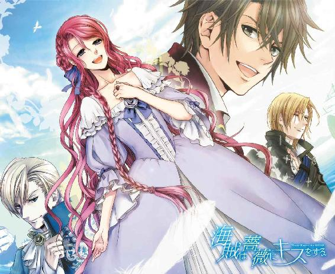
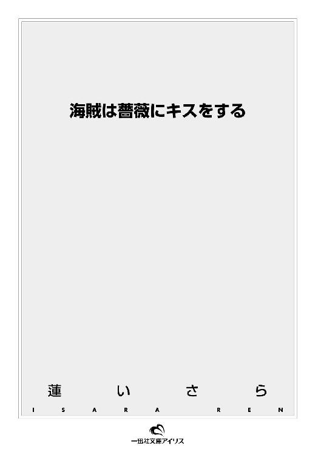
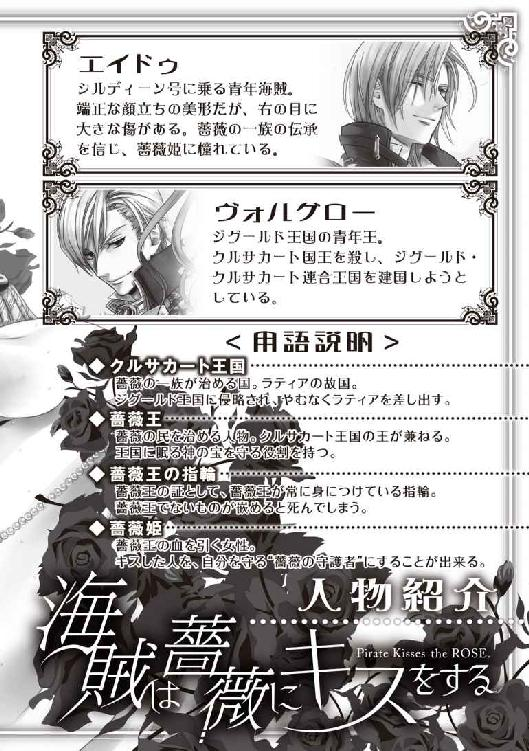
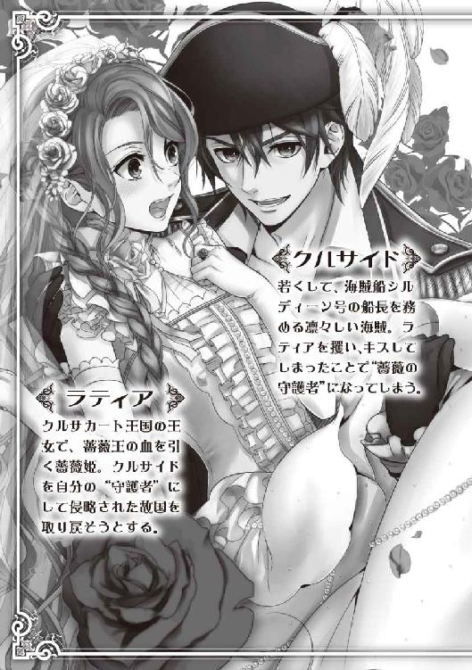
イラストレーション ◆ 鈴ノ助
海賊は薔薇にキスをする
ざぁ、ざざぁ、と波の音が響く。
白い波が甲板にまで飛び跳ねる。冷たく塩辛いしずくは眩しい太陽の光を受けてきらめき、まるで船を飾る宝石のようだ。
リウ・ミリアニス号――三本檣の大型帆船は、波飛沫に飾ってもらうまでもなく、きらびやかに装い立てられていた。舷縁にはすべて真っ白な薔薇が無数に結びつけられていて、海風に花びらを散らしている。
帆桁にも薔薇が飾られ、甲板に立つ白のドレスに身を包んだたくさんの娘たちは、やはり白い薔薇の花束を手に、はち切れんばかりの微笑みを浮かべていた。
彼女たちが囲むのは、前部の船首楼閣に据えつけられた幕屋である。その柱にもぎっしりと白い花が結ばれ、天幕は中が透けて見える紗でできている。
天幕の中には、人影があった。立っている太陽の色をした髪の男、その隣の椅子に腰掛けてうつむいている、薔薇色の髪の少女。ふたりの後ろに立つ、白いドレスの三人の少女たち。
「失礼いたします」
ひとりの少女が天幕の紗の前で頭を下げ、すると白い装いの少女が幕を引き開ける。さわり、と海風が天幕の中に吹き込み、座って下を見つめている少女の、ゆるやかに波打つ長い薔薇色の髪を吹きあげた。
舞い散る白い花びらの中、鮮やかな薔薇色の髪は艶をきらめかせて見る者の目を奪う。
天幕に入ってきた少女は、立っている男に銀の杯を手渡した。続けて座っている少女にも杯が渡される。薔薇色の髪の少女は、黙ってそれを受け取る。
「ティスラティアさま」
輝く太陽のように眩しい髪をした男は、溌剌とした声で薔薇色の髪の少女を呼んだ。
「どうぞ、咽喉を潤してください。海風の中では、咽喉が渇くでしょう」
ティスラティアと呼ばれた少女――ティスラティア・ディスフォーン・ゾエ・クルランシー、親しい者にはラティア、と呼ばれている――は、顔をあげた。
彼女の瞳は、鮮やかな紫だ。男に向けられたその目は、鋭く尖っていた。
ラティアに睨みつけられて、男はにやりと笑う。そして銀杯の中身をぐいと干した。
「いつまでも意地を張っていても、いいことはありませんよ」
男――ヴォルグロー・オルラント・レイ・クラウデゥートリト――は、ラティアの視線の険しさなどものともしていない。彼女のそのようなまなざしになどすっかり慣れた、というように笑みを濃くする。
「今日は婚姻式ですよ。花嫁がそのような表情では、この華々しい日に影が差してしまいます」
「......婚姻式なんて、ぶっつぶれればいいんだわ！」
ラティアは、吐き捨てるようにそう言った。
「リウ・ミリアニス号ですって？ ばかばかしい、愛の女神に、何を祝福させようというの？」
「もちろん、私とあなたの結婚ですよ」
ヴォルグローは、涼しい顔をしてそう言った。
「私たちの結婚を、愛の女神が祝福しないわけがありましょうか。我がジグールド王国と、あなたという王女を戴くクルサカート王国......ジグールド・クルサカート連合王国の誕生、そして私たちの結婚――これほどに華々しい日が来るとは、ね」
「お父さまを、殺しておいて！」
「おやおや」
ラティアが紫の目を見開いて叫ぶのを前に、ヴォルグローは大袈裟に肩をすくめて見せた。
「聞き捨てならないことを、大声で言うものではありませんよ。そのようなことを言って、王女たるあなたが、クルサカート王国の民たちの命を無碍にしていいものでしょうかね？」
「......っ！」
きゅっとくちびるを噛み、ラティアは勢いよくヴォルグローから視線を背けた。薔薇色の髪、それを飾る白いヴェールが、勢いよく空を舞う。
「せっかくの美しい装いを崩すようなことは、やめてください。さぁ、甘いワインを飲んで機嫌を直して、そして笑って？ 皆、美しい花嫁の、より美しい姿を期待しているのですから」
しかしラティアは、紅を塗られたくちびるを噛みしめたままだ。ドレスはしみひとつない白、咽喉を隠す衿から、胸もと、腰、膨らんだ下肢を覆う部分、すべてに手編みレースと真珠、ダイヤモンドの飾りが縫いつけられている。
それそのものが一個の芸術品と言ってもいい婚礼衣装に包まれていても、否、だからこそ、ラティアの胸には苦しみと不快と、無念と鬱屈が深く宿っている。
くちびるを噛んだまま、ラティアはワインの入った銀杯を握りしめた。杯の中身をヴォルグローにぶちまけてやりたい衝動を抑えるために、声には出さず、胸のうちである詩句をつぶやいた。
（神の吐息が花人を生み落とし、尊き命は地に満ちる）
小さなころから、繰り返し聴いて、歌ってきた歌詞だ。
（濁夜に輝く月灯の世界が、聖なる鷹を生み出さん）
それを声には出さずともつぶやいていると、少し心が落ち着いてくる。
（追え 北へ南、西、東へ）
ラティアは大きく息をついた。杯を握り直し、背を正してまっすぐ前を見る。紗の天幕に遮られているものの、太陽の光は、明るく眩しい。それを、大きな紫の瞳を見開いたまま受けとめた。
ラティアの住む、クルサカート王国は小さな島々が連なってできている国だ。この大型帆船は、隣国ジグールド王国の王・ヴォルグローとの結婚を全国民に華々しく知らせる巡幸として、島の間の海を抜けている。大きな大三角帆は風を受け、船はゆっくりと、きらびやかに飾られた行列を見ては歓声を上げる民たちの視線を受けて進んでいた。
突然――。
「......え、......？」
ずどん、という大きな震動。同時に何かが破裂する爆音が甲板の向こうから聞こえたのは、そのときだった。ラティアは、勢いよく振り返る。
「何ごとだ！」
ラティアの頑なさを侮っていたヴォルグローも、杯の中のワインがこぼれる揺れには動揺を見せた。杯を放り投げると天幕を飛び出す。ラティアも、慌てる侍女の手に銀杯を押しつけると、重いドレスの裾をたくしあげて天幕を出た。
「きゃぁ、ああっ！」
どぉん、と再びの衝撃があった。ラティアは甲板のうえに転んでしまったけれど、重なったドレスがクッションとなって、痛みはそう感じなかった。それに今は、痛いと言っている場合でもない。
「どうした、何があった！」
「水が！ 水が入ってくるぞ！」
ヴォルグローは、真っ先に爆音のもとへと駆けていってしまった。船上の女たちは悲鳴をあげ、男たちはうろたえている。海兵たちはさすがにてきぱきと動いているが、爆音の原因を知って怒声を上げているようだ。
「――海賊だ！」
ラティアは、大きく目を見開いた。またドレスをたくし上げると、舷縁へと走る。脅えて震えている侍女たちをかきわけ、縁を越えて視界の向こうを見やった。
結婚パレードのために新しく造船されたリウ・ミリアニス号には、同じように飾りつけをされたたくさんの護衛艦がついている。その向こう、飾りなどいっさいない簡素な――そのぶん、恐ろしいまでの船足でこちらに近づいてきている一艘の船があった。
二本檣の小型快速帆船だ。十本の櫂が凄まじい速さで動き、主檣の帆柱のうえにはこれ見よがしに黒い旗――不気味に真っ赤なふたつの骸骨の紋様が浮きあがった、海賊旗がはためいている。
「か、いぞく......？」
小型快速帆船は、リウ・ミリアニス号の護衛艦の間を抜けて、まるで天からの見えない糸に操られているかのようにすいすいとこちらに向かってくる。ラティアたちが乗っているのは飾り船、せいぜい海兵たちの持つ銃くらいしか武器はない。
しかし海賊の小型快速帆船は、その小さな船体に似合わず片方だけで七砲――つまり、こちらからは見えないもう片方もあわせると、十四砲もの大砲を持っていて、それが放つ弾丸が続けざまにリウ・ミリアニス号を襲っているのだ。
「な、ぜ......」
今日は、婚姻式だ。護衛艦をつけることは言うに及ばず、巡る海域への警戒も怠っていなかったはずだ。あの海賊船は、いったいどうやって監視の目をくぐり抜けたのか。
次々と大砲の弾を受け、リウ・ミリアニス号は大きく揺れる。舷縁につかまっていても、船体に穴を開けられ沈みかけている船のうえでは足もとはおぼつかない。
必死に縁につかまり、紫の目を見開いて海賊船を見つめるラティアをとめる者は、誰もいなかった。誰もが自分の身を守ることに必死で、花嫁衣装を乱して海賊船を凝視している花嫁のことに目を向けている余裕がないのだ。
海賊船が、目の前にまで近づいてくる――どぉん、ともう何度目かになる轟音がして、リウ・ミリアニス号は大きく右へと傾いた。
「きゃ、っ......！」
ラティアは、斜めになった右舷側に座り込む恰好になる。このまま船が右へ転覆すれば、すべり落ちて海の藻屑だ――しかもそれは、そう遠くないことのように思える。この重いドレスのまま海に落ちれば、溺れてしまうだろう。もしくは、海賊たちにつかまってその餌食になるか――彼らは、目の前にまで迫っていた。
「......、あ......！」
海賊船の船首に立っているのは、腕組みをした男だった。濃い褐色の髪に、黒い瞳。十六歳のラティアよりふたつ三つ年上であろうその男は、黒一色の三稜帽をかぶり、海風に派手な真っ赤の燕尾服をなびかせている。
彼は楽しげに、にやりと笑い、まっすぐにラティアを見ている。その笑みは挑戦的で不敵なのに、どこか好ましげに感じられた。――海賊を前に、好ましいなんて！
「投げろ！」
黒い瞳の男が、叫ぶ。その後ろにいた、半裸の男たちがいっせいに何かを投げつけてきた。ラティアは思わず、ぎゅっと目をつぶる。
「な、に......」
ラティアのつかまる舷縁に、何かががつんとぶつかる音がした。目を開けてみると、目の前では銀色に光る鉤爪が、舷縁を噛んでいる。その先は、海賊船から延びている丈夫そうな太い縄だ。そして驚いたことに、その縄を伝って男たちがリウ・ミリアニス号に乗り込もうとしているのだ。
「きゃ......、！」
ラティアは思わず、舷縁から手を離した。と、そのまま傾いた船から落ちそうになる。
「おっと」
そんなラティアを助けたのは、逞しい腕だ。ラティアの腰に伸び、がっしりと受けとめてくれる。身動きもままならないほどの、強い力だ。
「その恰好で海に落ちちゃ、あっという間に海の底だぞ」
「あ、なた......」
あの、黒い瞳の男だ。彼はラティアの目を惹きつけた、にやりとした笑いを浮かべたままラティアを抱きとめている。いくら縄が丈夫だとはいえ、どのような腕力と速度で伝い乗り込んできたのか。
彼はじっとラティアを見つめ、印象的な薄いくちびるを開くと、はっきりとした声で尋ねてきた。
「クルサカート王国の王女、ティスラティア・ディスフォーン・ゾエ・クルランシー？」
「......そう、よ......」
なぜ、素直に認めてしまったのか――海賊が一国の王女をとらえて、することはひとつだ。とはいえ、どこをどう見ても花嫁衣装を着ているラティアが『クルサカート王国の王女』であることを否定することは難しかったし、何よりも彼の目がラティアに嘘をつかせなかった。海賊なのに――悪人なのに。彼はどこか澄んだ、まっすぐな目をしていた。
「そうか」
男は、黒い目を細めて笑った。
「おとなしくしてな。逆らわなきゃ、無体はしない」
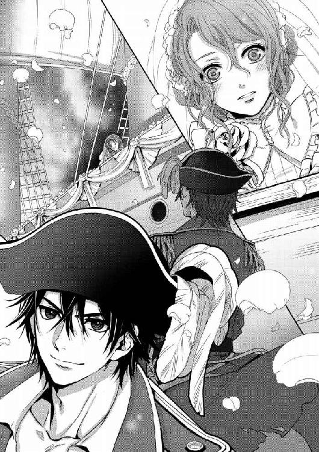
ラティアは、ごくりと固唾を呑んだ。海賊に連れさられてしまう――そして、どうなる？ ラティアの思考は、一瞬の閃光となって脳裏を貫いた。
次の瞬間、ラティアは大声で叫んでいた。
「わたしを、連れていって！」
男の、黒い目が見開かれる。彼に向かって、ラティアはなおも声をあげた。
「わたしを、奪っていって！ あなたと一緒に、ずっと遠くへ！」
彼の笑みが、濃くなる――不敵な笑みは、ますますラティアのまなざしをとらえた。
「面白い」
ラティアの腰を抱く腕の力が、強くなる。気づけばラティアは、まるで荷物のように彼の肩に抱えあげられていた。
「きゃ、あ、あああ、っ！」
「黙って攫われな、お姫さま」
抱きあげたラティアを振り返って、男は楽しげに歌うように言う。
「あんたが望んだんだ――望みどおりに、してやるよ」
ともすれば、大きな間違いを犯したのかもしれない――海賊旗をはためかせて現われた海賊たちは、吉か凶か――ラティアは紫の瞳を大きく見開いたまま、海風に吹かれはためく男の褐色の髪を、生気に満ちた輝く黒い目を、見つめていた。
船において、女は吉兆である。
あらゆる女は海の娘であり、海はその愛し子を喜ぶ。ゆえに女の乗っている船は嵐に呑み込まれることもなく、難破することもなく、穏やかな航海を約束されているのだ。
しかし、船上の生活は不便極まりない。顔を洗う水さえ制限され、まめに体を洗うなどもってのほか。新鮮な食べものは少なく、甲板を行き交う山羊に豚、鶏や鵞鳥たちと始終向きあい、常に揺れる甲板で、塩辛い波をかぶることなど日常茶飯事だ。ついで嵐にまったく遭わないわけもなく、舷縁を一歩越えてしまえば、地獄への一本道――。
清潔に、着飾ることなどとうてい望めもしない船での生活を望む女は、少ない。だからこそ船に女がいることを船乗りたちは喜び、海の娘たる彼女たちを尊ぶのだ。
ラティアは、瞳の色を薄くしたような藤色のドレスをまとっていた。無数の真珠やダイヤモンドに飾られていた花嫁衣装とは比べものにならないくらい質素ではあるが、しかし目の詰まった布は綿、縫製も細かい目でしっかりとしていて、上質なものであることはまとうまでもなく、わかった。
「戦利品のひとつだがな、箱の隅に突っ込んであったから、気がつかなかったやつだ」
突っ込んであったというだけあって、ドレスは皺だらけだ。今までクルサカート王国の王女としてなに不自由ない生活を送り、鏝の当たっていないドレスなど着たこともないラティアには驚くべき衣だけれど、ラティアを攫った男をはじめとして、船のうえの皆はもっとひどい恰好をしている。
二十人は下らないであろう男たちは、皆くさい木炭油の塗られた革の胴衣、繕われたあとだらけの目の粗い帆布の上衣と脚衣姿だ。まとうものが体に合っていない者も多く、上衣の前を大きく広げたり、逆に袖や裾を幾重にも折りたたんでいる姿が見受けられる。
「お姫さまに、似合ってよかった」
「......、こんな、ドレス」
宝石の縫いつけられたウェディング・ドレスは戦利品として奪われてしまったが、その代わりに、一応はきちんとした衣をくれたのだ。
礼を言うべきだったのかもしれないけれど、目の前の男は無理やりにラティアを脱がせ、これを着せたのだ。素直に礼など言えなくて、ラティアの口からはそんな言葉が洩れた。
男は、むっとした顔をした。黒い瞳が尖ってラティアを睨みつける。荒々しい男の視線を受けてラティアはたじろいだけれど、口もとに力を込めて表情には出さないようにする。
「悪かったな、こんなドレスで」
「そうよ。......一国の姫に着せるというのに、こんなものしかないなんて」
口を尖らせて、そう言った。男はますます不愉快そうに顔を歪め、ふたりは睨みあった。
ふたりの視線がぶつかりあう。男のまなざしは鋭くて痛いほどだったけれど、それでいて憎まれ口を利くラティアを心底怒ってはいないような、どこかラティアを困った駄々っ子と呆れているような色があって、それがますますラティアを苛立たせた。
「すまんな。何しろ、お姫さまの扱いは慣れていないんでな」
どこかラティアをなだめる口調でそう言って、男は顎先で自分の前を指した。
「そこ、座りな」
濃い褐色の髪に、真っ黒な、磨いた黒耀石のような瞳の彼は、木の箱の上に座っている。よく見ると彼のまとう燕尾服はあちこちほつれ、裾は切り刻んだようにぼろぼろで、ラティアの知っている、紳士のまとう〝燕尾服〟とはほど遠い。
彼は脚を組んで膝のうえに肘を置き、頬杖をついている。その目の前にも同じものがあって、彼はそれを示しているようだ。
「......、......」
今まで、絹の張られた柔らかい椅子にしか座ったことのないラティアだ。箱のうえに座れなどと促されて、戸惑った。しかし黒い瞳の男のまわりにいるのは彼ほどではないものの、目の前にいるだけで迫力の伝わってくる男ばかりだ。彼らの無数の視線に圧されるように、ラティアは恐る恐る、木の箱に腰を下ろした。
「きゃ、っ！」
箱は、絹の椅子のように柔らかくラティアの体を受けとめてはくれない。加減がわからなくて硬い木に尻を打ちつけてしまい、悲鳴をあげてしまった。
「ははっ、本当に〝お姫さま〟だな」
黒い瞳の男は笑った。まわりの男たちも同じように笑い、彼らの嘲笑にラティアはむっと視線を尖らせた。
「......まぁ、あのパレードの隊列に入り込めた腕は、評価してあげるわ」
懸命に座りやすい体勢を探しながら、ラティアはつんと顎を反らせて言った。
「でも、あの隊列に割り込んでくるなんて......、いったい、どうやって入り込んだの？ しかも、あんな大砲を積んだ船なんて。パレードの航路は、厳重警戒してあったはずよ」
「そりゃあ、あれだ。国家機密ってやつだよ」
黒い瞳の男は、にやにやしながらそう言った。明らかにラティアを――クルサカート王国の警衛態勢をばかにした様子の彼に、ラティアはむっと眉をひそめる。
「で？ この立派な国家は、なんというのかしら？」
皮肉に尋ねたラティアに、男は素直に答えた。
「この船は、シルディーン号。俺たちを守ってくれる、女神だ」
「シルディーン......？」
自分の乗せられた船の名を耳に、ラティアは顔をしかめた。
ラティアが乗せられているのは、リウ・ミリアニス号を襲った二本檣の小型快速帆船ではない、三本檣に大三角帆をはじめとした、真っ白な帆を悠然と広げた大型快速帆船だ。
「水の姫......精霊の名前じゃないの。ずいぶんと、大きく出るわね」
「もちろんだ。この船には、水の姫の加護がある。そのおかげで、海の娘である女......しかも、一国の姫を手に入れることができた」
なおもにやにやと、黒い瞳の男はラティアを見る。このような男に連れてこられてよかったのだろうか。今さらながらに、ラティアは自分の選択を後悔した。
「俺は、クルサイド。このシルディーン号の船長だ」
「船長......」
ずいぶんと若いのに、この船を、海賊たちを率いる長なのだ。まわりには彼よりもずっと年上の、ともすればクルサイドの祖父ほどの年齢の男もいるのに、彼がこの見るからに荒くれた男たちをまとめる頭なのだと思うと、不思議な思いがした。
「あんたにはクルサカート王国だけじゃない、ジグールド王国に対しても人質の価値がある」
クルサイドの笑みの色あいが変わる。ラティアや、ラティアをみすみす攫わせた者たちへの嘲笑から、悪人のそれへと変化した。悪しき企みを持った、凶漢の表情だ。ラティアの背はぞくりと震えたが、決して動揺を見せないように表情を引きしめる。
ますます気丈にクルサイドを睨むラティアを、彼は面白そうに見た。そしてにやり、と口の端を持ち上げる。
「どっちの国からも、たんまりと身代金をいただける。なぁ、どれくらいのお宝になるか、想像できるか？」
クルサイドは楽しげに、かたわらの同じ年ごろの男に声をかけた。長い金色の髪に、青の瞳。肌も白く、一見すると海賊などには見えない端正な顔だ。しかし右目だけを閉じていてその上に鋭い傷痕が走っていることが、彼の美貌を裏切っていた。
「なぁ、エイドゥ？ おまえの頭は、どう計算する？」
「そうですね、新しく興った、ジグールド・クルサカート連合王国の初代王妃の値段です。十億ヴィオランは下らないでしょうね」
おおお、と喚声があがる。男たちの大きな波音をも裂く叫び声に、ラティアは思わず両耳を手で塞いだ。
「なら、二十億ヴィオラン要求してやろう！ それと、俺たちだけの港だ！ いつでも俺たちだけが使える、専用の港！」
喚声はさらに大きくなった。ラティアは強くくちびるを噛み、じっとまわりの者を見やった。
「お金は、好きにすればいいわ。でもわたしは、人質になるためにここにいるんじゃない」
響き渡る声を縫うようにしたラティアの言葉に、皆が一様に彼女を見た。
「薔薇王の指輪を、捜してちょうだい」
大きな声で、誰の耳にも届くようにはっきりとラティアは言った。
「薔薇の一族の、とても大切な宝なの。ヴォルグロー王が我らが王を殺したとき、ともに失われてしまったもの――薔薇王のみが嵌めることを認められる、指輪よ」
「指輪、だと？」
喚声をあげていた海賊たちは、一様にラティアを見た。じろりと睨まれてたじろいでしまいそうになるものの、ラティアは自分の体に力を入れた。
「薔薇王は、ただ薔薇王のためだけにある指輪を持っているの。薔薇王たる資格のない者には、嵌めることが許されない――」
ラティアは、ちらりとクルサイドを見た。
「それを、捜してちょうだい あなたたちの助力が必要なの」
「おい、ただでとは言わないだろうな？」
頬に鋭い傷の入った海賊が、強いまなざしでラティアを見やってくる。
「もちろん、薔薇王の指輪を見つけた者には報酬があるわ。海賊としてではなく、同等の相手として港に迎える用意もできる」
しかしそう言ったラティアを、海賊たちはせせら笑ったのだ。
「おいおい、おまえは王女だろう？ 王でもあるまいし、たかが王女にそんな権限があるのか？」
「信じられないな。手伝わせるだけ手伝わせておいて、薔薇王の指輪とやらが見つかればしらばっくれるつもりなんじゃないのか？」
「おまえはおとなしく、人質になってりゃいいんだよ。おまえの役目は、それで充分だ」
なおも続く、ラティアの言うことを信じない荒男たちのあげる怒声が耐え難く、両耳を塞いでしまう。ぎゅっと目を閉じて、身を硬くした。
（どうすればいいの......。わたしひとりで捜すことなんて、できるわけがないのに）
ラティアの胸中に、不安と焦りが浮かぶ。
（こうしている間にも、ヴォルグロー王はわたしを追っているはずなのに。今にも、つかまってしまうかもしれないのに......！）
焦燥はラティアをさいなみ、思わずぎゅっとくちびるを噛んだ。とらえられれば、ヴォルグロー王は二度とラティアを手放すまい。鎖につないで塔の最上階に閉じこめてでも、自分の監視下に置くはずだ。
（そんなことになったら......、お父さまの指輪を捜すことなんて夢のまた夢......）
「そんなに、怖がるなよ」
強く耳を塞いだはずなのに、すっとすべり込んでくる声がある。ラティアは思わず手をほどき、顔をあげた。
いつの間にか、クルサイドがかたわらに立っている。ラティアの人質としての価値を皮算用して大騒ぎをしている男たちを背に、クルサイドはラティアに顔を近づけると、ささやきかけてきた。
「お姫さまを驚かせるつもりはないんだぞ？ あんたがおとなしくしててくれりゃ、危害は加えない。お城にいるように、とはいかんが、できるかぎり、丁寧にもてなしてさしあげる」
「......そう。ありがとう......」
そのときのクルサイドが、あまりにも優しい顔をしていたから。まるでラティアに仕える従僕たちのように穏やかにそう言ったものだから、ラティアは思わず、突かれたようにそう言っていた。
「かわいいじゃないか」
クルサイドは、一瞬にして海賊の顔になって、そう言った。
「お姫さまは、そんな顔もするんだな。王女なんて、つんけんしてお高くとまったやつばっかりだと思ってたが......」
「......あ、！」
ラティアが、逃げる暇もなかった。クルサイドはラティアの細い顎をとらえ、上を向かせる。今にもくちびるが、重なりそうになって――。
（......――！）
その瞬間、ラティアの脳裏に走った雷撃のような考え――それに、クルサイドが気がついたはずがない。
（この方法......、この方法を、取るしかないわ......！）
ラティアの胸には、強い決意が生まれていた。それは、ラティアの全身に力を漲らせる。
クルサイドを抱き寄せたラティアは、くちびるを寄せた。そうやって恋人にされるように、彼のくちづけを受け入れる。
「......ずいぶんと、大胆なやつだな」
くちびるをほどいたクルサイドは、驚いた顔をしている。
「もっとも、おとなしいお姫さまだとも思っていなかったが......ジグールド王から乗り換えて、俺の女にでもなろうって気か？」
驚きながらも戯けてそう言うクルサイドは、はっと表情を変えて目を見開いた。彼は体を折り、胸を押さえる。彼の腕から逃れたラティアは痛いほどに手を握りしめたまま、じっと見つめていた。
「どうした、船長！」
「もしや、その女、毒でも仕込んで......」
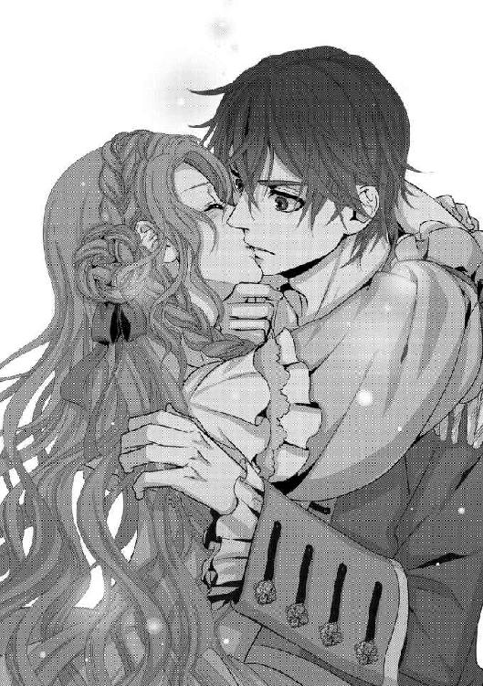
騒いでいた海賊たちはにわかに叫ぶのをやめ、クルサイドのもとに駆け寄ってくる。彼の体を支えようとする仲間たちを、クルサイドは遮った。
「何でもない。大丈夫だ」
「いや、でも......」
「少し、苦しくなっただけだ。もう、平気だ」
それでもなお、心配そうな海賊たちの中、ラティアは勢いよく甲板に降り立つ。いきなりのラティアの行動をとめられる者は、誰もいなかった。
「ちょ......、おまえ、何を......！」
クルサイドやほかの海賊たちの声を背に、ラティアは走る。舷縁に手をかけ、懸命に乗りあげると縁を力いっぱい蹴って、一気に海へと飛び込んだ。
「お姫さま......！」
ラティアを追う声がした。しかしそのときのラティアは、飛び降りた勢いに大きくドレスを巻きあげられながら落下していて、凄まじい勢いで海に落ちた。
「く、ぁ......っ、......」
飛び降りた勢いのぶん、一気に深くまで沈んでしまう。息ができなくてラティアはもがいたけれど、同時にもっと苦しくなるように、深く沈むように、胸の奥から息をすべて吐き出した。
（もっと、深く......、苦しく......！）
塩辛い海水が口の中に入ってきて、ひと息にたくさん飲み込んでしまった。海は冷たくて、たちまち体温を奪われる。願うまでもなく、ラティアは気を失いそうになった。それでも懸命に、自らの身をもっと深くと必死に手を掻く。
目を開けようとしたけれど、海水が目に沁みてすぐにぎゅっと閉じてしまった。冷たい水に包まれて指先までが痛み、全身を包む極限までの苦しさに耐える。
そんなラティアの腕を、強く掴むものがあった。
（......、よかった......）
苦しいのは変わらないけれど、ラティアは心底、安堵した。契約は成り立った。目に沁みる濃い海水に負けじと、ラティアは目を見開く。
ラティアの腕を掴んでいるのは、予想どおりクルサイドだった。彼は顔を歪め、それでもラティアの手を離さない。その強い腕がラティアを抱き寄せ、包み込むようにすると慣れた様子で海面に向かって泳ぎ始める。
「......ふ、は、っ！」
たちまち海上に辿り着いたラティアは、大きく息を吸った。体温を奪われるきりきりとした痛みはそのままだったけれど、苦しさからは解放された。
クルサイドはラティアを抱いたまま、目の前に降りている縄梯子を掴む。水を吸ったドレスを、まとったラティアの体重などないかのように片手で縄梯子を登っていく。
「は、ぁ......っ......」
ラティアを甲板に下ろし、濡れたドレスのまま座り込むラティアがしっかりと目を開いているのを見届けたクルサイドは、大きく息を吐いた。甲板に手を突き、何度も息を吸う。
「大丈夫か、船長！」
「なんだって、いきなり......」
まわりの海賊たちは、戸惑いを隠さない。ラティアもはぁはぁと荒い呼吸をしながら、眉をひそめているクルサイドを見つめた。
「そりゃ、大事な人質だけどな」
「しかし、船長。船長自ら、飛び込んで助ける必要はないだろう？ このあたりは、鮫だって出る。なにも、船長が行かなくても......」
「わからないんだ」
荒い呼気のまま、クルサイドは言った。
「なんだか、わからん。このお姫さまが飛び降りたとき、なんだか急に、ものすごく焦ったんだ。無理やりなにかに背中を押されてるような気になって、気がついたら、飛び込んでた」
「なんだ、そりゃ？」
海賊たちは不思議そうだけれど、クルサイドのほうがもっと不思議だと言わんばかりだ。彼の黒い目が、ラティアを見る。ふたりとも荒い呼気のまま、じっと見つめあった。
「お姫さま......、あんた、何者なんだ？」
ラティアは、一瞬息をとめる。しかしすぐにまたはぁはぁと息をしてしまい、うまく言葉を継ぐことができない。
ふわり、と後ろから、何かがかけられる。振り返ると、金髪とひとつの青い目――エイドゥと呼ばれていた男だ。彼はラティアに微笑みかけると、乾いた麻布でラティアの体や髪を拭ってくれる。
「無茶をしますね。......何が目的です？」
エイドゥは、潰れた片目以外は海賊とは思えないほどに紳士的だ。しかしもうひとつの目は鋭く光り、彼の長を危険な目にあわせたラティアを責めているようだ。ラティアが逃げようとしたわけではないことを、読み取っているかにも見えた。
ラティアは、ひとつ大きく息を吸った。クルサイドに向き直り、じっと彼を見る。クルサイドも、自分を突き動かした衝動が何なのか――ラティアがその謎を解き明かそうとしていることに気がついたのか、視線を離さない。
「――わたしは、薔薇姫」
低い声で、ラティアは言った。
その言葉に反応した者もあったし、何のことかと首をかしげる者もあった。クルサイドは前者だった。最初は大きく目を見開き、そしてすがめると、深く吐き出す息をつく。
「さっきも、薔薇王の指輪を捜せって言ってたな。クルサカート王国は、薔薇の一族が治めている――神の宝が眠っているという国だという伝説は、やっぱり本当なのか」
「ええ」
息を詰めたまま、ゆっくりとラティアはうなずいた。
「クルサカート王国は、『神の宝の眠る国』。神がその大切な宝を隠し、もっとも愛するという花、薔薇で覆ったという――その〝宝〟がなんであるのかは、知らないけれど」
ちらり、とラティアはまわりを見た。ラティアの言う〝宝〟はなんなのかと、海賊たちが色めき立ったのを感じたからだ。
「あなたたちが喜ぶようなものではないわよ。金や銀や、宝石などではないのは、確かなことなんだから」
冷ややかに、ラティアは言った。ちぇっ、とあからさまに舌打ちをする海賊たちから視線を離し、ラティアはじっと自分を見つめるクルサイドにまなざしを向ける。
「その宝を、クルサカート王国を治めるという形で薔薇の一族が守っているの。これが、その証よ」
ラティアは、左手を突き出した。そこには銀色の指輪が嵌められている。中央に填まっているのは、きらめく透明の宝石だ。
「一族は、皆同じ指輪を嵌めているわ。この石は、薔薇の指輪同士が近づけば薔薇色に光る。もっとも大きな石を嵌めた指輪を持っているのが、薔薇の王――」
きゅっ、とラティアは手を握りしめた。くちびるを噛み、しかしすぐにほどいて話を続ける。
「薔薇の王の血を引くのが、薔薇姫。そしてわたしは、クルサカート王国の王だったお父さまの血を引いた、唯一の娘」
ラティアの話に、海賊たちは声をあげたりひそひそ話したり、さまざまな反応を示していた。そんな中クルサイドは髪から海水をしたたらせながら、その真実を疑うようにじっとラティアを見つめている。
「薔薇姫は、先代の王から次代の王へ、王の証である薔薇王の指輪を伝える義務を持つ。確かにふたりの王をつなげることが、薔薇姫の務め」
まだ、海に落ちたときの息は治まっていない。言葉を切り、ラティアはすぅと息を吸った。
「神の宝を守るために、こうやって薔薇姫は自分を守らせる守護者を選ぶことができるの。それは、薔薇姫だけに与えられた特殊な力」
しん、とラティアの言葉に聞き入る戦場を、ゆっくりと見まわす。
「薔薇姫とのくちづけは、薔薇の守護者となる契約――」
また、少し息を吐いた。クルサイドに抱きしめられキスされたとき、この考えが頭を貫いた。ほかに方法はないと思った。広い海に手を伸ばすことのできる海賊こそが、ラティアの目的を果たしてくれるのだと。
「あなたは、薔薇王の指輪を捜す権利を与えられたわ。わたしによって」
「与え......られた、だと？」
ええ、とラティアはうなずいた。
「あなたのキスに、わたしは契約を願った。契約が成り立ったから、あなたはあなたの意志ではなくともわたしを守ってしまうの。わたしの身に危険が及べば、あなたの体は反応するわ。あなたが、いやだと思ってもね」
「......そういうことか......」
呻くように、クルサイドは言った。ふるっと首を振るい、水飛沫を飛ばす。
「俺は、一生このままなのか......？」
なおも、警戒した獣が唸るようにクルサイドは声をあげる。ラティアは彼をじっと見つめ、ゆっくりと口を開いた。
「契約を解除する方法は、あるわ。けれど、わたしの目的を達するまでは教えない」
「おまえ......！」
クルサイドは色めき立った。ほかの海賊たちもそうだったけれど、エイドゥだけは冷静にクルサイドを、そしてラティアを見やる。皆の鋭い視線に突き刺されたまま、ラティアは言葉を続けた。
「あなたは、わたしの守護者として働くしかないの。クルサイド」
すっと、またひとつ息を吸ってラティアは言う。クルサイドは、むっと眉をひそめた。
「わたしを人質として、ヴォルグローに差し出すのもいいわ。そうしたらクルサイドは一生わたしから離れられないけれど。どこにいても、わたしの危機には体が勝手に反応してしまうのだから」
疑うような目をしながら、それでも薔薇姫の守護者になってしまったことを自ら体感したのだ。クルサイドはこれ以上はできないほどに顔をしかめながら、ラティアを睨んでいる。その視線に負けないように、ラティアはぐっとまなざしに力を込めた。
「俺たちが、ものすごく遠く離れていたら？」
凄味を持った声で、クルサイドが言う。ラティアは膝に手を置き、きゅっと体に力を込める。
「そういう話は、聞いたことがないわ。わたしの知っているかぎり、薔薇の守護者は常に薔薇姫の側に侍って、薔薇姫を守ってきたから」
そして、薔薇の守護者が海賊であったというためしもない。たいていは王宮に仕える騎士で、神聖なる誓いとともに薔薇姫を守ると聞いている。
「遠く離れてる場合......そうね、薔薇姫を守ろうとする体と心が分離して、めちゃくちゃになってしまうかも。つまるところ、死ぬわね」
まわりがざわりとした。クルサイドは顔を歪め、濡れた髪をぐしゃぐしゃとかきまわす。
「で、俺たちは指輪を捜せばいいのか」
ええ、とラティアはうなずいた。
「薔薇王の指輪さえ、手もとに戻ってくれば......わたしは、わたしの目的を達することができるの」
その表情があまりに真剣だったからか、ラティアの秘めた思いが薔薇の守護者たるクルサイドには伝わるのか。彼は問うた。
「なんなんだ？ あんたの目的ってのは」
なおも髪をかきまわしたまま、クルサイドが返事を待っている。ラティアは、ごくりと固唾を呑んだ。そして再び体に力を入れると、口を開く。
「ジグールド王国、国王。ヴォルグロー・オルラント・レイ・クラウデゥートリトを、殺す」
ざわめきが、大きくなった。海賊たちは、そのような言葉が少女の口から出るとは信じられないと叫び声をあげ、クルサイドは大きく黒い目を見開いている。
「殺す、だと......？」
ええ、とラティアはうなずいた。なおも騒ぎのやまない中、ラティアは皆に聞こえる大きくはっきりとした声で言う。
「薔薇王の指輪を、捜すのよ」
改めてラティアが口にした言葉に、クルサイドが目を光らせる。彼の興味を引くように、ラティアはじっと彼を見た。
「行方不明の薔薇王の指輪を、ヴォルグローに嵌めさせるの。薔薇の王でない者が薔薇王の指輪を嵌めると、砂になって消えてしまう。薔薇王の指輪を捜して、ヴォルグローに嵌めさせる。そうすれば再び、クルサカート王国を独立させられる」
ラティアは、ひとつ息を吸った。クルサイドを見て、言う。
「あの男が死ねば、契約は解除してあげるわ」
「しかし、おかしくないか？ その話」
口を挟んだのは、まだ少年といっていいほどの海賊だ。クルサイドの隣に陣取って、疑うようにラティアを見つめている。
「おまえたちのクルサカート王国が、先にジグールド王国を襲ったんだろう？ それでジグールド王国は抵抗し、傍若無人なクルサカート王国を返り討ちにして王を殺し、ジグールド・クルサカート連合王国を作ったって聞いてるぞ」
「それは、ヴォルグローの喧伝。嘘よ」
彼に視線を向けて、ラティアは言った。
「本当は、逆。ジグールド王国がクルサカート王国を襲ったのよ。クルサカート王国には、神の宝を守るという使命がある。なのに他国を蹂躙して領地を広げようなどと考える理由もないし、神の手前、そのようなこと、畏れ多いわ」
それはそうだ、と納得する声があがる。クルサイドはなおも厳しい目をしてラティアを見ていたが、少しだけ貫くような色が和らいでいるように感じた。
そんなクルサイドの前に、決意を新たにするようにラティアは拳を握り直す。
「このことをわたしが他国に知らせれば、ヴォルグローこそが侵略者だと真実を知ってわたしの味方をしてくれる国もあるだろうし、クルサカート王国の民も真実を知ることになるわ。だからヴォルグローは今、血眼になってわたしを捜しているはず」
膝のうえ、濡れたドレスを握りしめるラティアは、その手が微かに震えていることを見抜かれないように、懸命に押し留めようとする。
「わたしはつかまってしまう前に薔薇王の指輪を捜し出し、ヴォルグローに薔薇王の指輪を嵌めさせるの。こうやってわたしがヴォルグローの手から逃げられたのは、そのためなんだわ」
ラティアはクルサイドを見やる。目を逸らすことのない彼を見つめ、言葉を綴る。
「あなたは、協力するわね？」
クルサイドは、なんとも言わなかった。なおもラティアに視線を向けたまま、低い声で問う。
「王の指輪は、どこにあるんだ」
ラティアは、ゆっくりと指輪の嵌った手をあげた。その指先は、先ほどラティアを呑み込んだ海へと向けられる。
「お父さまの遺体は、ヴォルグローとの戦いによって海に落ちた。薔薇王の指輪と一緒にね。遺体は引きあげられたけれど、そのときすでに指輪はなかった」
そのときのことを思い出し、ラティアはぶるりと身を震わせる。青白く血の気を失った、父のぐっしょりと濡れた遺骸。無念に見開かれた目。ラティアはひととき目を閉じ、再び開いてクルサイドを見る。
「沖に流されたんだと思うわ。今は、この海のどこかを漂っているはず」
「どうしたら、どこにあるかわかるんだ」
海を差した手を、クルサイドに向けた。きらり、と透明な石がきらめく。
「近くにあれば、わたしのこの指輪の石が薔薇色に光る......それが、合図よ」
「......近くって、どれくらいだ」
海賊のひとりがそう言った。ラティアはそちらに目をやって、今は透明なままの石を見せつけるように言った。
「そうね......ここから、あそこまでの範囲......五十ヤーベルトくらいかしら。城にいたころは、一族の誰かと遠く離れてしまうようなことがなかったから、はっきりとはわからないけれど」
「五十ヤーベルト！」
大袈裟なまでの声をあげたのは、クルサイドだった。彼は顔を歪め、信じられないというようにラティアを見る。
「このだだっ広い海で、たった五十ヤーベルトの範囲まで近づかないと見つからないようなもんを、あてもなく捜せってか？」
「そういうことよ」
ぴんと背を伸ばし、ラティアはうなずいた。クルサイドは大きな声で呻く。
「冗談じゃない。そんな雲を掴むような話に乗れるか。おまえ、クルサカート王国の王女だろう？ 海の広さと深さを知らないわけじゃあるまいに」
「だから、あなたたちに頼んでいるのよ」
クルサイドが渋い顔をするのはあたりまえだ。ラティアも、それが簡単なことではないことはわかっている。そもそも、可能なことであるのかも判断できない。
しかし薔薇姫であるラティアにとっては、薔薇王の指輪を捜し新たな王に渡すということはどうしても果たさなくてはならない義務であり、同時に王の指輪は、祖国を蹂躙したヴォルグロー王を滅ぼすための唯一の武器であった。
「あなたたちは、わたしの手駒になるしかないの。船長は、もうわたしの守護者なのよ。そのうえであえて、薔薇姫がこうやって頼んでいるの。わからない？」
まったく正当なことを言ったつもりだった。しかしそれは、ラティアにはわからない理由で逆効果だったのか。クルサイドは今までで、一番機嫌の悪い顔をした。
「手駒ってな......」
まわりの海賊、皆が不愉快な表情を見せる。その原因がラティアには理解できない。王族から命を受けて、それを名誉と思いこそすれ不快に思うなんて。
「俺たちをどう思ってるのか知らんが、何でもできるってわけじゃない。それに頼むってんなら、頭のひとつでも下げたらどうだ？」
「......な、っ......」
ラティアは、きゅっとくちびるを噛みしめた。海賊に頭を下げるなんて。誇り高き王族が――それはどうしようもない屈辱で、ぎゅっと拳を握りしめる。
そうだ、とクルサイドに賛同する声があがる。そんな海賊たちの誰ひとりとして、いい顔をしている者はいない。それはラティアが彼らの求めている礼を尽くしていないからだろうか。雲を掴むような話だからだろうか。
しかし仮にも一国の王女が、海賊に頭を下げることはできかねた。皆の反応と屈辱に負けん気をかき立てられて、ラティアはなおも気丈に表情を引きしめる。
ラティアは、じっとクルサイドを見やった。自分の濡れたドレスの裾をたくし上げ、先ほど起こったことを改めて自覚させようというように振って見せた。海水のしずくが、あたりに宝石のように撒き散らされる。
それにクルサイドは、はっとしたようだった。先ほど自分の意志ではなく海に飛び込む羽目になったことを思い出したのだろう。そしてそれに象徴される、守護者となった自分の運命を。
微かにとらえたクルサイドの動揺を、確かに見抜いてラティアは言った。
「あなたには、断わることはできないと思うけれど？」
断わればどうなるのか、言外に含めてラティアは言った。クルサイドはじっと、ラティアを見つめる。先ほどの衝動は何だったのか、ラティアがどこまで本気なのか。父の仇を討ち蹂躙された国を救う気持ちが本物なのか、見定めようとでもいうようだ。
船のうえには、沈黙が流れた。聞こえるのは、船体に打ちつける波の音だけ。まるでクルサイドと睨みあうようなこの時間に、全身の緊張に耐えがたくなったとき。
「わかったよ」
ため息とともに、クルサイドが言った。
「世間知らずのお姫さまには、勝てん。どうせ、海に出るのは同じだしな。約束はできんが、薔薇王の指輪とやらを捜すのを手伝ってやってもいい」
「ええ、許すわ！」
歓喜の声を張りあげて、ラティアは言った。
「わたしの助勢を、許します。薔薇王の指輪を見つけてちょうだい！」
それは、王宮では当然の物言いだった。王女であるラティアは常に命令する位置にあり、まわりの者はラティアに従う立場だったのだ。
しかし、クルサイドは眉根を寄せた。ほかの海賊たちもむっと表情を歪め、その理由が先ほど同様、ラティアにはわからない。
「な、なによ......」
戸惑うラティアに、まわりの者は怒りの声をあげ、クルサイドと同じように呆れた顔をする。
「まぁ、お姫さまだからな......」
大きくため息をつくクルサイドは、額を抑えている。
「世間知らずも、許してやれ。こいつは、いつもこうなんだろうからな。ほかのやりかたを知らないんだ」
「どういう意味!?」
仲間たちにそう言うクルサイドに、ラティアは憤慨した。思わず立ちあがる。濡れたままのドレスが思いのほか重くてよろけたけれど、それをエイドゥが、伸ばした両手で支えてくれた。
「......あ」
彼を見あげると、開いている左目を細めて微笑んでいる。その表情に慰められたような気がし、同時にこうやって支えられると、全身の力が緩んだ。ずっと緊張していたぶん体の弛緩は大きくて、思わずエイドゥの腕に全身を預けそうになってしまった。
「薔薇の城に行けば、何かがわかるのではないですか？」
その口から出た言葉に、ラティアは首をかしげた。
「薔薇の城......？」
ラティアは言葉を繰り返し、そう言ったエイドゥを見た。
「ええ。薔薇の城......薔薇の一族は、そうは言わないのですか？」
「聞いたことがないわ。何なの、薔薇の城って」
「薔薇の一族の宝が隠されているという場所ですよ」
皆がエイドゥを見た。彼は注視されて、驚いたように目をぱちくりさせている。
「薔薇の一族も知らないということは、アマーリアにだけ伝わる俗説なのでしょうか。薔薇の城には、薔薇の一族が神から受け取った宝を隠している。ゆえに薔薇の一族はそのことを極秘にし、決して一族以外に洩らすことはないと」
「クルサカート王国が、神の宝が隠されている地だというのはよく知られた話だがな。その薔薇の一族が、さらに神に与えられた宝を隠していると？」
「わ、わたしは知らないわ。そんな話、聞いたことがない」
仮にも、薔薇の一族が知らないことがあるとは。しかしどう頭を巡らせても、〝薔薇の城〟などというものに心あたりはなかった。
「神の宝もそうだけれど、きっと普通に考えるような〝城〟ではないんだと思うわ。アマーリアでは、薔薇の一族のことが物語のように語られているのでしょう？ そこから誰かが付け加えたお話が、そういう形になったんじゃないかと思うの」
「まぁ......、そうなんでしょうね。薔薇姫が知らないということは」
また船が揺れてよろめいたラティアに、すっと伸びてきた腕がある。エイドゥの手からラティアを抱きとったのは、クルサイドだった。彼の逞しい腕はラティアを抱き寄せる。手伝うと言った以上、ラティアを邪険にはしない。きちんと仕事はこなすという意志が、その腕の力から伝わってくるような気がした。
先ほどくちづけをしたときのように、顔を近くに寄せられる。するとクルサイドの顔には、エイドゥほどは目立たないものの浅い傷がたくさんあることがわかった。一番目立つのは、左頬の傷だ。
彼は、海賊なのだ。海をゆく船を襲い、我がもの顔で波を切る海の凶漢――いくら選択肢がなかったとはいえ、本当にこれでよかったのだろうか。仮にも聖なる薔薇王の指輪を捜すために、海賊などの力を借りるなど――。
（......いいえ）
クルサイドの腕の中で、ラティアはふるふると首を振った。
（お父さまの指輪を、捜さなくてはいけない。そして、ヴォルグローを......わたしには、その使命がある）
そのためには、手段は選んでいられない。それに考えを変えてみれば、クルサイドは海賊だ。血腥い仕事に、これほどの適任があるだろうか。
「よろしくね、クルサイド」
そう言うラティアに、クルサイドは先ほどのような態度を示しはしなかった。では、先ほどは何が悪かったのか。わからないままに、ラティアはクルサイドの返事を受け取る。
「こちらこそ、お姫さま」
クルサイドは、にやりとした笑み――彼がずっと見せていたような――を浮かべ、言った。
「お姫さま、じゃ呼びにくいな。なんて呼べばいい？ ティスラティア？」
「親しい人は、わたしをラティアって呼ぶわ」
できるかぎりの寛容を見せて、ラティアは言った。それをどう取ったのか、クルサイドはますますにやりと笑った。
「じゃあ、俺たちもそう呼ぼう。ラティア」
ぐっと腰を引き寄せられ、ラティアはクルサイドの胸に身を預けてしまった。船が揺れるからとはいえ、まるで恋人同士のように抱きあうふたりを、まわりの者たちが囃し立てる。その中でクルサイドは楽しげに声をあげて笑い、羞恥に逃れようとするラティアを離してくれない。
「面倒といえば面倒だが、考えればなんだか面白いことになりそうじゃないか。なぁ、兄弟!?」
おお、と喚声があがる。先ほどまではラティアを警戒していた海賊たちだけれど、船長が受け入れたことが彼らの答えなのだろう。
その声はラティアが再び耳を塞ぎたいと思ったくらい大きなもので、しかしクルサイドの腕に抱きしめられて手は自由にならない。
「それに、これは仕事でもある。無事にお姫さまが......ラティアの目的を果たせたら、俺たちにだって報酬を寄越せと言うことができるし、お姫さまの弁では、クルサカート王国の港だって使わせてもらえるらしい。なんたって、薔薇姫さま直々のお言葉だからな」
なぁ？ とまわりを見まわすクルサイドに、新たな喚声があがる。その声の空気が震えるような大きさには、いつになっても慣れないだろう。思わず震えるラティアを、クルサイドが抱きしめる。
「まぁ、こうなった以上、任せておきな」
そんなラティアの耳もとで、クルサイドがささやいた。
「あんたに、薔薇王の指輪を渡してやる。ヴォルグロー王だって、なんだって倒してやろう。あんたに、俺を守護者とやらに選んだのが正しかったって、思わせてやろう」
ラティアは、大きく目を見開いてクルサイドを見つめた。先ほどまで疑い深い目で自分を見、広大な海からたったひとつの指輪を捜すなど無理だ、と言っていた男が、このような頼もしいことを言う――おこぼれがある、という下心には逆に彼の誠実さを感じさせ、ラティアは気がつかないうちに、クルサイドに縋るように立っていた。
「あなたの、海賊としての誇りを信じるわ。決して、わたしを裏切らないと」
ああ、とクルサイドはうなずいた。
「こんな商売してても、心と体がばらばらになる、なんてわけのわからん死にかたをするのは怖いからな」
いたずらめいた表情でクルサイドはそう言い、そんな彼に声をかけてきた者がある。
「ティバル、なんだ」
ティバルと呼ばれた黒髪の男は、三十をいくつか過ぎたくらいだろうか。腕まくりをした手にも、ひとつひとつの部分が大きくて迫力のある顔にも、無数の傷がついている。
「本気なのか、船長？ そんな女を乗せるなんて」
「いいじゃないか、楽しそうだろう？ 宝探しだぞ！」
むっつりとしたティバルとは対照的にクルサイドはふざけて笑い、それでもティバルの不機嫌そうな表情はそのままだ。
ティバルの茶色の目に睨みつけられ、ラティアはぞくりと背に走るものを感じた。まるで猛獣に狙われた草食動物になってしまったかのように感じるのは、なぜだろうか。
ラティアは、手を置いたクルサイドの濡れた上衣をぎゅっと掴んだ。そんなラティアを抱きしめて離さないクルサイドは、契約で守護者となったのではない、騎士的精神からラティアを守ろうとしてくれている――そんなふうに錯覚したのも、また不思議だった。
賑やかな甲板に、海風が吹く。風は濡れたままのラティアのドレスの裾を翻し、冷たさは全身に沁みた。
ラティアは震える。そんな彼女をクルサイドが抱き、その腕の中で、ラティアはまた大きく身震いをした。
＊
ラティアは、船室のひとつを与えられた。
扉から五歩も歩けば壁にぶつかってしまうほどに狭い部屋だけれど、吊り床ではない、きちんとした寝台があった。リネン類は完全に清潔だとは言いがたいが、一応は洗ってあるようだ。
端にはラティアが身を縮み込ませれば入ってしまえるくらいの木箱があって、開けると中には雑然とたたまれた布が入っていた。ぎっしりと詰まった帆布は、何に使うのだろう。広げてみればどれくらい大きいのかと好奇心が疼いたが、しかし勝手に触れることはためらわれて再びそっと蓋を閉じた。
結婚式のパレードは、昼前から行なわれた。シルディーン号が現われたのは、午後を何時間過ぎてのことだったか。
クルサイドに連れてこられ彼を守護者とした一件から、食事をふるまわれた。この船室を与えられ、ひとりになったのは陽が落ちてから。木桶に一杯の水が与えられたのは、海に落ちて潮に浸かった髪や体、ドレスを洗うようにということらしい。
「これっぽっちで、洗うなんて......」
しかもラティアは、自ら髪や体を洗ったことも、ましてやドレスの洗濯などしたことはない。それでも木桶を渡してきた船員の様子からして、これは破格の待遇であるらしい。
「どうしたらいいのよ」
顔も手もべたべたするし、なまじあのまま乾いてしまったものだからドレスもごわごわしている。しかし洗いたいのは山々だけれど、どうしていいかわからない。木桶を前に、ラティアは腕組みをして、呻いた。
どん、と音がしたのはそのときだ。ラティアは驚いて振り向き、そこに大きな体の男が立っているのを見た。
扉は閉めたはずだ。始終揺れているからだろう、建てつけは悪かったがきちんと閉めた。鍵はついていなかったから開けるのは簡単だろうけれど、しかし叩扉もなく入ってくるとは。
「あなた......、ティバル、だったかしら？」
黒髪に、茶色の目。無数の傷を持つ男は、むっつりとした表情でラティアを見ている。
「なに？ なんの用なの？ ノックもなしに......」
海賊に礼儀を要求するほうがおかしいのだろうか。それでもティバルの据わった目に負けないように視線を尖らせ、ラティアは彼を睨みつけた。
「見張り以外は、消灯だって聞いたわ。あなた、こんなところにいていいの？」
海賊というものは無法邪道、好き勝手に暴れまわるものだとしか思っていなかった。しかしラティアは、海賊というものをまったく知らなかったのだ。
船長を頭に、各自役職、役目が与えられ、整然とした上下関係の上に成り立っている。しかもその上下関係は血筋や年齢ではなく、純然たる実力主義――より強く賢明な者であると船員全員が認めた者が、上に立つ者として選ばれる。
クルサイドがあの若さで船長であるのも、彼がそれに見合う実力を持っているから。しかも彼が船長としての自覚を失い私利私欲に走るようなことがあれば、彼を船長から下ろすという表決がなされる――それが、このシルディーン号の掟。掟というものは海賊たちの中でもっとも重く、固く、重要なものであると。
その掟の中には、四時間ごとの檣楼での見張りの順番、それ以外の者は仕事がないかぎり夜八時に就寝というものもあり、海賊たちはラティアには信じられないような秩序正しい生活をしているのだ。
ラティアは、記憶にあるかぎり夜八時に寝台に入ったことなどない。舞踏会や晩餐会、饗宴のあるときには朝陽が昇るまで宮殿には灯が点いていた。八時など、宵のうちだ。そんな時間に、あの迫力ある男たちがすでにやすんでいるなんて――。
「......なんの用なの？」
ティバルは一歩、ラティアに近づく。彼がじっと自分を見ていることに、ラティアはたじろいだ。
「あなた......、なに、を......」
「静かにしろ」
思わず目を見開いてしまうような、恐ろしい声でティバルは言った。
「大声を出しやがったら、そのおきれいな顔に痕が残る傷をつけてやる」
彼は、手に短剣を持っている。それが壁にかかった角灯の火に反射して、不気味に光った。
「傷をつけられたくなかったら、おとなしくしてな」
「な、に......」
ラティアは後ずさりをする。追いつめるように、ティバルは歩みを進めた。
何せ、五歩で端から端まで歩ける部屋だ。ふたりの距離はすぐに縮まり、伸びてきたティバルの手を避けようとしたラティアは、寝台のうえに座り込む恰好になってしまった。
「きゃ......」
そんなラティアの肩を、ティバルは押した。太い男の腕に、華奢な少女は抵抗できない。寝台に横たわらされたラティアの目の前に、ティバルの顔が迫る。
「や......、！」
「静かにしろって言っただろうが！」
低い、ラティアを脅えさせるには充分な声でティバルは呻いた。
「お姫さまがおとなしくしてりゃ、痛い目にはあわせんよ......、たぶん、な」
ティバルはにやりと笑い、舌なめずりする。その姿にラティアは、本能的な恐怖を覚えた。それは、女としての直感だ――このままでは、女としてもっとも忌むべき結果になる。
目の表面が乾くほどに見開いたラティアの顔に、ティバルは近づく。噛み煙草くさい息を吐く口が近づいて――ラティアは、とっさに足を跳ねあげた。
「い、ってぇ！」
ラティアの膝は、ティバルの両足の間に当たった。そこは男の急所だと聞いている。いくらラティアが非力だとはいえ、いきなり蹴りあげられて平気だということはないだろう。
「貴様......、生意気なことを！」
静かにしろと言いながら、自分のほうがよほど大きな声をあげている。ティバルはラティアに、のしかかってきた。
「や、ぁ......、っ......！」
「お姫さまの顔に、傷を入れていいのか？ どんな傷にしてやろうか、おまえの希望くらいは聞いておくか！」
「誰が、あなたなんかに......！」
しかしティバルの手には、研がれた短剣が光っている。それは本気でラティアの顔を狙っていて、ラティアは震えた。それでも彼の思うがままにはならないと、組み敷かれながらも懸命に隙を狙う。
「お姫さまなんかが、逃げられると思うな？」
ラティアの意図は、ティバルにはお見通しであるらしい。百戦錬磨の海賊を前にして、形ばかり剣の稽古をしたことがあるだけのお姫さまがかなうわけがない。ティバルの手が、ラティアのドレスの衿もとに伸びた。あわせをぐいと引き開けられ、胸の谷間が見えてしまう。
「きゃああっ！」
「つまらん体だな......、しかし、女は女だ」
太い指が胸を這う。広げられては、侍女たちしか見たことのない慎ましい部分が見えて――このような無法な男に、夫以外の男に晒すべきでない秘めるべき部分が見られてしまう――！
「いや......、ぁあ、あ！」
ラティアの、心の底からの悲鳴。同時に、重いものが割れたような凄まじい音がした。
「ティバル！」
貫くような、凄まじい声が響く。はっとそちらを向くと、立っていたのはクルサイドだ。その立つ姿は、圧倒的な存在感でラティアの全身に沁み渡った。彼の黒い瞳は、思わず震えてしまうくらいに鋭く光っている。
ラティアを組み敷いていたティバルは、がばっと体を起こした。ラティアは、胸の奥から息をついた。助けに来てくれたのだ。
当然だ、彼は薔薇の守護者なのだから。しかし海に飛び込んだときに助けられたとはいえ、ラティアにはきちんと契約がなされたという実感がなかった。しかしこのたび、まさにラティアの危機に現われたクルサイドを前に契約成立の事実を悟り、心底からの安堵が走る。
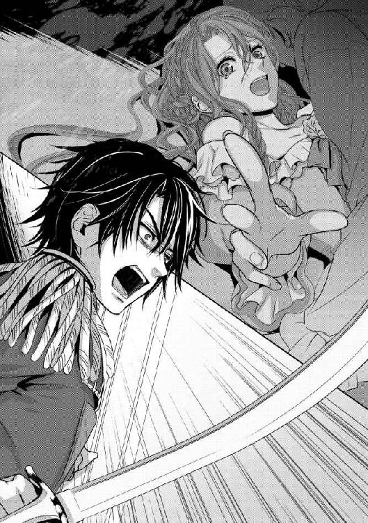
「ティバル......、てめぇ、何やってやがる」
低い、床を這うような声でクルサイドは言った。彼は手に広い刃の船剣を握っていて、一歩、寝台に近づく。
「船に乗せる女に手を出していいという掟が、俺たちの中にあったか？」
「いや、これは......」
ラティアのうえから飛び退き、ティバルは真っ青な顔をして壁に貼りついた。しかしこの狭い部屋、入り口はほかの仲間が固めていて、逃げる場所などあるはずがない。
「おまえ、以前も女に手を出しかけただろうが。漂流していたお嬢さんを紳士的に送ってやろうというのに、おまえが無体をしようとして、脅えさせた」
クルサイドは、握った剣の鋭さを見せつけるように船剣の先端をティバルに突きつける。
「あのとき、さんざん言いつけたよな？ このシルディーン号に乗せた女は、丁重に扱う。俺たちは、海の娘を傷つけるようなことはしない」
船剣の刃をぎらりと光らせて、クルサイドは言った。
「それが、掟だ」
クルサイドの一瞬のまなざしの合図で、後ろに控えていたふたりの海賊たちが狭い部屋に飛び込んできた。ラティアは小さく声をあげて、寝台の隅に丸まる。
海賊たちは武器を突きつけティバルをとらえ、彼を後ろ手に縄で縛った。ティバルはわずかに抵抗したが、なにせ多勢に無勢。彼に逆らう術はなく、縄打たれたティバルは逆恨みの鋭い視線をラティアに向けたまま、船室から引き出された。
「船尾の奥の、最下甲板に閉じこめておけ」
「了解！」
船長の指示に、船員たちが声を揃えた。ティバルは睨みつける目をラティアからクルサイドに向け、しかし彼の黒く鋭い視線に貫かれ、慌てて顔を伏せた。
「悪かったな」
抜き身のままの船剣で、とんとんと肩を叩きながらクルサイドが近づいてきた。
ティバルに襲われかけた恐怖がまだ残っているのか、ラティアは男が近づいてくることに思わずびくりとしてしまった。しかしクルサイドは、狭い部屋の中でもラティアと礼儀ある距離を取ったまま、それ以上は近づいてはこない。
「あいつは、もうあんたに近づけないように見張っておく。心配するな、俺が、守ってやる」
「な、にか......、感じた？」
震える声で、ラティアは尋ねた。
「わたしが、襲われかけて......なにか、感じた？ その、薔薇の守護者として」
クルサイドは少し目をすがめ、また船剣で肩を叩いた。
「そうだな。あんたが海に落ちたときと、同じだった。頭の中で、なにかが弾ける気がする......なにかに背中を押されて、気がついたら、走ってた」
ぐるり、と首をまわしながらクルサイドは言う。
「俺は、ラティアの危機には駆けつける。そうなっちまってるってのが、よくわかったよ」
その言葉に、このうえない安堵を覚えた。薔薇姫は薔薇の守護者と契約する力があるとは聞いていたが、ヴォルグローの侵略まで、クルサカート王国は平和だった。護衛の騎士も警護の兵もたくさんいて、薔薇姫たるラティアは、守護者を任ずる必要がなかった。ただ記録に残っているだけの、薔薇の守護者――しかし騎士も兵もいない今の状況なのに、目の前には、ラティアを守ってくれる存在がある。
それが、これほどに安心できることだとは思わなかった。彼の意志でなくても、渋々なのだとしてもいい。この大海原、海賊船に乗ることになって、端から端まで何ラルドもない甲板しかラティアの自由になる場所はなくて、それでも彼がいれば安心できる。
薔薇の守護者とは、ただ単に薔薇姫を〝守る〟というばかりではない。薔薇姫に心の平穏をもたらす存在でもあるのかもしれない、と思った。
「使わないのか、それ？」
船剣の先で、クルサイドは木桶を差した。先ほどの事件でも揺れる船内、中身はほとんどこぼれていなかった。そうだった、とラティアはがくりと首を垂れた。
「だって、わからないのよ......」
「なにが、だ？」
「こんな小さな桶一杯の水で、髪も体も、ドレスも洗う方法が」
ああ、とクルサイドはうなずいた。彼もようやく、ラティアが今までの生活において自らはなにもする必要のなかった〝お姫さま〟であったことを、思い出したのだろう。
「手伝ってやろうか？」
にやり、とクルサイドは笑った。ラティアは思わず「お願い」と言いかけ、相手がいつも世話をしてくれる侍女ではない、荒くれ者の海賊であることを思い出して後ずさりをした。
「そんな、脅えた顔するな。俺はティバルじゃない」
「そりゃ......わかってる、けど」
いくら彼が守護者でも、ラティアが世間知らずの〝お姫さま〟でも、髪やドレスを洗うのを手伝わせるわけにはいかないし、ましてや体など。
「あんたも、海賊船に乗ってるんだ。ここは王宮じゃない、自分で何でもするか、さもなきゃ手伝うのは男しかいないぞ」
「自分で、できるわ......」
自覚を持たなくてはいけない。ラティアは、自らこの道を選んだのだ。目的を達するためには、不便がなんだというのだろう。ラティアはきゅっと手を握りしめ、うなずいた。
「そうだな、そうしてくれ。俺はあんたの守護者かもしれないが、身のまわりの世話までしてやるわけにはいかないからな」
「あ、あたりまえよ......」
そんなラティアににやりと微笑みかけると、じゃあな、という言葉とともにクルサイドは部屋を出る。
小さな部屋にひとり取り残されたラティアは、微かな寂しさを感じた。しかし一歩踏み出した足に木桶が当たる。ぱしゃん、と貴重な水が少しこぼれて、ラティアは慌てた。
「まず、これをどうするかだわ」
再び腕組みをして木桶を睨み、潮にべたべたする体をいかにきれいにするかと、懸命に頭を巡らせた。
かぁん、かぁん、かぁん、と鳴る大きな鐘の音で、ラティアは目覚めた。
驚きに体が先に反応し、がばっと寝台から身を起こす。しかし昨日まで眠っていたような大きくて柔らかな寝台ではない。勢いあまってラティアは床に転がり落ち、置いてあった木箱と空の木桶に、したたかに体をぶつけてしまった。
「い、ったぁ......」
ここは、どこか。自分はどこにいるのか。ラティアは腰をさすりながらきょろきょろとまわりを見まわし、円窓から射す光に目を細める。
「あ、......そう、だわ......」
ここは、海賊船。シルディーン号。水の姫の名を冠した大胆不敵な悪漢たちの巣窟は、広大な海原を走っている。そして、ラティアがここにいる理由は。
ラティアは、とっさに右手の指輪を見た。中指に嵌っている指輪の石は透明、窓からの光を反射してきらきらときらめいている。
宝石が透明のままであるということは、父のものであった薔薇王の指輪は近くにはない。ラティアはいささか落胆し、しかしそう簡単に見つかるものではない――それよりも、一定の調子で鳴った鐘のような音がなにものかと、慌てて立ちあがった。
昨日、知恵と未熟な腕を懸命に動かして、どうにかドレスから潮を抜くことはできた。もちろん完全にではないから上等な綿はごわごわしているけれど、昨日脱いだときよりはましだ。下着ももちろん潮まみれだから、一緒に壁の釘にかけて干してある。今のラティアは上掛けにくるまっているだけだ。誰か入ってくれば、大変なことになる。
季節は夏、どうにか一晩で乾いてくれたそれらをできるだけ手早くまといながら、やっと下着を着け終わったラティアは、どんどんと扉が叩かれる音に飛びあがった。
「だ、誰!?」
「起きてるんだろう？ 早くきな、飯、食いっぱぐれるぞ！」
クルサイドだ。この恰好で出るわけにはいかないから、ラティアはますます慌てて壁からドレスを取り上げる。
「待って、待って！ すぐに行くから！」
ひとりでドレスなど、着たことはない。昨日、花嫁衣装からこのドレスに着替えたときは勢いでよってたかって脱がされ、着せられた。
羞恥を感じている暇はなかったし、海賊たちも戦利品の箱を開ける感覚だったのだろう。下着姿の少女を前にしても特に反応を示さず、ラティアの結い上げた髪が崩れることなど意にも介さずに、頭から藤色のドレスを袋でもかぶせるように覆いかぶせてきた。
髪から首から腕から、飾っていた装身具もすべて奪い去られたことを思い出し、その中には気に入りのものもあったのに、と今さらながらに残念に思った。そんな中、唯一守り抜いたのが、透明な石の嵌った薔薇の指輪だった。これだけは失うわけにはいかない。
しっかりと中指に嵌った指輪を確認し、急いでドレスを着る。ボタンや留め金のついていないドレスだったから、昨日も今日も無事に着ることができた。そうでなければ誰の手をも借りることのできないこの船のうえ、ラティアは右往左往する羽目になっていただろう。
「ま、待たせたわね......」
まだ潮気の残っている薔薇色の髪はどうしようもないので、なびかせたまま部屋を出る。ドレスを着るのに手間取ったのに、クルサイドはまだそこにいた。部屋の扉には背を向けて、海風を受けた髪と燕尾服の切り裂かれた裾をはためかせながら仁王立ちになっている。
「おう、ちゃんと着られたか」
振り返ったクルサイドは、目をすがめていた。背から朝陽を受け、逆光の中にいる彼は昨日一日で見慣れた彼ではないようで、ラティアは目をぱちくりとさせた。
「肩のところ、ずれてる」
「え？」
クルサイドが歩み寄ってきて、手を伸ばす。ドレスの肩部分をぐいと引っ張られて、ラティアは声をあげた。
「ほら、後ろ向いてみろ。ちゃんと着られてないんじゃないか？」
「そ、そうかしら......」
言われるがままに後ろを向くと、クルサイドは手早くドレスを整えてくれた。するとどうにも違和感のあった着心地が、しっくりとする。ラティアは戸惑いながら、つぶやいた。
「慣れてるのね、こういうこと」
「慣れてるって......、この程度のこと、何でもないだろう」
男なのに、女の衣の扱いかたをよく知っている。なぜか、少しばかりむっとした。皮肉のひとつでも言いたいところだったけれど、何を言っているのか、という顔をされてそんな気持ちは萎えてしまった。
「早く行かないと、飯がなくなるぞ。こればっかりは、早いもんがちだからな」
「え、じゃあ、あなたは......」
ラティアの着替えを待っていてくれたのだ。クルサイドの朝食もないのではないかと心配するものの、クルサイドは振り返ってにやりと笑った。
「俺は、別だ。船長は特別扱いだからな」
早足のクルサイドについていきながら、ラティアは首をかしげた。
「お宝の分け前も、船長は二人前、操舵手は一・五人前。船医、砲術長、水夫長は一・二五人前。あとのやつらは、均等割りだ」
「ずいぶん細かく、決まっているのね......」
海賊たちが単なる凶漢の集まりではない、彼らなりの秩序を持った集団であることはすでに知った。しかしそれほどにきちんとした決まりがあり、厳格に守られているとは。
「ほかにも、いろいろ決まってることがあるぞ。全部、俺が船長になったときに決めたんだ。このシルディーン号の船員はすべて、その掟に従うと血でサインをした。賭博は厳禁。船上での争いは、陸にあがったうえで両者、剣と銃で決着をつける」
「決着......？」
船尾回廊の角を曲がりながら、ラティアは尋ねた。クルサイドは振り返り、ラティアを見るとくちびるの端を持ちあげる。
「殺しあうってことだよ」
ラティアは震えあがった。そんなラティアの反応を、楽しげに笑いながら見やるクルサイドが行きついた先は、船尾甲板。すでにたくさんの海賊たちが集まり、木の器から食事をかき込んでいる。
「よぉ、遅いぞ、船長」
「船長のぶんまで食べちまうとこだった」
口々にかけられる声に軽口で答えながら、クルサイドは奥に置かれた木箱のうえに座る。ラティアも恐る恐るほかの船員と同じようにすると、腕まくりをした丸坊主の男がいきなり木の深皿を差し出してきた。クルサイドは、彼をねぎらう。
「今朝もご苦労だな。このお姫さまにも、ふるまってさしあげてくれ」
「了解」
彼が料理人なのだろう。ラティアに自分の料理をふるまうことに、明らかに不満の表情を見せている。中身がこぼれるほどの勢いで皿を突き出されてラティアはむっとしたけれど、不承不承に受け取った。
木の器に歪んだ錫の匙が突っ込んであるのは、クリーム状のスープだ。甲板を我がもの顔と走り回っている山羊の乳を使ってあるのだろう。中にはじゃが芋、豆、そして白い何かの肉がひと口で頬張るのが難しいほどに大きなぶつ切りとなって浮いている。
「これって、何の肉？」
「亀だ。海亀。俺たちの肉は、まずこれだ。やつら、海の中じゃ素早いけど、陸の上じゃのろのろだからな」
「まぁ、海亀！」
海亀の肉は高級品だ。王宮でさえ、昼餐会や晩餐会でしか出ることのない上品な食べものなのだ。
「ずいぶんと、いいものを食べているのね」
驚いたラティアが言うと、クルサイドはうんざりした顔をした。
「俺たちはもう、飽き飽きだね。牛や豚の肉が食いたいよ。まだ、こいつらを潰しちまうわけにはいかんしな」
器の中のものをかき込むクルサイドがそのような物騒なことを考えていると知れば、甲板を歩いている山羊や豚たちは、どう思うだろう。
「今度陸に上がったら、腹がはち切れるまで食い倒してやる」
白い歯で海亀の肉を食いちぎりながら、クルサイドは言う。その咀嚼の勢いは凄まじくてラティアを驚かせるけれど、クルサイドは親切な人物だと思った。
彼の性分なのだろう。無理やり薔薇の守護者にされた不満も口にせず、ラティアのドレスを直してくれたり、ラティアの驚きに説明をしてくれたり。そういう人物だから、若くして船長をやっているのだろうと思う。
ラティアはスープを掬い、口に入れる。しかし具が大きくていつものように音を立てずに楚々と食べるというわけにはいかない。迷った挙げ句、海賊たちと同じように口を開け、がぶりと噛みつくしかなかった。
口のまわりがクリームだらけになってしまったが、仕方がない。そうでもしないと食べられないのだ。しかしここは、海賊船。家庭教師も女官長もいない。王女らしい行動でないと叱る者は誰もいない。
それどころか、あちこちすでに食事を終えて立ちあがっている海賊たちがいるのだ。ラティアも早く食べないと、海風に吹かれながらひとりで食事をする羽目になってしまう。
「ほら、これも食べな」
ぽん、と膝の上に、放り投げられたものがあった。丸い、堅焼き菓子のようなものだ。手にしてみると本当に堅くて、これは食べものなのかと迷い、クルサイドを見あげる。
「乾パンだ。あんたの歯じゃかなわんかもしれんが、スープに浸して柔らかくしな」
その手があったか、とラティアは乾パンの端をスープに浸してみた。しかし乾パンはすぐには柔らかくなる様子を見せない。
「あんたたちの船には、宝石や金細工ものはあっても、小麦粉や塩はなかったからな。どっかの港で商品を売って食べものを買わなきゃ、そろそろ食料庫も尽きる」
ラティアは、思わず再び顔をあげた。ラティアの装身具も、皆取りあげられたのだ。婚姻パレードの船を飾っていた高価な品々も、侍女たちの装いも何もかも奪われたのだろう。それらは海賊たちの取り引きの品になって、彼らの食料品などに姿を変えるのだ。
「商品、って。奪ったものをそう呼ぶの？」
彼らのしていることは、略奪だ。それを、まるでまっとうな商人が扱う品のように言うなんて。眉をひそめるラティアに、がつがつと白い歯で乾パンを囓りながらクルサイドが言う。
「俺は、確かにあんたの守護者になった。しかし、海賊は海賊だ。あんたも、俺たちが海賊だってのをわかったうえで、俺を守護者にしたんだろうが」
「それは、そうだけれど......」
クルサイドから目を逸らせ、スープを吸った乾パンを囓る。まだ堅かったけれど、どうにか咀嚼できるくらいにはなった。
「あんたに、協力はする。それは兄弟たちも受け入れてくれた。だがな、俺たちの海賊としての生活に口出そうっていうのはお門違いだ。あんたの考えと、俺たちの考えは違う」
「............」
クルサイドの言うことは、正しい。ラティアはうつむき、ぽそぽそと乾パンを噛んだ。
「今、あんたは海賊船にいる。海賊に協力してもらおうってんなら、妙な説教なんてしようと思うな。俺たちのやりかたに、従ってもらう」
「そうね......、そうかもしれないわね」
乾パンを片手に、スープを口に運びながらラティアは小さく言った。ラティアの常識にはないことだけれど、クルサイドの言うことはまったく正しかったので、うつむいて応えるしかできないことが悔しい。それでも精いっぱい、目的のために、自尊心との折りあいをつけようとした。
「海賊船に乗っている以上、わたしも海賊の流儀に従えということね」
「わかったんなら、いい」
クルサイドの厳しい口調は、ふいに柔らかくなった。ラティアが顔をあげると、彼はやはり大胆に食事をしながら微笑んでいる。いつもの彼の、にやりとした笑いかただ。
（わたしに、怒ってたんじゃないの？）
たちまちのクルサイドの機嫌の変化に、戸惑った。叱られていたはずなのに、その相手にすぐに笑みを見せられてはどう反応していいのか戸惑ってしまう。振りまわされているようで、心が落ち着かなくなってしまう。
目をぱちくりとさせるラティアに、クルサイドはなおもくちびるの端を持ちあげた。
「わかったんならいいって、言っただろう？ いつまでもつまらんことにこだわってちゃ、海のうえでは暮らせないぞ！」
大きな声でそう言って、クルサイドは立ちあがる。彼の器は空になっていて、乾パンもいつの間にか姿を消している。
「もう食べ終わったの!?」
「ラティアも早く食わないと、いらないのかって取り上げられちまうぞ」
「え、ええっ？」
見まわすと、人の数が少なくなっている。食事を終えたらしい空手の少年たちが、じっとラティアを見ていた。いくら食べても空腹の時期の彼らは、自分のぶんを食べ終えてラティアの食事を狙っているらしい。
「あの......、食べる？」
半分まで囓った乾パンと、やはり半分まで食べたスープの皿。それらをそっと差し出すと、いきなり飛びかかられた。子犬の群れが襲ってきたのかと思うくらいだ。
少年たちはラティアの食べかけであることなど気にならないらしく、まさに犬のようにスープと乾パンを奪いあい、食べものはあっという間になくなってしまう。ラティアは唖然と、その光景を見ていた。
「食料庫がいっぱいだったら、あいつらにも満足するまで食べさせてやれるんだけどな。早く、どっかの港に着かないと」
ラティアに言うとも、独り言ともつかない言葉を残してクルサイドは去っていた。少年たちも、空になった食器を持ってクルサイドを追う。
船尾甲板には、座り込んで縄を手入れしている者、剣を磨いている者、また樽や箱を運んで走りまわる者たちがいる。なにを目的としているのかはよくわからないけれど、とにかく慌ただしい様子が伝わってくる。海賊の日常は、意外と忙しいらしい。
ラティアは振り返った。先ほどまでクルサイドが座っていた木箱に上ると、舷縁から向こうを見やる。
「わぁ......」
どこまでも広がる、真っ青な海。打ちあがる白い波は、紺碧のドレスに縫いつけられたレースのように海を飾っている。空は雲ひとつなく晴れていて、吹き抜ける海風が心地いい。
ラティアも、移動には馬車よりも船の多い島国の娘だ。海は慣れた場所だけれど、これほど沖に来たことはない。しかも舷縁に乗りあげて外を見るなどということが許されたことはなかったし、王宮は海から遠い高地にある。思い返してみれば、それほど海を見たことはないのだった。
目が痛くなるほどの、青、蒼、碧。吸い込まれてしまいそうな水面は、一瞬たりとも同じ姿を見せない。弾け、波を立て、泳いでいる魚が見えるのではないかと思うほどに静かに透きとおり、また大きく揺らいでは白く泡立つ波を編みあげる。
船は、揺れる。ざぶん、ざぶんと船体を叩く波音が心地いい。従兄のヴィルダーなどは船酔いをするからといってあまり船を好まないけれど、ラティアは船に揺られるのが好きだった。できることなら一度、小さな舟で櫂を漕いで、島々の間を渡ってみたいと思っていたのだ。
潮風は、ラティアの薔薇色の髪をなびかせる。顔に吹きつける痛いほどの風が快くて、髪が頬をくすぐるのがおかしくて、ラティアは笑った。
王宮では、声をあげて笑うなどということは下品だと禁じられているので、このように笑ったのは小さな子供のころ以来かもしれない。
「ご機嫌だな」
声がかかって、振り返った。クルサイドだ。縄の束を抱えている彼は、楽しげにラティアに声をかけてきた。
「そうだ、歌でもうたえよ。みんな、耳は退屈してるからよ」
「手は忙しいのね。なにをするの？」
クルサイドに続いて、何人もの海賊たちがやはり縄を担いでいる。すべてをあわせればいったい何ヤーベルトあるのかと思うほどの量だ。
「手入れするんだよ。ほどいてきつく編み直して、切れたのはつないで。帆の修繕もしなくちゃいかんし、索具も手入れしないと。いつ、仕事が始まるかわからんからな。できるときにやっておく」
そうなの、と返事をして、ラティアは再び海のほうを見やろうとした。しかし視界に入ったものに、ぎょっとする。
そこにいたのは、エイドゥだった。彼が手にしているのは、短い槍のようなものだ。鋭く研がれていて、そのきらめきからラティアは反射的に逃げ、右舷側に背を押しつけた。
「な、なんなの、それ？」
「縄解き金具ですよ。この尖ったところを使って、縄を解くんです」
エイドゥも皆も、ばさばさと縄を甲板に放り出す。見ればほかの船員も同じものを持っていて、甲板に座り込むと器用に縄を解き始める。
「縄を解くばかりじゃないけどな」
クルサイドが顔をあげ、にやりと笑う。そこに彼の海賊としての表情を見て、ラティアはぞっとしてますます船の縁に背を押しつける。彼は、縄解き金具をきらめかせた。
「お客さんの船に乗り込むとき、武器として使うんだよ。そのために、こうやってぴかぴかに研いである」
「クルサイド、薔薇姫を怖がらせてどうするんです」
くすくすと笑うエイドゥの、長い金髪を海風がさらさらとなびかせる。肩ほどまである彼の髪はまっすぐで、女のラティアが羨んでしまうくらいに艶があった。顔も端正で、きちんとした燕尾服でもまとえばクルサカート王国の王宮にいても不思議ではない風貌だ。
（あの傷がなければ、だけれど）
傷の走った右目を見ながら、ラティアはそう考えた。しかしラティアの目がついていかないくらいに手早く縄解き金具を使って縄を解いていくエイドゥは、やはり海賊にほかならない。
「うたえよ、耳が退屈してるって言っただろう？ そのくらいはできるだろう？」
うつむいて、褐色の髪を海風に晒しながら縄を解くクルサイドが言う。そのくらい、と言われてむっとしたものの、その程度もできないのかと思われるのも悔しい。
「できるわよ......。どんな歌がいいの？」
「歌だったら、何でもいい」
エイドゥ以上に速く手を動かすクルサイドが言う。海賊どもに聴かせる歌ではない、とは思いつつも、すぅと息を吸った。
歌と言われて、頭に浮かんだのは薔薇の一族に伝わる歌だった。おずおずと口を開き、旋律を奏で始めたラティアの歌は、甲板中に広がっていく。
「......、あ、ら......？」
皆、歌に聴き入っているようだ。ラティアの歌と、波の音。その中に混ざる、奇妙な音があった。
「なに......」
海賊たちも、その音の聞こえるほうに顔を向ける。それは天空からだった。皆が見あげる真っ青な空で、旋回しているものがある。
「鳥......、鴎、じゃないよな......？」
「鴎は、あんな鳴きかたしない。それに、あんなに高く、早く......」
皆が見あげる中、鳥は大きく空に円を描くと、飛び去ってしまった。その翼が太陽の光を反射して、きらりと銀色に光ったように見える。
「......なんだったんだ？」
皆の疑問の声に引きとめられることなく、鳥の姿は見えなくなった。動いていた手はとまり、甲板の者すべてが、唖然と青い空を見つめている。
「お姫さまの歌に、呼ばれたんじゃないか？」
誰かが、戯けたようにそう言った。それに本気で驚く声があり、まさか、と笑う声がある。ラティアは虚空を見上げたまま、薔薇色の髪をなびかせていた。
「何だ、お姫さま。あんたには何か見えるのか？」
「見えない、わ......、もう」
雲ひとつない空。吸い込まれそうなほどに青く、広い空に見えるものは、もうない。
「......あ、っ？」
きらり、と目の端に光るものが映ったような気がする。はっとして目を自分の手にやった。
（さっき......、薔薇色に、なった......？）
しかし、右手の中指に嵌っているのは透明な石の指輪だ。同じ薔薇の一族の指輪が近づかないと色の変わらないはずの指輪の色が、一瞬だけ薔薇色に見えたのは。
（気のせい......？）
「おおい、もう歌は終わりかぁ？」
再び手を動かし始めた海賊のひとりが、声をあげる。
「ほかにないのか、ほかの歌は知らないのか？」
ラティアは指輪から目を離し、声の聞こえたほうに顔を向ける。
「わたし、歌なんてうたってる場合じゃないわ」
急かす声に、少しばかり苛立ってラティアは言った。
「そんな場合じゃないの、薔薇王の指輪を捜してちょうだい!? わたしは、そのためにここにいるんだから」
自分は海賊のための歌うたいではない。そう主張しようとしたのだけれど、海賊たちはラティアの言葉を笑い飛ばし、いいからうたえ、と囃し立てる。
「......あなたたちの耳で理解できる歌かどうか、わからないわよ」
「歌だったら、何でもいいよ。うたえうたえ！」
「おお、うたえ！」
皆の「うたえ！」と囃し立てる声に、ラティアはごくりと息を呑んですっと背を伸ばした。木箱のうえに立ちあがる。すると歓声はますます大きくなった。ラティアは揺れる箱の上、転がり落ちないように両足を踏ん張る。腹にぎゅっと両手を置き、大きく息を吸うと再びうたいだした。
「いいぞ！」
喝采する声に押されるように、ラティアは知っている歌を次々とうたった。たいていはゆっくりとした調子の、正殿で神に捧げる讃歌だ。もっと明るい、元気の出るような歌はないのかと不平を言う者があると、聞き覚えただけの街で流行っている歌を、知らない部分の歌詞は口から言葉が出るままにつなぎあわせて作った。
「もっと、もっとだ！」
「まだ、まだまだ聴かせろ！」
波の音を音楽隊に、ラティアの歌は続く。心なしか、海賊たちが縄解き金具を扱う手つきは、ますます速くなったような気がする。
紡がれる、ラティアの歌。海賊たちのまわりにどんどんと積みあげられていく縄の山。それらが甲板をいっぱいに満たしたころ。
「見えたぞ！ セラマ島だ！」
檣楼から遠眼鏡でまわりを監視していた見張りが、声をあげた。海賊たちは、おお、と声をあげ、縄解き金具を放り出して皆、舷縁に取りつく。ラティアも身を翻し、木箱の上に乗ったまま皆が指す方向を見た。
「セラマ島か、ありがたい！ あそこなら、いい水が手に入る。野生の牛をつかまえて潰して、今夜は肉が食えるぞ！」
「立派な港で豪遊、とはいかないけどな！」
違いない、と笑う声があがる。ラティアの目にもうっすらと遠くに島の影が見えるようになった。ここからでははっきりとはわからないけれど、きちんとした港や波止場を備えている島ではないらしい。野生の牛、立派な港ではない、という言葉から、住む者はない無人島なのか。
「ラティア、今夜は揺れない陸のうえで寝られるぞ。今朝は寝台から転がり落ちて、大変だったからな」
「な、なんで知ってるの!?」
目覚めの鐘の音に驚き、寝台から転がり落ちたときのラティアは掛布一枚をまとっているだけで、誰も見ている者はなかったはずなのに。ラティアは思わず自分の体を自分で抱きしめ、それを見たクルサイドも、ほかの海賊たちも大笑いをした。
「いくら島国のお姫さまだって、船のうえで、しかもあんな狭い船室で寝たことはないだろう？ よかったな、今夜は柔らかい草が寝台代わりだぞ」
「おいおい、お姫さまにはどっちだっていやだろうが」
寄るべき島を見つけて陽気になった海賊たちは、口々に勝手なことを言っていた。しかし船が島に近づくにつれ、クルサイドが表情を変える。すっと真剣みを帯びた表情になると、海賊たちも同じように緊張した面持ちになった。
（な、なんなの？）
戸惑うラティアに、先ほどまでラティアがあげていた歌声など比べものにならないくらいの大声が響く。
「投錨準備！ 各自、持ち場に着け！」
「了解！」
クルサイドの大声での指示に、海賊たちはいっせいに散った。まるでいきなり弾けた木の実の中身のようにあちこちに飛びつく。主檣の帆桁に取りつく者あり、するすると横静索を伝って前檣、後檣に登っていく者あり。三本の檣に張られた帆には、甲板から見あげると無数の虫が食らいついたように人影がある。
島を見つめ、手を上げるクルサイドの姿は、檣楼にあった。いつの間にそこに登ったのか、彼は大きく手を振って、叫ぶ。
「縮帆！」
クルサイドのよく通る声に、人影はいっせいに動く。島の姿がどんどん近づくにつれ、風をいっぱいに孕んでいた帆がしゅるしゅるとたたまれ、あの立派な大三角帆も降ろされる。
島の姿が見えてきた。真っ白な砂浜が広がり、その先にはこんもりと茂った森がある。建物らしいものはひとつも見あたらず、ここが思ったとおり無人島であろうことは容易に知れた。
ぎぎぎ、ぎぎぎ、と軋む大きな音が響き始める。甲板に目を向けると、ここからは船首に近いところに無数の取っ手がついている大きな輪があった。
ラティアはじっと、目を凝らした。大きな輪――揚錨機にたくさんの男たちが取りつき、ゆっくりとまわしている。ラティアは急いで再び箱に乗り、舷縁から下を見下ろした。
大きな水音がして、そちらを見ると大きな錨がゆっくりと降りていく。錨は浅くなった海の中に消え、シルディーン号がゆっくりと揺れながらその進みをとめる。
「接岸成功！ 短艇を出せ！」
また、了解！ と海賊たちが声を揃える。たちまちあちこちから、人が数人乗れるくらいの小さな船が出てきて、すべてに縄が結びつけられると、船員たちが乗り込む。五人ほどが乗り込むと、縄が降ろされ短艇は海に浮かぶ。そこから櫂で漕いで、砂浜にまで進むのだ。
「きゃあ、素敵！」
まさに、ラティアが一度してみたいと思っていたことではないか。ラティアも乗せてもらえるのだろうか。次々と船員たちは短艇に乗り、島へとあがっていく。自分はどうすればいいのかときょろきょろしていたラティアは、いきなり後ろから腰に手をまわされて悲鳴をあげた。
「な、なに!?」
「あんたも乗るんだよ。さ、一緒にきな！」
腰に手をまわされたまま、引きずられるように甲板を歩いた。縄をかけられた小舟に押し込められて、踏鞴を踏みながら乗り込むと、隣にクルサイドが座る。
「あんたを俺から離して、危険な目にでも遭われちゃ困るからな」
にやりと笑ってそう言うクルサイドのまわりに三人が乗り、その中にはエイドゥもいた。彼はラティアを見てにっこりと笑い、そのままその短艇は、船から降ろされ海面につく。
「あ、わたしにやらせて！」
櫂を動かし始めた男たちに、ラティアは声をあげた。
「わたしも、漕いでみたいの！ 向こうに着けばいいんでしょう？」
すでにたくさんの短艇が着岸している海岸を、ラティアは指を差す。エイドゥは楽しげな顔をしているし、クルサイドは呆れたように肩をすくめた。
「お姫さまの細腕で、短艇が漕げるかよ」
「やってみなくちゃわからないわ！ やらせて！」
男たちは顔を見あわせた。そして互いに、小さく笑う。
「......なに？」
「いや、そうだな。やってみなくちゃ、わからない」
クルサイドは思いのほか温和にそう言って、右側の櫂を持たせてくれた。木を削って作った櫂は、使い込まれていて黒光りしている。
「じゃ、こっちを持ちな。エイドゥ、そっちを漕げ」
「了解」
本来なら、真ん中に座って両手で左右の櫂を漕ぐはずなのに。しかし『お姫さまの細腕』というのは悔しくも確かなので、せめてもう片方を漕ぐエイドゥには負けまいと、両手で櫂を握ると渾身の力で漕ぎ始める。
「きゃあ、ああ、っ！」
「ほら、言ったとおりだろうが」
短艇はぐるぐる海面をまわり始めた。ラティアが漕ぐ右側を中心に、海の上をまわっているのだ。
「あら、あら、あらら？」
「おいおい、俺たちを船酔いさせる気か？」
海賊たちが、げらげらと笑う。ラティアとエイドゥの力が違いすぎて、前に進むどころではない。悔しくて懸命に漕いでも、ますます船はまわるばかりだ。
「仕方ないな、ほら」
櫂を握ったラティアの手の上に、大きな手が重ねられた。どきりとしたラティアは振り返る。
クルサイドの手だ。それはラティアの手ごと櫂を掴み、彼はエイドゥと息をあわせる。すると短艇はぐいぐいと進み始め、あっという間に砂浜に着いた。
「もう、わたしが漕ぎたかったのに！」
クルサイドに掴まれた手をさすりながら、ラティアはくちびるを尖らせる。
「あんたに任してちゃ、俺たちは次の出航までずっとあそこでぐるぐるまわっていなきゃいけないところだったよ」
短艇の乗員は、皆ひらりと飛び降りる。彼らのくるぶしくらいまでの浅い場所だ。クルサイドも身軽に降りると、ラティアに手のひらを向けてきた。
なにも言わずに、ラティアは手を差し出した。自分の手を取るのはいつもなめらかな革手袋をはめた礼儀正しい騎士ばかりだったけれど、今手を取ってくる男は乱暴にラティアを引っ張り、転びかけてそのごつごつした手をラティアは慌てて握りしめた。
「手を、ちゃんと取ってちょうだい。危ないじゃない」
「ここは、王宮じゃない」
ラティアの言葉に、むっとしたようにクルサイドは言った。
「お姫さま扱いされたいんなら、さっさと帰りな。ヴォルグロー王のもとにな」
このたびは、ラティアがむっとした。自分で櫂を操ることができなかったことに悔しさも相まって取った手を乱暴に振りほどき、ひとりで短艇の端に足をかけると、飛び降りた。
「きゃっ！」
白い水飛沫があがる。転びかけて悲鳴をあげたラティアに、みんなが陽気に笑った。その強い手で、舞踏会のダンスの相手のように、というにはやや荒々しくラティアの手を取ったクルサイドも、笑いながらラティアを引っ張る。
「わ、っ......」
ラティアの足の下は、柔らかい砂だ。足を踏み出すたびに、さく、さくと足の裏をくすぐる柔らかい感触がある。
「気持ちいい......」
怒っていたことも忘れて、ラティアは声をあげた。今までに受けとめたことのない感覚。冷たさと足の裏をくすぐる砂に思わず笑いがこぼれてしまう。
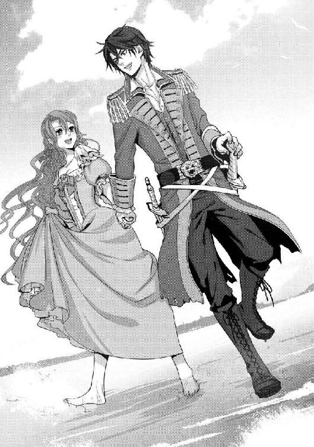
「すごいわ！ こんなの初めて！」
足の裏で水と砂が踊り、ラティアを喜ばせる。自然に声があがり、はしゃぐラティアをクルサイドが見ていた。最初は苦笑、次第に本物の笑いになってあたりに響く。
「お姫さまは、靴なしで歩いたことなんかないだろう。足の裏が痛いんじゃないか？」
「痛くなんかないわ！ すごく、気持ちいい！」
クルサイドの手から逃れ、ラティアはさくさくと砂を踏み、ぱしゃぱしゃと水を跳ねさせながら、ラティアは砂浜に向かって走った。真っ白な砂、真っ青な空、澄みきった海に吹き抜ける潮風に柔らかい地面を全身で感じて、喜びに笑わずにいられるだろうか。
「きゃ......！」
「おおっと！」
しかし踏み慣れない砂のうえで足を取られ、ラティアは転びそうになってしまう。その腕を、クルサイドが掴んだ。
おかげで、せっかく潮を抜いたドレスを再び潮に濡らすことを避けられた。クルサイドの強い腕に抱きとめられ、再び手を取られながら砂浜を進む。
波の打ちつけるその向こう、海賊たちは忙しく走りまわっている。大きな樽を抱えている者、木に登って果物をもいでいる者。あちこちから、ぱぁん、ぱぁん、と聞こえるのは銃だろう。野生の牛とやらを撃っているのだろうか。
「お姫さまは、おとなしくしてな。陽に灼けるのはいやだろう、木陰にでも隠れてろよ」
「ええ......」
船のうえでも、陸にあがっても、誰ひとり怠けることなく忙しく働く海賊たちに、ラティアは呑まれるばかりだ。通りがかった商船などを襲い、その積み荷を奪って暮らしているものとばかり思っていた海賊たちが、これほどにまめまめしく働くとは考えたこともなかった。
クルサイドも、船長として彼らの指示に忙しいらしい。ラティアに木陰にいるようにと言い残すと、どこかに走っていってしまう。エイドゥも、一緒の短艇でやってきた男たちももう姿がない。
ラティアは、手近にある大きな枝振りの木の下に向かった。最初船から降りたときは、初めての足の裏に受ける感覚や短艇を漕ぐことに夢中になっていたけれど、ひとりぼっちになってみれば陽射しがずいぶん強いことがわかった。ラティアは、おとなしくそこに座る。
目の前に広がる白い砂は眩しくて、打ち寄せる波は規則正しく、あちこちから聞こえる海賊たちの声が音楽のように響いていて。昨日、慣れない場所で充分な眠りを取れなかったせいか、ラティアには眠気が襲ってきた。
（そういえば、水があるって言ってたわね......）
砂のうえに座り込み立てた膝のうえに頬を乗せ、目を閉じるとふうっと眠りに吸い込まれていく。
（池か湖でもあるのかしら。そこで、もう一度ドレスと、髪......洗えないかしら......？）
そのようなことを考えながら、ラティアの意識は遠のいていく。陽射しを遮る木陰を、涼やかな海風が吹き抜けていった。
ラティアは、熱い顔を冷やしながら懸命に髪を洗っていた。
（本当に、寝ちゃうなんて！）
いつの間にかラティアは、砂浜を寝床に横になって眠っていた。声をかけられてはっと目を開けると、まわりには海賊たちが集まっていた。
「あんた......、こんなところで寝るなんて、肝据わってんなぁ」
その先頭にいたのは、呆れた顔をしたクルサイドだった。ラティアは急いで起きあがり、すると下にしていたほうの頬には砂がついていて、慌てて払うとげらげらと笑いが起こった。
どうやら砂に頬を押しつけていて、そこは真っ赤になっていたらしい。海賊たちは笑いながら「こんなところで平気で寝てるやつをお姫さまなんて呼べない」と、今までの冷やかすような呼びかたから皆「ラティア」と呼ぶようになった。
海賊に愛称を呼び捨てにされるなんて許してはならないことであるはずなのに、クルサイドをはじめとした皆が冷やかしではなく本当に楽しげであったことに、つい了承してしまった。
（ああ、もう、恥ずかしい恥ずかしい！）
ラティアの思ったとおり、島の中にはいくつもの池があった。陽が落ち、上陸の間は掟がゆるくなるらしく彼らの念願の牛の肉を囲んでの宴を抜け出し、ラティアはひとり、潮気の抜けない髪や体を洗っているのだ。
（いくらきれいにしても、すぐに潮っぽくなっちゃうんだけどね......）
どうせまた船に乗れば舷縁を越えて甲板を濡らす波に濡れるし、船のうえでは王宮のように毎日湯浴みをするわけにもいかない。神経質に洗わなくても同じなのかもしれないけれど、気になるとどうしても我慢できなくて、ひとり水音を立てているのだった。
（それに、あの宴には......どうしても入りにくいし）
男たちが賑やかに羽目を外す場には、何とはなしに居場所がない。海の娘であり、彼らの船長・クルサイドの運命を握る者としてとりあえずは尊重されてはいても、ラティアは酒も飲めないし肉の塊にがっつく大胆さもない。勧められるまま飲み、食べるあの場に居場所がなくて、こうやって懸命に真水で髪を洗っているのだ。
（女は海の娘だとか、吉兆だとか言っておきながら、こんなところに放っておいても気にしないなんて。やっぱり、海賊は海賊なんだわ）
憤慨しながらも、それはあの場にいられない言い訳かもしれない。誰かが呼びに来るようなら、仕方がないとあの中に入っても構わないのに。しかしそのような空気はどうにも見あたらないし、だからラティアはひとりで髪を洗う羽目になっているのだ。
（どうせなら、裸になって入っちゃおうかな......）
水は冷たいけれど、今は夏だ。風邪を引くほど冷えてしまうことはないだろうし、そのほうがドレスを洗うにも好都合だ。ラティアは、きょろきょろとあたりを見まわした。
（よし！）
ラティアが、ドレスを脱ごうとしたときだ。がさっ、と音がして、ラティアは振り返る。
「誰？」
脱いでしまったあとでなくてよかった。ラティアは慌てて衿もとを直しながら、声をあげた。
「誰？ クルサイド？」
姿を現わしたのは、大きな男――黒い髪に、鋭い茶色の目。体のあちこちに傷のある、あのティバルだった。
「な......、なん、なの......？」
彼に組み敷かれた記憶は新しい。ラティアの全身に恐怖が走る。ぎゅっと胸もとを掴み、一歩後ろに後ずさりをした。
彼は、船倉に閉じこめられていたはずだ。しかし上陸の忙しさに人手として出されたのかもしれないし、騒ぎの隙を見て逃げ出したのかもしれない。彼の両手首には縄の痕が残っている。
「どうせ、置き去りにされる身だ。この先どうなったって、構うもんか......」
ラティアに言うとも、独り言ともつかない呻きを洩らしながら、ティバルは近づいてくる。足もとはよろよろとしていて、まるで酔っているかのようだ。
以前よりも低い声はラティアにさらなる恐怖を呼び、ラティアはさらに後ろに下がった。すると池の縁の濡れた草に足を取られ、池の中に落ちかける。
「おおっと！」
悲鳴をあげる前に、ティバルの腕が伸びてきた。それは転びかけたラティアを支えたのだけれど、そのまま伸びてラティアをとらえ、ねとねとと巻きついて拘束してしまい離さないとでもいうようだ。ラティアはぞっとして、ティバルの腕から逃げようとした。
「や、め......」
「どうせ、俺にはもう自由はないんだから。最後の、この好機に......」
抱き寄せられてしまい、やはりねとりとした腕に抱きしめられる。まるで太くしつこい蛇に絡まれたようで、ラティアは何度も身を震わせる。しかしそんな反応がティバルを煽るとでもいうように彼はラティアを抱きしめ、首筋にくちびるを近づけてきた。
「きゃぁ、あ、ああっ！」
全身に、怖気が走った。振りほどこうともがき、しかしティバルはますます抱きついてくる腕を強くして、ふたりとも地面に転がってしまう。
「やぁぁ、離して、離してっ！」
しかしティバルは、荒い呼気をラティアに吹きかける。噛み煙草くさい息はラティアを襲い、手はラティアのドレスの胸もとにかかる。
（助けて......、――クルサイド！）
「何してやがる」
迫力のある声が、響いた。はっとラティアは顔をあげ、同時にのしかかってくるティバルの体重と手から解放される。ラティアは勢いよく起きあがり、声のほうに向かって走った。
「クルサイド......！」
「悪かったな、遅くなった」
立っているのは、船剣を手にしたクルサイドだ。あの騒ぎの中にあって酒も呑んでいるだろうに、足もとはしっかりとしていてふらついたところもない。
彼の腕が、伸びる。ラティアを引き寄せ、その腰に腕をまわす。ティバルに触れられたときはぞっとして逃げることしか考えられなかったのに、クルサイドの腕の力を感じると安心できる。ラティアは大きく安堵の息をつき、そしてそんな自分にはっとした。
（......薔薇の守護者は、薔薇姫の危機に駆けつける。薔薇姫を守る。それは、契約によってなされた当然の行為）
クルサイドは、ラティアを心配して来たわけではない。薔薇の守護者の本能としてここに引きずられてきただけだ。
それでもそれは、これほどの安堵を生むのだ。クルサイドの腕の中で改めての安らぎを感じながら、ラティアはぎゅっと彼に抱きついた。
「ティバル。縛っておいたはずなのに、よく抜け出せたな。そうやってこっそり抜け出して、やることは女を襲うことか」
「うるせぇ！ どうせ俺は、刑に処されるんだ。どうせ死ぬんなら、好き放題やってから死んでやる！」
ティバルの怒声に、ラティアはびくりとした。そんなラティアをなおもぎゅっと抱きしめながら、クルサイドは目をすがめる。
「おまえには、改心は無理か？ 同意なく婦女子を無理やり襲おうとした者は、未遂に終わったときのみ一度、猶予を与える」
以前、漂流していたという少女を襲おうとしたというティバル。さらにはシルディーン号の中で、そしてまさに今。しかもつながれていたのに抜け出した彼には、もう猶予はないということか。クルサイドの船剣がきらりと光る。
「しかし、おまえは掟を破った。一度猶予を与える、というのがみんなの慈悲で、それがおまえを今まで生かしておいたんだがな。この掟は、おまえには甘かったか？」
ラティアを抱いたまま、クルサイドはティバルに歩み寄る。ティバルはなおも何か言おうとしたのだろうけれど、きらめく船剣に後ずさりをする。クルサイドは彼を追いつめるように歩き、ティバルは先ほどラティアとともにすべった、濡れた池の縁の草に足を取られた。
「う、わぁっ！」
そのまま、ティバルは池に落ちる。どぼん、という音とともに悲鳴があがり、池は思いのほか深かったらしい。ぶくぶくと溺れ、助けてくれ、と叫ぶティバルのもとに、ラティアは思わず駆け寄りかけた。
「おっと、なにするつもりだ？」
ラティアの腰を抱いた腕に力がこもる。ラティアは、はっとクルサイドを見あげた。
「助けにいくつもりか？ あんたを襲おうとしていたやつを？」
「でも......、あのまま、じゃ......」
水面には、ティバルの頭が浮いたり沈んだりしている。なおも助けてくれ、と水を飲みながらの声があがり、両手がこちらに差し伸べられる。そんなさまを見ていながら、見捨ててしまうなんて。
「世間知らずもいい加減にしな。もっともあんたが、あいつに貞操を捧げてもいいってんなら別だけどな」
「それはいや、だけど......」
クルサイドは、乱暴にラティアを抱き寄せる。そして派手な水音を立てながら池で溺れているティバルに視線をやると、そのまま踵を返した。
「あいつは、このままこの島に置き去りだ」
「え......」
いくら水があり果物の生る木があるとしても、大海原の孤島だ。そこに置き去り――しかも、あのまま溺れてしまうかもしれないのに。
「掟を破ったからだ。猶予があることも甘いくらいなんだぞ。商売女以外に手を出したら即死刑って海賊も、珍しくないんだからな」
面倒そうにそう言うクルサイドは、ラティアをぐいぐいと引っ張って歩く。彼の幅広い足取りについていけず転びそうになるラティアを抱きかかえ直し、じっと視線を送ってきた。
「わたしがいる、から......いけないのかしら......？」
ラティアがいなければ、ティバルも妙な気を起こすことなくあのような目に遭うことはなかったのではないか。そう思うと、自分を襲った者とはいえティバルに申し訳ない思いになる。
そんなラティアを、クルサイドが眉をひそめて見た。
「あんた、偉そうかと思ったら素直だったり。ただの世間知らずなのか？ よくわからねぇな」
「偉そう......、わたしが？」
思わず、目を見開く。自分のどこが偉そうだというのか。思いもしなかった言葉にクルサイドを見やるが、彼は目をすがめて視線を彼が来た方向に向けてしまった。
賑やかな声が近寄ってくる。ラティアが近づきがたかった、海賊たちの宴の場だ。歌をうたい楽器を奏で、騒ぐ者たちのうち、ひとりが振り向いた。
「ラティア。クルサイドも、どうしたんだ。またなんかあったのか？」
「ティバルが、自分で池に落ちた」
抜き身の船剣を、腰の剣帯に吊ってある鞘に収める。それが月明かりを受けて光るのが恐ろしくて、ラティアは思わずクルサイドから遠のく。そんなラティアをクルサイドは見やったが、もう「薔薇の守護者としての責務は果たした」とでも言わんばかりに視線を仲間たちのほうに向ける。
「もう猶予がないのがわかってて、つないであったところから逃げてまたラティアを襲おうとしていたからな。俺の船剣を汚すまでもない、池に落ちたのを放ってきた」
「薔薇姫、大丈夫ですか？」
声をかけてきたのはエイドゥだ。ラティアがこくりとうなずくと、杯を渡してくれる。銀のそれには、紫の飲みものが入っていた。酒の香りがする。
「わたし、呑めないわ」
「水で割ってあるから大丈夫ですよ」
にっこりと微笑むエイドゥは、やはりさらりとした金髪とその穏やかな口調から、どうしても海賊には見えないのに。しかし髪の隙間から見える右目の傷は、やはり彼が無法者の仲間であるということを示している。
誘われるがままに座り、薄められたワインを飲む。それは酒の飲めないラティアにも飲みやすいちょうどいい濃さになっていた。驚いて顔をあげると、エイドゥはそんなラティアの反応を予想していたように薄く微笑む。
クルサイドは、仲間に取り囲まれてどこにいるのかわからない。エイドゥもラティアに杯を渡したきり、どこへやらいなくなってしまった。
ラティアは、ぽつんと取り残されたままワインを飲む。ティバルの魔手から逃れられたのはいいけれど、この場に居づらかったから、ひとりで池のほとりにいたのに。おまけに頭に焼きついているのは、クルサイドの言葉――。
（わたしって、偉そうなの？）
自分では心当たりがないだけに、彼の言葉が気になって仕方がない。楽しげに騒ぐ海賊たちを前に、落ち着かない思いでラティアはただワインをちびちびと飲んだ。
＊
シルディーン号が錨をあげ、再び出航したのは次の朝早くのことだった。
水をたっぷりと積み、新鮮な果物も積んだ。つかまえた野生の牛の肉も塩漬けにし、樽に詰めた。しかしリウ・ミリアニス号から奪った商品を換金するための場所もない無人島には、それ以上の用はないらしい。
揚錨機にたくさんの男たちが群がり、力いっぱいまわす。すると停泊したときとは逆に、錨がゆっくりと水を垂らしながらあがってくる。錨があがってしまうと、シルディーン号はゆっくりと動き出した。
いっぱいに張られた帆が風を孕み、徐々に沖へと進んでいく感覚を甲板に立って感じ取りながら、ラティアは船尾の舷縁に取りついて、遠のいていく島を見つめていた。
海賊たちは、相変わらず忙しく働いている。揚錨機をまわすだの帆を張るだの舵を取るだの、船に慣れているとはいえただ乗っていただけのラティアには手伝いようのない仕事を前に、することといえば遠のく島を見ることくらいだ。
ラティアは、自分の左手を見た。中指に嵌っている指輪の石は、太陽の光を受けて透明に輝いている。今まで見慣れていた、あの薔薇色になる様子は微塵もない。
クルサイドを薔薇の守護者にし、父王のものだった薔薇王の指輪を捜す。その目的に変わりはないけれど、海は広い。いったいどこに行けばいいのか。羅針盤や天測機は方位に緯度、経度を教えてはくれても、捜しているものがどこにあるのかを教えてはくれない。
「......麗しき吐息の大輪を求め、こぼれ落ちた夜のかけらを」
ラティアは、小さな声でうたった。歌は海風に広がって、散らばって消える。
「荒々しき海神の咆哮から生まれし、聖なる鷹の導くままに」
鷹、とつぶやき、天空を見上げる。航海中、請われるままにうたったときに旋回していた鳥の姿を思い出す。声を張りあげてうたえば、あれは再び現われるのか。現われれば、何かをラティアに告げてくれるのか。
潮風に踊る薔薇色の髪を押さえながら、ラティアは広がる海原に目を向け、なおもつぶやく。
「海路は終わりなきうたかたのごとく 綾なる国を綴りし地図なり」
海路は終わりなき、うたかたのごとく。その部分を繰り返す。まさに海に果てはなく、どこまでも広がる綾なる国を形作っている。しかしその海図にはラティアの目的のものは描かれておらず、どこにあるかもわからないもののことを思って、ラティアはふっと息をついた。
海賊たちが忙しく働く中、シルディーン号は帆に風を孕んで沖に進んでいく。響く波音、こだまする男たちの声の中、ラティアは顔をあげる。
檣楼の見張り台に立っている男の褐色の髪がなびいていた。彼は遠眼鏡で沖を見ていて、その黒い目に映るものはなんだろうかと、ラティアは考える。
「兄弟！」
彼が、大きな声で叫んだので、ラティアは驚いた。その声は、拡声器も使わないのに船中に響き、皆が檣楼を見あげた。
「獲物だ！」
獲物――略奪対象の商船かなにかに違いない。てっきり歓声があがるのだと思ったのに、海賊船は静まり返った。檣頭にあげられていた海賊旗がするすると下ろされる。代わりにあげられたのは、赤一色の旗だ。
「なに、あれ......？」
気づけば、樽や箱を運んでいた男たちの姿が消えている。皆は急いで荷物を船倉に運んだらしく、再び現われた彼らは、いつもの木炭油を塗った革の胴衣に帆布の上衣という身なりではない。揃いの黒い上着をまとっていて、一見するとまっとうな商人か何かのようだ。
見ればクルサイドも素早く横静索を降りている。彼はひらりと船倉に消え、すぐにいつもの赤い裾の切り裂かれた燕尾服ではない、皆と同じような黒の上着をまとって再び姿を現わした。
遠目に見ればきちんとした上着に見えるであろう紳士的な身なりで、ラティアは思わず、その姿に見とれた。
「おとなしくしてな」
目の前を歩いていくクルサイドが、ラティアにいたずらめいた目配せとともに言った。
「お姫さまには、少しばかり目の毒かもしれないからな。怖かったら、どっかに隠れてるといい。危ないから、出てこようとするなよ？」
「わ、かったわ......」
ごくり、と息を呑みながらラティアはうなずく。クルサイドはにやりと笑い「素直でいいことだ」と言った。そのまま黒の上着の裾を翻して、仲間たちのほうへと向かっていく。
シルディーン号は、ゆっくりと進んだ。意匠はばらばらだけれど、一見するぶんにはまともな者たちに見える黒い上着の集団は、甲板を歩き船尾回廊で話しあい、いつものように帆桁に取りついたり横静索を登り降りすることはない。通常の商船かと錯覚する光景だ。
ここにいるラティアがそう感じるのだから、遠く見えてきた、一艘の三本檣の横帆船の見張りもそう思っただろう。しかしこちらは海賊船――ラティアは恐ろしさに、またこれから何が始まるのかという好奇心にも圧されて、船尾に置かれた木箱の後ろに隠れてなりゆきを見守っていた。
シルディーン号は帆に風をいっぱいに受け、ゆっくりと横帆船に近づいていく。遠眼鏡を持たないラティアの目にも、乗っているのがたくさんの男たち――今のシルディーン号の船員たちのように黒い上着を着た者であることから、彼らがいろいろな国を行き来する商船であること。またシルディーン号の接近に警戒をしていないようであることから、こちらが本当は海賊船であることなど疑いもしていないのであろうことが見て取れた。
今から、いったいなにが始まるのか。木箱の隅に指をかけ、目だけを箱の上に出してラティアはあたりを凝視する。ぽん、と音がして、高い空で何かが弾けた。
白い火花を散らすそれは、合図砲だ。相手に仲間だと知らしめるための――横帆船は、こちらに近づいてくる。
横帆船とシルディーン号の間には、もう何十ヤーベルトもない。ぶつかりそうなぎりぎりの距離を保ちながらも実際にはぶつからないのは、双方の操舵手の腕がいいからだろう。
向こうの船の、帽子をかぶった男が船首の舷縁際、こちらに近づき笑顔を見せているのさえ見える距離に近づいている。年配の海賊が、シルディーン号の船長を装っているのか笑顔で彼に近づいていく。いったいクルサイドたちの計画は何なのか――胸をどきどきさせるラティアの目の前、それは起こった。
「きゃ......っ！」
ラティアは跳ねるように飛びあがり、床に尻を打ちつけてしまって悲鳴をあげる。同時に鋭く耳を貫く音、たちまち目の前に広がった白煙に目を丸くした。
向こうの船からは男たちの驚く声に怒声があがっていて、一気に混乱の様相だ。一方のシルディーン号は、見れば主檣の近く、船壁の窓から顔を出している大砲がある。それが火を吹き弾丸を放ったのだ。
シルディーン号を同じ商船だと思っていた横帆船は、突然の攻撃に阿鼻叫喚の騒ぎだろう。続けざまにラティアの落ちた床の下からも同じ衝撃があり、どぉん、どぉんという音があがる。
「な、なんて乱暴な......！」
揚げた赤の旗も、黒の上着も、商船と見せかけ相手の船を誘う罠。近づいたところを一気に撃ち、拿捕しようという計画なのだろう。
（騙し討ちなんて......！）
しかしこのシルディーン号は、水の姫の名を冠するとはいえ、海賊船。海賊に卑怯も姑息もないのであり、これが彼らの常套手段なのだろう。
「いいぞ、投げろ！」
煙と水飛沫、怒声と破壊音の中、クルサイドの声がはっきりと響く。煙の中、凝らしたラティアの視界には縄が幾本も飛ぶのが映り、がつっ、がつっ、と引っかかるような音が響く。
投げられた縄がぴんと張り、そこに黒い上着の海賊たちが取りつく。先端に銀色の鉤のついた縄を投げ、それを伝って向こうの船に乗り込む――リウ・ミリアニス号相手にも取った手だ。これは海賊に一般的な手法なのか、シルディーン号の者たち特有の手法なのか。
彼らは猿のように身軽に縄を伝って相手の船に乗り込む。その腰にはいつの間にかさまざまな武器が備えられていて、舷縁を乗り越え甲板に飛び降りた者から剣を抜き、黒の上着には似合わない剣呑な雰囲気を醸し出す。
続けて撃ち込まれる大砲に、船は揺れる。弾丸を受けている相手の船もそうだろう。しかし海賊たちは大きな揺れなどものともせずに次々に乗り込み、商船の船員を斬り伏せているようだ。ぱん、ぱんと、鋭い音が鳴るのは喇叭銃か短銃か。
ラティアは木箱の後ろで小さくなり、しかし目の前に広がる光景から目が離せない。箱の隅に指を引っかけたまま、まばたきも忘れて戦いを見つめる。
相手の船の甲板で、黒の上着の裾を翻し船剣を振るっているのはクルサイドだ。まるで熟練した舞い手のような鮮やかな身のこなし、予想のできない動きに目を奪われてしまう。彼の手にした刃は襲いかかってくる剣を振り払い、相手を斬っては隙を狙ってくる別の剣を払い、斬る。
あがる血飛沫は恐ろしいと思うのに、それでも目が離せないのは戦闘の場がまるで一枚の絵、舞台のうえの一場面のように鮮やかだからだ。そこにクルサイドの舞いのような動きが加わって、今まで見たどの舞台、どの活劇よりもラティアの目を惹く。
いきなり、ラティアは後ろに勢いよく引き寄せられた。
「......きゃ、ぁ、あ！」
クルサイドの動きに見とれていて、気がつかなかった。ラティアは突然後ろから髪を引っ張られ、引き倒される。振り向く間もなく口に手を押しつけられ、体に強く腕をまわされた。
「海賊の、女か！」
「違、っ......！」
懸命に振り向いてみると、ラティアをつかまえたのはクルサイドたちが襲った船の船員らしい。あの混戦、いったいどうやってこちらに乗り込んできたのか。
「あ......！」
はっと顔をあげると、二艘の船の間に渡らせた板が目に入った。シルディーン号の船員が、あちらに乗り込むために渡したのか。ラティアの体の幅ほどもない板だけれど、ロープよりはよほど安定感がありそうだ。
男は、顔を真っ赤にしている。突然の海賊の襲撃に頭に血がのぼり、板を渡ってきたに違いない。そして甲板で小さくなっているラティアを見つけて、とらえたのだろう。
「海の娘の加護があるから、こんなにも神出鬼没なのか？ 海神を味方につけた女か!?」
「そ、んなの、じゃ......」
ラティアは暴れたけれど、男の腕は強い。男はラティアを抱えあげ、揺れる床を蹴る。ラティアの薔薇色の髪が、流れてくる弾薬の煙とともに潮風に流れた。
「やぁ、あ......、っ、っ......！」
叫ぼうとしても口を押さえられていて声は出せず、この混乱の中でラティアがいくら叫んだところで誰の耳にも届かないだろう。ラティアは抱えあげられ、どこに連れていかれるのか。
（助けて......、クルサイド！）
「きゃ、っ......！」
抱えあげられた体勢から、いきなり高さが変わってラティアの髪が宙を舞った。そのまま甲板に落ちる――と思ったラティアの体が、伸びてきた腕につかまえられた。ふわり、と鉄くさいにおいが潮の香りに混ざる。
「どうやって入り込んだ」
ラティアを受けとめたのは、大きな声でそう言ったクルサイドだ。ラティアは素早くクルサイドの左腕に抱きとめられ、ラティアを攫おうとした男は短剣を振りまわす。むやみやたらに突きつけられたそれが、クルサイドの腿を傷つけた。
「生意気な......」
「この、海賊が、ぁっ！」
ふたりは船剣と短剣で戦い、しかしラティアの目から見ても完全にクルサイドが優位だった。胴を斬られた男は、がくりと甲板のうえにくずおれる。飛び散る血に、ラティアは瞠目した。
「まったく、油断も隙もない」
薔薇姫の身の危機に現われる、薔薇の守護者。契約を交わしたからには、これは当然のことだ。そのことはよくわかっているはずなのに、それでもラティアはとっさにクルサイドに助けを求めた。そしてこうやってクルサイドに救われることに、心の底からの安堵を覚えている。
「板を伝ってまわりこんだのか？ ずいぶんすばしっこいやつがいるんだな」
クルサイドは、甲板のうえで呻く男にもう一閃船剣をひらめかせる。ラティアは彼の腕の中で、目をつぶった。男の呻き声、ややあって聞こえた海への落下音に、自分を襲った男の運命を知る。
「クル、サイド......」
抱えあげられたまま、ラティアは恐る恐る彼を見やる。握る船剣は血にまみれ、宙で振ると血飛沫が散った。それが血を滴らせる彼の顔に飛ぶ。抱きあげられたときの鉄くさいにおいは血だったのだと、ラティアはぎょっとした。
「まったく、危ないって言ったのにな」
眉をしかめて、クルサイドはラティアを睨む。血だらけの顔、振り乱された髪、襲撃の興奮にぎらついた目で睨まれると恐ろしかったけれど、それでもラティアは懸命に言い返す。
「わ、たし......、おとなしく、してたわ。出ていかないで」
出てくるな、と言われたことを思い出してそう言う。するとクルサイドはラティアを見やり、にやりと笑って微かに髪を揺らしてうなずいた。
「そうだな。ラティアはおとなしくしてた。あっちの侵入を許した俺が、迂闊だった」
「そ、っそ、う！ わたし、は、じっとしてたもの......！」
彼の腕の中で凍りついていたラティアは、いきなり甲板に下ろされた。きょとんと目を見開くラティアの脇、クルサイドは腿の傷をぐいと拭う。血が滴っている傷はラティアを守らざるを得なかったから――船剣の腕前を見るまでもなく、本来なら負うことのない傷だったはずなのに。
「まぁ、その調子でおとなしくしておいてくれ。俺たちの、邪魔はするなよ！」
そう叫んで、彼は風のように駆けていく。なにを、とは思ったものの、言う相手は去ってしまっていた。ラティアはクルサイドを追い、シルディーン号の船尾楼甲板に積まれた、たくさんの木箱につまずきかけて足をとめる。
海賊たちはすでに黒い上着を脱ぎ、いつもの胴衣に上衣という恰好になっていた。はっと顔をあげると、横帆船に渡した一本の縄を伝って戻ってくる男たちは器用に箱を抱えあげていて、そのまま海に落ちてしまわないのかと心配になる。しかし彼らの慣れた様子から、揺れる船のうえでもその心配はないらしい。
見れば、横帆船の甲板には無数の倒れ伏す者たちがあって、皆海賊に倒されたのだろう。ラティアの胸は痛み、とっさに海賊の餌食になった者たちへの哀悼を捧げる。
「邪魔邪魔、どきな！」
「きゃ......！」
しかし、ラティアの祈りの時間は長くなかった。大きな箱を抱えた海賊に、突き飛ばされてしまったからだ。
次から次へと、箱を運び込む者が乗り込んでくる。ラティアは隅に追いやられ、小さくなって嵐のような彼らの動きを見つめる。
忙しく走りまわる者たちの中、クルサイドの姿があった。こうやって離れてみると、彼の胴衣も上衣も血まみれで、見ればラティアのドレスにも血がついている。そのことにぎょっとした。
「見ろ、砂糖だ！」
「こっちは、胡椒だ」
「丁字もあるぞ、土茯苓と、これは......」
「明礬だな。高く売れるぞ！」
海賊たちは大はしゃぎだ。皆、衣を血に染めて、しかしそのようなことなど誰も気にしていないというようで、ラティアは目を白黒させる。
左舷側がわぁっと沸いたのでそちらを見ると、立っている者のいなくなった横帆船にかかっていた鉤つき縄がはずされていた。横帆船は少しずつ離れていくが、その船体にはいくつもの穴が開いている。不安定に揺れているのは、穴から浸水しているのだろう。
あの横帆船の船員たちは、どうなったのだろう。ラティアを襲った者も含めて、皆命を絶たれてしまったのか――ラティアは胸に騒ぐものを抑え、再びの祈りを捧げる。
こちらを見やる、クルサイドと目が合った。ラティアの考えていることなどお見通しであるかのような彼は、目をすがめて責めるようにラティアを見ている。
（......わかってるわ）
ここは、海賊船。略奪殺戮に罪悪感など持たない、無法者たち。そして彼らの力を欲しているのは、ラティア自身なのだ。
それでも、運悪く敏腕な海賊たちに出くわした者たちの鎮魂を願うことくらいは許されるだろう。戦利品を前に騒ぐ海賊たちの前、ラティアは懸命に祈り続けた。
香辛料などの商船だったらしい横帆船から、海賊たちは食料なども奪ったようだ。その日は八時消灯の掟の例外が許されたようで、甲板には皆が集まり、たくさんの角灯が灯されて賑やかな笑い声が響いている。
月の輝く、美しい夜だ。船は静かな海に囲まれ、このような夜の海に浮かんでいるのは気持ちがいい。ゆっくりと揺れる船の上、ラティアは杯をかわし騒ぐ者たちを見つめていた。
輪の中心にいるのは、クルサイドだ。誰もが彼を殊勲者と讃えている。ラティアにとっては嵐のようだったあの襲撃で、クルサイドはもっとも素晴らしい働きをしたらしい。そのような働きができるからこそ、彼は若くして船長であるのだろうけれど。
「どうぞ」
海賊たちを見やっていたラティアは、差し出された杯に驚いて顔をあげた。やはりエイドゥで、前と同じように杯の中には薄めたワインが入っているようだ。
「こちらに来ませんか。あの船には、いろいろ食料が積んでありましたから。料理人が張りきって、いろいろと作ってくれていますよ」
「あなたは、気が利くわね......」
片目の傷さえなければまったくの紳士と言っていいエイドゥは、微笑みとともにラティアの横に腰を下ろした。杯の中には、前よりも美味なワインが満たされている。
「せっかくの宴だというのに、海の娘たる女のかたを放っておくなんて、皆薄情ですね」
ラティアは思わず背を伸ばした。エイドゥを見やって、くちびるを尖らせる。
「そ、そうよ......。わたしをひとりにして......何かあれば、怪我を負うのはクルサイドのほうなのに」
エイドゥにはそう虚勢を張ってみせるものの、ラティアの心は揺れていた。短剣で斬られた腿の怪我は大丈夫なのかと心配だった。しかしここから見るぶんにはクルサイドにはあの程度の怪我などどうということはないようだし、実際そうなのだと思う。もっと大きな怪我を負う死とすれすれの戦いなど、幾度もくぐり抜けてきたのだろう。それが、あの体中の傷なのだろうから。
「そうですね、彼は薔薇の守護者だから」
ラティアの隣に座ったエイドゥは、自分も酒の杯を持っている。ひと口飲んで、エイドゥはじっとラティアを見つめてきた。
「薔薇の守護者というのは、代えることはできないのですか？」
ラティアは、きょとんとしてエイドゥを見る。促されるままに、首を横に振った。
「そうでしょうね。守護する者は、より誠実に薔薇姫を守る者のほうがいいはず......ならば、私を守護者にしていただけませんか？」
「......え？」
思わず大きく目を見開いてエイドゥを見てしまう。彼は、楽しげに微笑んだ。
「そのほうが、あなたも心強いと思うのですけれど？ クルサイドは、船長だ。ただでさえ船長としての責務があるのに、薔薇の守護者をも兼任するのは負担ではないかと思うのです。だから私としてはぜひとも、手を挙げさせていただきたいのですが」
「それは......。で、も......」
ラティアはためらった。顔が、ぱっと熱くなった。
エイドゥの言うことはもっともだ。しかしラティアは杯を持つ手に力を込めて、彼から視線を逸らせてしまう。
「それとも、何か不都合でも？ 薔薇の守護者が私になると、何か困ることでも？」
「だって......、守護者に、する、には......」
そこまで言って、ラティアは心中を誤魔化すように杯の中身をごくごくと呑む。
「キス、しなくてはならないから？」
ラティアの頬が、ますます熱くなる。
「......そうよ」
クルサイドとのキスは、思い出したくもない。彼が薔薇王の指輪を捜すことを了承しなければ、あのような無礼者は刑に処してもいいくらいなのだ。やむを得ず重ねたくちびるを、ラティアはぎゅっと噛んだ。
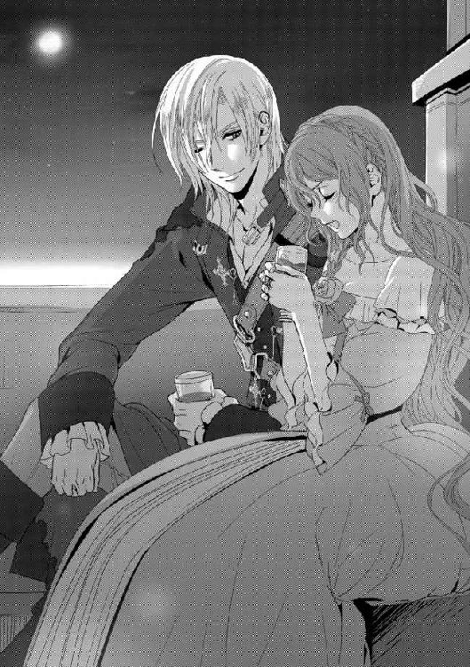
ためらうラティアを、エイドゥは微笑んで見つめている。動揺するラティアを楽しんでいるかのようだ。そんな彼の前、どうしようもない居心地悪さを感じながら、ラティアはまた目を逸らせる。その先、仲間に囲まれるクルサイドが視線に入ってどきりとした。
「くちづけは、ただひとりの人としかしたくない、と？」
薔薇色の髪が揺れる勢いで、ラティアはエイドゥのほうを向いた。瞠目するラティアの紫の瞳に映るエイドゥはなおも微笑んでいて、本気でそのようなことを言っているのかラティアをからかっているのかは、判別できない。
「ならば、クルサイドは罪深いですね。それほどに想う相手がいるかたのくちびるを奪ってしまったのですから」
「そう、よ......。とんでもないことをしたのよ、クルサイドは」
実際には、想う相手などいない。くちびるを捧げたいと思っている相手などいない。それでも望まないのにくちづけをせざるを得なかったことには変わりがないし、それを思うと指輪を捜し当てたあとは刑に処すのが相当だ、などと新たな怒りがわいてくる。
怒りのままエイドゥを見やると、彼は薄く笑みを浮かべている。今にもくちづけできそうな距離に、ラティアは思わず彼から遠のいた。少しうつむき、小さな声で言う。
「......ごめんなさい」
「無理強いしようとは思っていませんから、そのような顔をしないで」
ラティアは慌ててエイドゥを見、変わらないその笑顔につられるように微笑んだ。
「その気になったら、いつでも言ってください。私は、いつでもそのつもりですから」
頼もしい口調でそう言うエイドゥを、ラティアは見つめた。その青の瞳に宿る色は、彼が薔薇の守護者になりたいという言葉が、本当の心からのことであると思わせる。
しかし、とラティアは首をかしげる。さらり、と薔薇色の髪が揺れた。
「どうして、守護者になろうなんて思うの？ 怪我をしたり......死ぬかもしれないのよ？」
そう言いながら、自分は何というものをクルサイドに課してしまったのかと思う。いくら、彼からくちびるを寄せてきたのだとはいえ。いくら、ほかに選択肢がなかったのだとはいえ。
「私は、アマーリアの出身です」
エイドゥの言葉に、ラティアはあら、と声をあげる。アマーリア公国といえばクルサカート王国の隣、高い山脈を挟んでつながった国だ。
「アマーリア公国って、サリラータナの民......だったかしら？ 不思議な力を持った一族が代々王に仕えているのよね？ なんでも......なんだったかしら。遠くに離れていても、心を通じあわせることができるっていう」
エイドゥは穏やかに微笑む。そういうふうに言われている一族がいたこともある、と言った。
「隣国のクルサカート王国は、薔薇の一族の治める国。薔薇の王に、薔薇の指輪。そして薔薇姫。それらの話を子供のころの寝物語に、いったいどのようなものなのかとずっと思っていたのです。特に、薔薇の守護者に守られる薔薇姫とは、どれほど魅惑的な姫君なのかと」
だからエイドゥは、ラティアを構ってくれるのか。ラティアは思わず、自分の装いを見下ろした。潮でがさがさになったドレス、結いあげることもしていない髪。鏡がないからわからないけれど、数日を海賊船で過ごして顔も陽灼けしているかもしれないのに。
「がっかりしたでしょう？ その薔薇姫が、こんなで」
「いいえ」
いたたまれないラティアを前に、エイドゥは横に首を振る。その目は喜ばしげに細められ、ラティアが彼の期待を裏切っていないのだと思わせる。
「伝説の薔薇姫を、この目で見ることができて嬉しい。あなたは、理想どおりの薔薇姫です」
「そう......、なら、いいのだけれど」
とりあえず彼は幻滅していないようだけれど、それにしてもきちんと身なりを整えることもできない中、自分のどのあたりが『薔薇姫』にふさわしいのか。そんなラティアの戸惑いを楽しむように、エイドゥはなおも微笑んでいる。
彼に見つめられながら、ラティアは居心地悪くワインを飲む。そこに、鋭く声がかかった。
「エイドゥ！ なにしてんだ、食わないのか？」
「薔薇姫と、お話ししていたのですよ」
クルサイドだ。エイドゥはゆっくりと立ちあがり、ラティアに手を差し伸べた。
「行きましょう、こんな隅っこにいないで」
「え、でも......」
エイドゥの手は、彼の温和な仕草からは驚くほど力強くラティアの手を取った。ラティアはワインをこぼしそうになって慌てて杯を握りしめ、エイドゥに引きずられるように海賊たちの輪の中に入っていく。
「おぅ、麗しの薔薇姫！ 歌だ！」
クルサイドは機嫌よくそう言い、持っている杯を振りまわす。酔っているのかもしれない。しかしそれはクルサイドだけではなく、まわりの者たちは皆、同じように浮かれ騒いでいる。
「うたえ！ この間の歌だ！」
「え、あの」
エイドゥに、空いている場所に連れてこられた。促されるままに座り、すると次々と乾し肉や柔らかそうなパン、果物に酒の杯が差し出される。
「伝承の、歌......？」
「そうだったか？ 何でもいい、うたってくれ！」
うたえ、と囃し立てられる。ラティアは戸惑っていたが、しかしひとりぼっちで隅に座っているよりも、こうやってたくさんの人たちに囲まれたほうが楽しいのは、確かだ。
ラティアは、空を見あげた。月のきれいな夜、海のうえでの晩餐会。この場に色を添えられるのなら、うたうのも悪くないだろう。
ラティアは息を吸い、声を張りあげた。濁夜に輝く月灯の世界、聖なる鷹を生み出す。北、南、西、東へと追い求める。
（まるで、今のわたしだわ......）
どこを漂っているかもしれない王の指輪を求めて、放浪している。しかしそのための手がかりが、ラティアにはない。唯一の頼りは透明の石を輝かせる指輪で、しかしクルサイドに攫われてからというもの、それが薔薇色になったことはなかった。
以前伝承の歌をうたったとき、虚空を正体不明の鳥が飛んだこと。一瞬だけ、指輪が薔薇色に光ったように見えたこと――あれは、なんだったのだろう。この歌は、ラティアの探すものを呼び寄せる役に立つのか。歌が王の指輪に導いてくれるのなら、いくらだって声を嗄らしてうたうのに。
神の吐息が花人を生み落とし、尊き命は地に満ちる
濁夜に輝く月灯の世界が、聖なる鷹を生み出さん
追え 北へ南、西、東へ
麗しき吐息の大輪を求め、こぼれ落ちた夜のかけらを
荒々しき海神の咆哮から生まれし 聖なる鷹の導くままに
海路は終わりなきうたかたのごとく 綾なる国を綴りし地図なり
香り高き花を求めるものたち 禁色の輝きに、薔薇は金色をした声を響かせる
歌声あげて朗々と 黄金の宮殿に 集え 天地裂く地鳴りを見据え
集い満ちる暗夜の光を体に浴びて
海賊たちの前でばかりではない、今まで何度もうたった歌だ。酔いのまわった皆はやんやと大騒ぎをするけれど、その中、クルサイドが何かを考え込むような目をしてこちらを見ていることにラティアは気がついた。
「暗夜の光って、妙だな」
クルサイドは、唸るように言った。ラティアは思わず、空を見あげる。
今夜は月が輝いていて、暗夜というにはほど遠い。香り高き花、黄金の宮殿と表現されるにはふさわしくても、そこに、暗夜の光――しかも、暗い夜なのに光だなんて。
「そんなこと、どうだっていいじゃないか！」
クルサイドの背を叩く海賊は陽気な声でそう叫ぶものの、言われてみるとにわかに気になり始めた。同時に、幼いころからこの歌をうたっていながらその部分のおかしさは気にならなかった自分の注意力のなさを情けなく思いながら、考え深げにしているクルサイドを見つめる。酔っているはずの彼は眉根に皺を寄せながら、手の中の杯を揺らしていた。
「なんだ、船長。歌の歌詞なんかが気になるのか？」
「どうでもいいんじゃないか。楽しければ、それでいい！」
海賊たちはそう言うけれど、クルサイドにとっては薔薇の一族のことは人ごとではないのだ。またラティアにとっても、薔薇王の指輪を捜すことに役立つのなら、どんな些細な手がかりでもほしい。何かを考えているようなクルサイドを見やりながら、ラティアは促されるまま、海をきらめいて照らす月を見あげてまたうたう。
こぼれ落ちた夜のかけら、聖なる鷹の導くままに。綴られる綾なる地図。禁色の輝き、そして暗夜の光を体に浴びて――。
海賊たちにとっては、それはただの歌なのだろう。歓声があがっても、ラティアはその内容が気になって仕方がない。今まで考えたこともなかったからこそ、クルサイドの言ったことが引っかかってどうしようもないのだ。
再び騒ぎ始めた海賊たちの中、ラティアはクルサイドに近づく。彼の横に座ると、クルサイドは考え深げな顔をしたまま、ラティアの杯にワインを注いでくれた。
「ねぇ、暗夜の光って、どういうことかしら」
ラティアは、濃いワインに眉をひそめながら少しだけ舐めた。やはり薄めて甘くしてもらわないと、とても飲めるものではない。
そんなラティアを前に、エイドゥのように気を利かせることもしないクルサイドは、自分は濃い酒をためらうこともなく飲み干しながら、目だけを動かしてラティアを見た。
「濁夜に輝く月灯、ってのもあっただろう？ 月のない夜に、光るもの」
ラティアはとっさに、指輪を見た。光るものといえば、宝石。通常の宝石の輝きは陽を受けてのものだけれど、これは同じ薔薇一族の指輪が近づけば薔薇色に光る。しかも一族しか持つことの許されない、特別な指輪だ。
互いを引きあって、自ら薔薇色の光を放つ――それは月のない夜も同じこと。今まで一族の者と離れたことはなく、薔薇色に光るところしか見たことのなかったラティアには、むしろ今のように透明のまま、あちこちに置かれた角灯を反射してしか鈍く光ることのない今の状態が奇妙なのだ。
「今は......太陽や月の光がないと、光らないわ。本当なら、薔薇色に光るはずなのに」
「じゃあ、暗夜や濁夜......月のない夜に光ることがあるってことか？」
「同じ薔薇一族の指輪が近くにあればね。でも......」
ラティアは空を仰いだ。月に明るい空に、以前見た不思議な鳥の姿はなく、一瞬光ったと思われた指輪も光らない。透明な石を抱いたまま、ずっとラティアの指に嵌ったままだ。
指輪を撫でながら、ラティアは天を仰ぐ。そんなラティアを見て、クルサイドはつぶやいた。
「闇夜になってみたら、また違う反応があるのかもな」
「そう、なのかもしれないわね......」
指輪を撫でながら、ラティアはなおも空を見やる。月がない夜に、何かが起こるのだろうか。それともこれは、ただ歌の歌詞というだけなのか。
そのとき、ぐらりと船が揺れた。酒の杯を持つ者は皆驚いた声をあげ、船の甲板に座り慣れていないラティアは、体重が足りなくて転がりかけてしまう。
「きゃあっ！」
「おっと」
ラティアを抱きとめたのは、クルサイドの腕だ。強い腕に腰を受けとめられて、ラティアは転んでしまうことを避けられた。
強い腕だ。決してラティアを離さないのではと思わせるような、その腕に包まれていることに深い安堵を覚えるような。
「気をつけろ」
ラティアを助けたのは、彼が薔薇の守護者だからに違いないのに。もしくは、転びそうになる者を目の前に反射的に手を伸ばしただけか。
（クルサイドは、薔薇の守護者だから。だから、わたしを助けてくれたんだわ。それ以外の理由なんてない。だって、海賊が......）
しかしこうやって抱きとめられて助けられて、するとやはり自分でも驚くほどの安堵が走る。この腕につかまえておいてもらえれば、海のうえでも戦闘の最中でも、何も恐れることはないと感じるのだ。
（海賊が、何の益もないのに誰かを助けるなんてこと、あり得ないもの。わたしを助けるのだって、薔薇の守護者で、わたしを助けることでひと儲けしようって考えてるから......）
クルサイドの腕に抱かれたまま、ラティアは顔をあげる。彼の黒い瞳と目が合い、彼がじっとラティアを見つめていることに、どきりと胸が跳ねた。
「や、離し、て......」
抱きしめられていると胸の鼓動が速くなって、落ち着かない。早く離してほしいともがいてもクルサイドの手は離れず、ラティアの頬にのぼる熱はますます高くなった。
「大丈夫、だから......、はな、して......」
ラティアを抱きしめたまま、くくっとクルサイドは笑った。
「純情だな。男と抱きあったこともないのか？」
「な......！」
クルサイドの粗野な暴言に言葉を失うラティアを、彼はもとどおりに座らせてくれる。クルサイドがうまく受けとめてくれたおかげで、杯の中身もこぼれなかった。
「......っ」
ラティアから手を離したとき、クルサイドが少し顔を歪めた。ラティアは、はっと彼を見る。
「どうしたの？」
「なんでも、ない」
彼は言い捨て、立ちあがるとラティアに背を向けてしまう。どうした、とまわりの仲間たちに声をかけられても、いつもの調子で「なんでもない」と返している。
その表情が気になりながら、ラティアは彼の背を見つめた。エイドゥに「どうぞ」と渡されたのは、丸い形の乾燥果物。林檎の香りの高いそれを「ありがとう」と受け取りながら、ラティアの目はほかの海賊に囲まれ新たな杯を干しているクルサイドに向けられたまま、離れなかった。
大騒ぎの一夜が明けたあとは、甲板の掃除だという。
それは週に一回、定められているシルディーン号での掟のひとつだ。今は土曜日の朝だというが、誰が日付を管理しているのかというと、常に銀色の懐中時計を手にしている先生という綽名の年配の海賊だった。
薄汚れた帆布の上衣に脚衣、乱れた短い銀髪という、いかにも海賊然とした装いの彼が〝先生〟とはなかなかに笑わせる名づけではあるが、点鐘を打つ係の者も彼の時計をあてにしているのだから、その時計の刻む時間は正確なのだろう。
海賊たちは、陽射しの下裸足になり袖と裾をまくり上げ、四角い石を両手で押さえつけるようにして甲板を擦る。皆がくるくると忙しく働く中、ラティアは目をぱちくりさせていた。
これが王宮でのことなら、下僕や侍女たちが立ち働くのを気になどしないのだけれど。いくら大きな船だとはいえ、甲板はひと目で見渡せる。その中でひとりぽつりと座っているのは、なんとも居心地が悪かった。
「やってみるか？」
立ち尽くすばかりのラティアの前、通りかかったのはクルサイドだ。彼はにやりと笑うと、四角い石を渡してきた。
「なに、これ......」
受け取ろうとして、その重みに悲鳴をあげた。どうにか受け取ったもののその場に座り込んでしまい、ますます皆の笑いを誘う。
「これ、すっごく......おも、い......」
「だから、おとなしくしておけ。そんなところに突っ立ってるんなら、あっちのほうをやってくれ」
クルサイドが差した先には、箒を使っている者がいる。あれならできるかもしれないとラティアは石をクルサイドに預け、そちらに歩くと箒を受け取る。
しかし簡単に見えたものの、箒を操るにもこつがあるのだ。自分で掃除などしたことのないラティアにはうまく動かせず、結局ラティアが多少なりとも役に立ったのは磨いたあとを水で洗い流し、雑巾で擦るときだけだった。それも皆のようには手際よくいかず、「邪魔だ」「どいていろ」と怒鳴られてしまう始末。
掃除が終わったあとの、磨かれた甲板に置かれた木箱のうえ、座り込んだラティアはため息をつく。そんなラティアの目の前を歩いていくのは、クルサイドだった。
「なんだ、あの程度でへばったのか」
たいして役に立ってもいないのに、疲れようもない。ラティアは膨れたまま首を横に振った。
「自分の無能ぶりに、がっかりしているところよ」
「お姫さまにそう手際よく仕事をされちゃ、王宮のやつらも出番がないだろう。あんたは、それでいいんだよ」
クルサイドは笑う。声を立てての機嫌のよさそうな笑いに、自分も少しは役に立てたのかとラティアは顔をあげた。歩き去っていくクルサイドの後ろ姿に、ラティアは首をかしげた。
（なんだか......歩き方が、変？）
何とはなしに、右足を引きずっているような。昨日はそれほど気にならなかったのに、いったん目についてしまうとどうしても彼を見つめてしまう。クルサイドはやや不自然に右足を前に出しながら、船室への扉をくぐる。
と、その右足が境目の部分に引っかかった。彼は転びかけ、すんでのところで踏みとどまる。
「きゃっ！」
ラティアは声をあげ、クルサイドのもとに飛び寄った。彼が押さえているのは右腿で、脚衣を通してうっすらと血が滲んでいることに気がついた。
「どうしたの、怪我......、怪我、してるの!?」
「......なんでも、ない」
悲鳴をあげるラティアに、なんだなんだと船員たちが集まってくる。負傷者など見慣れないラティアの目にも明らかだったのだ。怪我に慣れている海賊たちの前では誤魔化せるわけもなく、彼が右腿に傷を負っていることはすぐに知れた。
「なんで隠してたんだ？」
「こんな......、血が出てるじゃねぇか！」
右腿を、斜めに走る傷。ラティアは、はっとした。
（あの、とき......）
昨日襲った商船から、乗り込んできた男にラティアがつかまったとき。あの男が振るった短剣が、クルサイドに怪我を負わせたに違いない。
「たいしたことない。こんなの、舐めときゃ治る」
そう言うクルサイドは、苦しげな様子を見せてもいなかった。ラティアが騒ぐようなことではなかったのかもしれない。仲間に促されて船室に消えたクルサイドは治療室に向かったのだろうけれど、彼の言うとおり、たいした傷でなければいいとラティアは祈る。
「わたしの、せい......？」
ラティアがうかうかと船室の外に出ていなければ、あの男につかまることもなかった。クルサイドが怪我をすることもなかったのではないかとラティアは懸念するけれど、クルサイドは決してそうだとは言わないだろう。
いてもたってもいられなくて、ラティアはクルサイドを追った。治療室の前に群がる者たちを押し退けて、中に入ろうとする。治療室では船医がクルサイドと向きあっていて、まくりあげた彼の脚衣の下、斜めに走った傷から思わず目を逸らせた。
「放っておいたら、下手すれば切断だぞ」
船医の言葉に、ラティアはぞっと身を震わせる。しかしクルサイドは、まるでいたずらを見つかった子供のように、ぷいとそっぽを向いているのだ。
慣れた手つきで、船医はざくざくとクルサイドの怪我を縫った。とても見ていられなくてラティアは視線を逸らせたままだったけれど、クルサイドは呻き声をあげることもない。この程度の治療は慣れているという様子で、恐る恐る彼を見たラティアと目があうと、眉をしかめた。
「そこで何やってんだ、見せものじゃない」
刺々しい口調でクルサイドは言い、ラティアは思わずむっとする。
「な、なによ、心配してるのに！」
「心配なんか、しなくていい」
彼はふいっと視線を逸らせてしまい、ラティアは思わず一歩踏み出しかけた。しかしクルサイドの全身から発せられる「近づくな」とでもいうような覇気に、足をとめる。
（なによ......！）
踵を返し、治療室を出た。クルサイドの態度に腹は立ったけれど、改めてあのひどい怪我が自分のせい――彼が守護者でなければ負うこともなかったと思うと、足に込める力がますます大きくなる。
ラティアは船廊を歩き、すると見慣れた姿が目に入った。
「エイ......」
彼の名を呼ぼうとした。しかし彼は誰かと話しているようだ。邪魔してはいけないと立ち去ろうとし、しかしはっと気がついたことがある。
（あそこ......、船尾の回廊の端だわ。あんな狭いところに、誰がいるっていうの？）
しかし確かに、エイドゥは話している。声は小さくて何を言っているのかはわからないけれど、相手は目上の人間だろう。しかし海賊たちにも厳正な階級があるとはいえ、話は対等にする。今のエイドゥは一国の王でも相手にしているようで、恭しい口調で話しているように感じられる。
（エイドゥ？ ......いったい）
ラティアは、はっとした。エイドゥの声がやんだのだ。ラティアは慌てて足音を立てないように回廊を駆け、エイドゥのいたところからは離れた舷縁に手をかけて海を見つめ、ずっとそうしていたようなふりをした。
背後に、エイドゥの足音が近づいてくる。ラティアは青く揺れる水面に懸命に目をやり、エイドゥのことになど気がついていない態度を装う。
「薔薇姫？」
「......あ、え、エイドゥ」
そこで初めて彼に気がついたというように、びっくりした表情を作って振り返った。エイドゥは驚いた顔をしていたけれど、ラティアも驚きを伝えられただろうか。
「薔薇姫、気にすることないですよ」
彼はすぐに驚きを引っ込め、苦笑する。その肩から、さらりとした金髪が揺れた。
「クルサイドは、あんな傷など平気だと言ったのでしょう？ いいのですよ、気にしなくて」
「どうして......わかるの？」
ラティアをいざない、甲板のほうに歩きながらエイドゥは笑みを作った。
「クルサイドは、照れ隠しをしているだけです。女のかたをかばって怪我をしたなんて、言い出せなかったのでしょう」
「そんなこと、って......」
クルサイドは、ラティアを助けてくれたのだ。それが薔薇の守護者としての行動なら、彼にはどうしようもないことだ。それを言い出せないというのは彼の誇りなのか、単に意地っ張りであるだけなのか。
「だって、仕方のないことじゃないの？ あれだけの戦いがあったんだし......怪我だってするでしょう？ みんな、クルサイドが薔薇の守護者だって知ってるのだし」
「それが言い訳にならないところが、男の性根なんですよ」
困ったように笑って、エイドゥは言った。
「そうでなくても船長は皆の先頭に立って、尊敬される存在でなければならないんです。少し斬られたくらいで痛いのなんのと言っていては、それだけで舐められる」
「少しって......」
ラティアは、思わず治療室を振り返った。先ほど傷を縫われていたクルサイドの姿を思い出して、ぞっとする。
「だって、縫ってたじゃない？ あれが『少し斬られたくらい』っていうの？」
「クルサイドも、あそこまで深いとは思っていなかったんでしょうね。なんせ、斬るの斬られるのは日常茶飯事ですから。少しくらい痛いと思っても、荷物の運び込みやなんやで大忙しだったわけですし。クルサイドも、船医に痛みのことを言い出せなかったのでしょう」
聞かされた話に、ラティアは思わずぽかんと口を開けてしまう。
「性根だとか、言い出せなかったとか。それでお医者さまが言ってたみたいに、足を切断するはめになったら元も子もないじゃないの。それでも平気だって言うのが、男の意地？」
エイドゥの苦笑は濃くなった。彼はラティアを表の甲板に連れ出す。吹き抜ける潮風に煽られる髪を押さえながらエイドゥを見あげると、彼はなおも笑っている。
「女のかたには、わからないかもしれませんけれどね。特に私たちは、大切なものなのですよ。男の誇りというものが」
「......わからないわ」
ラティアは首を振る。そんな彼女を苦笑交じりに見ていたエイドゥは、そっとラティアの耳もとに口を寄せる。はっと振り返ったラティアに、微笑みかけた。
優しげな笑みだ。右目の傷さえなければ、王宮でも通用するような優雅な微笑。それを前に、ラティアはどぎまぎしてしまう。
「なに、ラティアに迫ってんだよ」
声がして、ふたりは揃って振り返った。船室から出てきたのはクルサイドで、右足を少し引きずっている。
「治療は終わりましたか？」
「あんなの、治療にも入らん。ちょっと縫っただけだ」
ちょっと、って。ラティアはぞっと身を震わせたけれど、クルサイドは痛みなど少しもないような顔をしてエイドゥに目を向けた。
「ラティアに興味があるのか？ しかし、こいつはクルサカート王国の王女だぞ。おまけに、薔薇姫。人のことを勝手に薔薇の守護者なんかにしやがって、はた迷惑なやつだ」
「なんですって!?」
ラティアは思わず息巻いたけれど、クルサイドはちらりとラティアを見て目を逸らせた。それにラティアは、ますます気色ばむ。
伝承の歌の濁夜や暗夜の謎の話をしたときのクルサイドは、頼りになる男だと思ったのに。このような態度を取るいけ好かない人物だったのだと、改めて自覚した。
「エイドゥがなりたいって言ってるんだから、エイドゥにならせてやれよ。それで、双方満足ってことじゃないか」
「なにを、言うの......」
怪我の痛みのせいなのだろう。それともエイドゥから聞いた〝男の誇り〟ゆえか。不機嫌にラティアを見やり、そのまなざしはラティアをたいそう傷つけた。
ふたりのもとから身を翻すと、ラティアは駆けた。逃げながら、考えた。
クルサイドがラティアを守るのは、薔薇の守護者だから――それだけなのに。彼の、単なる義務からの行為に、心をかき乱されることなどあり得ないはずなのに。
蘇るのは、クルサイドの言葉。横帆船の船員から助けられたとき、薔薇の一族に伝わる歌の謎をふたりで考えたとき。何よりも彼が花嫁衣装に包まれたラティアを奪ったとき、閃光のように脳裏にきらめいた、ラティアの直感といってもいいあの感覚。
（あんなの......とっさに、クルサイドしかいなかったからだわ。あれが、誰でもよかった......わたしを、ヴォルグロー王から救ってくれる人なら、誰でも）
ごくり、とラティアは息を呑んだ。
（だって、わたしは薔薇姫だもの。薔薇姫以外の、何者でもない......）
それなのになぜ、ラティアはこれほどまでに傷つくのだろうか。
（こんなものなの？ 守護者に守られる薔薇姫って......こういう気持ちになるものなの？）
かつては薔薇姫だった、亡き母に問うてみたいと思った。母はラティアの祖父から父への薔薇の指輪の受け渡しを行なったのち、亡くなった。ラティアの脳裏に浮かぶ母の面影は、王宮に飾られている肖像画のみだ。そんなラティアが、母に薔薇姫のなんたるかを尋ねることなどできたはずはないのだけれど。
（......あれがエイドゥだったら？ ほかの誰かだったら？ 誰だって、守護者ならわたしを守ったはず。それでも、こんな気持ちになったの？）
誰に問うこともできない、答えのない疑問がラティアの脳裏でぐるぐるとまわる。迷宮の中に迷い込んだような思いでは人と顔をあわせる気力もなく、与えられた狭い船室に入った。寝台に腰を下ろすと大きく息をつく。
（誰か......教えて。わたしが薔薇姫じゃなくて、クルサイドが守護者じゃなくても......わたしは、こんなふうに思ったのか）
寝台のうえに、ころりと寝転がった。すでに横になることに慣れた硬いマットに身を委ねながら、ラティアはぎゅっと目をつぶる。脳裏を掠めていく顔――不本意だという顔をしながらも、ラティアの危機には必ず現われるクルサイドの――。
（思った、はずはないわ。だって、クルサイドは、守護者だから......）
遠く、賑やかに男たちの声が響いている。その中には、クルサイドのものもあるだろう。彼がラティアのことなど忘れて仲間と陽気に歓談でもしているのかと思うと、胸を衝くものがある。同時に、彼が元気でいることに安堵した。
（わたしのせいで、怪我をさせて......）
船医の腕が確かであることを、願う。腿の傷がひどいことにならなければいい。ラティアのせいで、負った傷――彼が守護者でなければ、受けることのなかった怪我。
（......ごめんなさい）
クルサイドの前では、なぜかどうしても口にできないひと言を、胸の奥で繰り返した。両手で顔を覆い、ぎゅっと力を込めて感情を押し殺した。
＊
嵐が来る、と言ったのは、ふくろうと綽名されている小柄な男だった。
夜明けの三点鐘はすでに鳴った。陽が昇り澄みきった青空を見あげながら、この時間の見張りであるふくろうは、嵐が来ると叫んだのだ。
「こんなに晴れてるのに......嵐ですって？」
遠眼鏡を手に、檣楼に立っているふくろうを見やって、ラティアは首をかしげる。かたわらを通りかかったクルサイドは立ちどまり、ふくろうが見やっている方向に目を向ける。
「嵐だ。甲板のものを片づけろ。船体に穴でも空いてないか、念入りに調べろ！」
「本当に、嵐が来るの？」
雲ひとつない青空を見あげるラティアに、クルサイドはにやりと笑う。
「やつがふくろうって呼ばれてるのは、遠眼鏡なんかなくても遠くが見えるくらい目がいいからだ。やつの目には、雷雲が見えてるんだろう。ふくろうの目が間違いだったことはない」
ラティアはまばたきをしながら、檣楼のふくろうとクルサイドを交互に見た。そしてふくろうが見ている先に目をやるけれど、ラティアの目にはただ青い空が見えるばかりだ。
「ねぇ、本当に......」
クルサイドに問いかけようとしたけれど、彼の姿はもうなかった。船員たちも忙しく動きまわり、大きな荷を担ぐ者、横静索を登る者、縄を引いて帆を畳む者。なにもできないラティアは、慌てて甲板の隅に身を寄せるしかない。
ふくろうの目は、クルサイドの言うとおり正確だった。ラティアの見あげる空はどんどん曇っていく。神の手が気まぐれに青を黒に塗りつぶしたがごとく、青空が曇天に変わっていくのだ。
「こんな......、急に？」
嵐を前に、ラティアを構う者はいない。ラティアは甲板の隅で小さくなったまま、刻々と変わりゆく空を見つめるばかりだ。
「こんなに突然、変わるものなの？」
ぽつぽつと、雨が降り出した。最初は甲板に粒の模様を作るばかりだった雨は、あっという間に大粒に変化する。気候の突然の変化に、このまま甲板にいてはいけない、船室に入らなくては、と思うものの、そのあまりの勢いに立ちあがることもできなかった。
「や、ぁ......！」
肌を叩く雨粒は、鉛玉を打ちつけられているかのように痛い。目も口も開けていられなくて、ラティアは小さく縮こまることしかできなかった。
響くのは男たちの怒声、駆けまわる足音、そして激しい波の音。船は次第に大きく揺れだして、ラティアは張りだした船骨につかまったけれど、船底からすくいあげるような大きな揺れに、すぐに手が離れてしまう。
「きゃ......ぁ......っ！」
叫び声をあげる口の中にも、雨が入ってくる。同時にラティアの体を包んだのは大量の水だ。まるで樽いっぱいの水をぶちまけられたようで、しかもその水は沁み入るほどに塩辛い。ラティアは激しく咳き込み、甲板のうえでのたうった。
再びの悲鳴は、さらなる波に奪われた。クルサイドを守護者にしたとき、自ら海に飛び込んだことを思い出す。今は船のうえにいるはずなのに、ラティアを襲う波は絶え間ない。舷縁を越えてこれだけ大きな波がやってくるのだ、突然の嵐はいったいどれほどの規模なのだろう。
「......っ、あ......！ 助け、......っ......」
助けて、と叫ぼうとした。その瞬間、ラティアの脳裏を貫いたのは脚衣を染める血――クルサイドの負った、腿の怪我だ。
ラティアの身に危機が及べば、ラティアが助けてほしいと願えば、クルサイドはなにをも投げ打ってラティアのもとにやってくる。しかし今は嵐、船長たるクルサイドは慌ただしさの真っ直中だろうし、ラティアにかまけている暇はないはずだ。
（だめ......、自分で、どうにかしなきゃ）
懸命に、ラティアは目を開けた。大粒の雨と、しきりに甲板を襲う波が沁みる。それでも精いっぱい目を見開くと、立ちあがることもできない洪水のような嵐の中、甲板を這った。
船室への扉は、そう遠くはないはずだ。しかし雨と波、さらには吹きつける凄まじい風の中、ラティアの手も足も、なかなか前には進まない。赤ん坊が這うよりもゆっくりと、懸命に濡れた甲板のうえを両手両膝で這いずる。
「きゃぁぁ、あ！」
いきなり、今までにない大きな波が来た。ラティアはそれに呑まれ、海水の勢いに包まれて濡れた甲板に転がった。
「い、た......っ......！」
全身が甲板に叩きつけられる。ラティアは悲鳴をあげ、しかし拍子に開けた口に水が満ち、すべてを飲み下してしまう。濃い海水はラティアの咽喉を焼き、呻きをあげて転がるも、そんなラティアを再びの波が襲う。
（助けて、助けて......！）
すでにラティアの脳裏には、ほかのことはなかった。ただ海水に呑まれ甲板を転がり、痛みと苦しさに耐えることも限界だ。
（助けて......、ここから、救って......）
「なにやってんだ」
凄まじい波と雨の音の中、その声ははっきりと聞こえた。ラティアの聴覚は驚くほど鋭くそれをとらえ、しかし誰の声なのかまでは聞きわける余裕がない。
「こんなに濡れて。どうして船室に入っておかなかったんだ」
ラティアの体が、ぐいと持ちあげられる。背中と両膝の裏に力強い腕がまわされる。ラティアは驚いて、目を開けた。
「嵐が来るって、言っただろうが」
クルサイドだ。自分を救った腕の主を目に、ラティアは大きく息をついた。伝わってくる彼の体温に、今までの苦しみが、嘘のように引いていく。なおもラティアは雨と波に打たれていたけれど、強い腕の力を感じることで全身に安堵が広がっていくのがわかる。
「クル、サ......イド......」
彼はラティアを翻弄した雨と波などものの数でもないというように大きな歩で歩き、体当たりをして船室への扉を開けた。
すぐに雨が激しく吹き込んできたけれど、建てつけの悪いそれをクルサイドは器用に背中を使って閉める。すると轟音はやや治まり、びしょ濡れのラティアは、ぱちぱちと何度もまばたきをした。
「間に、あわなかったのよ......」
「ぼんやり、空なんか見てるからだ。嵐は、あっという間に来る」
ラティアを抱えたまま、クルサイドはラティアの船室に向かう。彼の腕に抱きあげられていることにラティアは気づき慌てたけれど、ラティアの船室までクルサイドは彼女を降ろさず、船室の扉もやはり体当たりで開けて、中に入った。
「そのままじゃ、ベッドには座れないな」
拍子に船が大きく揺れ、クルサイドの腕の中でラティアは悲鳴をあげた。しかしクルサイドはラティアを落とすこともせず、両足に力を込めただけで揺れをやり過ごしたのだ。
「このくらいの揺れで騒いでたら、そりゃ甲板では辛かっただろう」
「だ、って......、こんなに、揺れて......雨も波も、すごくて」
ラティアは、自分がクルサイドにしがみついているのに気がついた。しかし大きな揺れは治まっても、嵐の中の船だ。いつもとは比べものにならないくらいに揺れていて、ラティアを抱えたクルサイドがどうして立っていられるのか不思議でたまらない。
再び、船は揺れる。ラティアは悲鳴をあげてクルサイドにつかまり、すると嵐の恐ろしさが薄まり、安堵があふれるのだ。その安堵に身を浸していたくて、ラティアはなおも彼にしがみつく。そんなラティアに、クルサイドは声をあげて笑った。
「こうやってると、かわいい女の子なのにな」
笑いながらそう言うクルサイドに、ラティアはむっとくちびるを尖らせる。咽喉が痛くなるほどに潮水を飲んで少し声が嗄れているが、懸命に叫ぼうとした。それでも腕はクルサイドにしがみついたままなのは、嵐の衝動がラティアには本当に恐ろしいものだったからだ。こうやって抱きつくと、恐ろしさが和らぐからだ。
「か、かわいくなくて悪かったわね！」
「だから、かわいいって言ってるだろうが」
クルサイドは笑い、ラティアを床に降ろした。自分の足で立たされて、しかし力が入らない。へなへなと、床に座り込んでしまった。そんなラティアに手を貸してくれるクルサイドは、なおも笑い声を立てた。
「あの程度の嵐でそんなになるなんて、やっぱりお姫さまだな」
「あの程度、って......」
豪雨と大波、この嵐で船が壊れてもおかしくないと思えたのに、クルサイドにとってはたいしたものではないのだ。
「こんな嵐なんてしょっちゅうだ。こんなのでひぃひぃ言ってたら、船になんか乗ってられないぞ」
「そんな、こと......、言ったっ、て......」
クルサイドにぎゅっと手を握られて、その温かさに安堵する。しかしラティアの足には力が入らず、立ちあがることができない。
「おい、こら。立てよ」
「立て、ない......」
震える声で、そう言った。彼に抱えられて、彼の体温を感じ取っていたときは力が漲ったと思ったのに。ラティアは縋るようにクルサイドの手を握りしめ、すると彼は困ったように笑い、ラティアの腰を抱きあげた。
「きゃ、っ！」
「立てないんだろう？ 仕方ない、座って嵐がやむの、待ってな」
そう言ってクルサイドは、ラティアを部屋の隅の木箱のうえに座らせてくれる。びしょびしょになった髪とドレスを体にまとわりつかせたまま、ラティアはクルサイドを見あげた。
「おとなしくしとけ。夕方ごろになれば、やむ」
「行っちゃうの......？」
つないだままの手に力を込めて、ラティアは問うた。クルサイドは少し驚いた顔をしていたけれど、握った手をぎゅっと掴み返してくれる。
「悪いが」
少し目をすがめて、クルサイドは言った。
「あちこち、見てまわらないといけないんでな。いくらたいしたことない嵐でも、縄に緩みでもあればそこから大変なことになりかねない」
ラティアは、目を見開いた。思わずクルサイドをまじまじと見る。
（「悪いが」なんて......）
薔薇の守護者であることをいやがっているクルサイドだ。嵐に巻かれているラティアを助けてくれたのも、彼が守護者であるからに違いないのに。また面倒をかけられたといって怒っていても不思議ではないのに、ラティアを労るような言葉をかけてくれる。ラティアをひとり残していくことに謝罪をしてくれる。
「わかった、わ......」
ひとりにされるのは不安だけれど、クルサイドには船長としての仕事がある。ラティアは手を離そうとし、しかしクルサイドがまた握ってきた。ラティアの小さな手を掴んだまま、離さない。
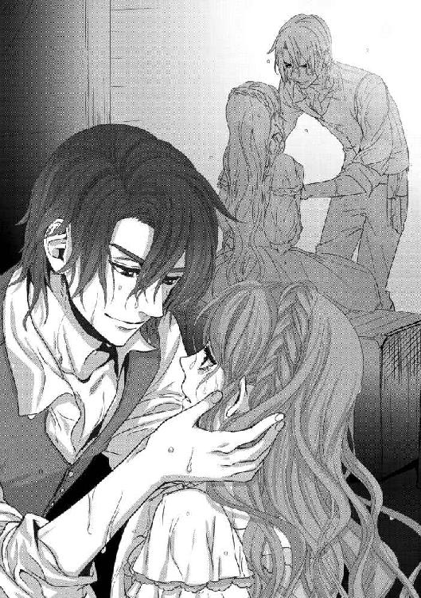
「まぁ、初めての嵐じゃな。驚いても動けなくなっても仕方ない」
彼の手の強さが、その温もりとともに伝わってくる。それらに、改めて安堵を感じた。なおも吹き荒れる嵐の音も、もう恐ろしくはない。
「待ってろ。すぐに、戻ってきてやるから」
「いいの？」
思わず、胸が跳ねた。握ったままの手に力を込めてしまい、するとクルサイドは、今まで見たことのないような笑みを浮かべたのだ。
「そんな顔されちゃ、戻ってこないわけにはいかないだろうが」
「どんな、顔......？」
ラティアは目をしばたたかせる。睫毛についていた水滴が、涙のように頬を流れた。
「そんな顔、だよ」
戯けたようにクルサイドは言うと、ラティアの頬を指先で拭う。そしてラティアの見たことのない笑みを濃くすると、そっと手を離してしまった。
「あ......」
「とにかく、おとなしくしてな。いつまでもひとりにはしておかないから」
そう言って、クルサイドは身を翻す。いつもより激しく揺れる船の中とは思えないほどに軽い身のこなしで部屋を出て行く。
彼の背が扉の向こうに消え、閉められた扉は揺れのせいで大きな音を立てた。ラティアが大きく震えたとき、彼女はもうひとりぼっちだった。
もう雨に打たれることも、波に呑まれることもない。大きく揺れる船の中、木箱のうえは不安定だけれど海水でぬるぬるになった甲板を這っていたときよりは格段にましだ。
（どういう......、意味......？）
惑乱するラティアは、視線を泳がせた。見まわすまでもない、狭い部屋だ。しかしそこにひとりだというのが、これほどに不安になるなんて。毎日ひとりで眠っているのだからひとりがさみしいというはずはないのに。
ラティアは、自分の手を見た。クルサイドが取ってくれた手だ。
（な、んなの......。この、気分......）
理屈で考えれば部屋の中にいるほうが安全だし、守護者はエイドゥのほうが適任だ。わかっているのに、ラティアの常識では説明のできない何かが胸に湧き起こり、心を制する。不安にさせる。
（いつも、守ってくれるから......勘違い、してるんだわ）
クルサイドの腕を、手を、まるで餓えた子供がパンを前にしたときのように感じているに違いない。満腹になればパンは魅力をなくし、もういらないと首を振るはずなのに。ラティアの心はどれだけ食べても満ちない、かの大食の魔神の胃袋のごとく、いっぱいになることを知らないのだ。
（勘違いに、違いないのに......それ以外に、あり得ないのに）
しかしラティアの体には、クルサイドの温もりが残っている。抱きあげてくれた腕の力、しっかりと握ってくれた手の温度が沁みついていて、それがないからこそラティアは不安になり、彼の言葉に困惑し、ひとりぼっちをさみしいと感じてしまうのだ。
クルサイドがラティアの危機に駆けつけてくれること、その理由が、薔薇の守護者であるからでなければいいのに。彼が、彼の意志で来てくれるのなら、どれほどに――。
ぶるり、とラティアは身を震った。
（おかしいわ......、わたし）
壁に身をもたせかけ、また震える。身を貫くわななきは、雨と波に打たれて冷えたから。それ以外に、あり得ないのに。
嵐は、なおも勢いを増す。ごうごうと響く雨風に波の音、その中に飛び交う男たちの怒号に耳を傾けながら、ラティアは懸命に自分の心を抑えようとした。
クルサイドの言ったとおり、夜になる前に嵐はやんだ。
しかし暗雲がやってきてから、一日中ずっと暗かったのだ。夜が来たというのは〝先生〟の銀の時計で知ったことで、波は穏やかに、雨もなく、嵐が襲ってきたことなど嘘だったかのようだ。
部屋の木箱の中の帆布で髪を拭い、体もできうるかぎり拭いた。
濡れてしまったドレスはせめて夜風で乾かそうと、ラティアは船尾甲板に立つ。舷縁に腕をかけて薔薇色の髪をなびかせながら、遠くを見つめていた。
しかし、嵐のあとの夜の海だ。ふくろうならともかく、ラティアの目では何も見えない。雲は厚くかかっていて、月明かりの一筋も射さない夜だ。ラティアの背後をいくつもの角灯が灯っているからここまで歩いてこられたので、夜風に揺らめくそれ以外はすっかり塗りつぶしたかのような闇だ。
甲板には、男たちが行き交っている。嵐の後始末に普段の消灯時間は延長されたらしい。手伝いを申し出たもののラティアにできる仕事はなく、だからひとり、こうやって風に吹かれている。
目を凝らしても何も見えない闇夜を、ラティアはじっと見つめていた。脳裏をぐるぐるとまわるのは、嵐のさなかクルサイドに助けられたこと。彼の腕の力が、手の温もりが、見たことのない笑顔が、ラティアの心を占めていて、嵐のあとの肌寒さも気にならない。
海風が、ラティアの髪とドレスをばたばたと揺らす。最初、このシルディーン号に乗ったときに自ら海に落ちたあとは、潮気の抜けない髪とドレスに難儀した。
今では、すっかり慣れてしまっている。潮にごわごわした髪と衣服など、シルディーン号に乗るまでの生活では、耐えがたい感覚だったに違いないのに。乾パンを囓ることにも乾燥豆を戻したスープの味にももう慣れっこだ。そしてあの嵐のあと、たくさんの島でできているクルサカート王国という国に住みながら自分は海のことを何も知らなかったのだということを思い知ったのだ。
「なにしてるんだ」
突然背後から声をかけられて、ラティアは驚いて振り返る。
「クルサイド」
どきり、と胸が鳴る。彼のことを考えていたことがばれはしなかっただろうか――そんなはずはないのに、ラティアは無性に恥ずかしくなって、慌ててクルサイドから視線をはずした。また、闇夜に目を向ける。
「寒くないのか？ そんな、濡れたままで」
「寒くないわ。こうやって、乾かしてるところ」
そう言うクルサイドも、衣服は濡れたままだ。彼はラティアの横に立ち、舷縁に腕を置くとラティアと同じ方向を見つめる。
（......あっちに行って、ほしいんだけれど）
居心地悪く、ラティアは考えた。
（一緒にいると、おかしなことを考えてしまうの......もっと。なんだか、もぞもぞするみたいな）
不可解な彼の言葉を、問い質したい。しかしそうは思っても、なぜか口に出すことはできなかった。ラティアの目は虚空を見つめるクルサイドの横顔をちらりと見、彼がこちらを見ないことについじっと見つめてしまい、そのままに釘づけになって離すことができない。
クルサイドは、ラティアに見つめられていることに気がついていないようだ。何を考えているのか、何も見えないはずの暗闇を目を離さずに見つめているのだ。
「......なぁ」
暗い夜を見つめていたクルサイドが、突然口を開いたのでラティアは驚いた。思わず、なに、と声を震わせてしまう。
「暗夜とか、濁夜とか、あったよな......？」
「え？」
突然の問いに、ラティアは慌てた。しかしすぐに、それが薔薇の一族に伝わる歌の歌詞のことだと気づく。ラティアは何度もうなずいた。
「それって、こういう......」
彼は、虚空を指差した。ラティアもつられるように、そちらに目を向け、手を差し伸べる。ふたりの手が、触れあうぎりぎりのところでともに暗闇を指す。
「あ......、っ！」
その瞬間、眩しいものが鋭く目を射て、ラティアは声をあげた。
「な、に......!?」
薔薇色に、輝くものがあった。暗闇の中、突然のまばゆい光にたじろいでしまう。しかしそれが自分の指から放たれているもの――右手の、中指から。そこに嵌った薔薇の指輪の輝きだと気づき、思わず一歩、退いた。
「光って、る......？」
「色が変わってる。ずっとそれ、透明だったよな？」
鮮やかな薔薇色は、角灯の灯よりも何倍も眩しい。ふたりの顔が、薔薇色の光に照らされる。クルサイドは目を見開いてラティアの指輪を凝視していて、それはラティアも同じだった。
「どうして、この色......」
ラティアにとっては、見慣れた懐かしい色だ。同じ薔薇の指輪が側にあれば、指輪の石はこうやって薔薇色に光る。以前は常に、その光を放っていた。クルサカート王国を離れ一族の者のもとを離れ、シルディーン号に乗るようになってからずっと透明だった指輪がこれほどに光ったのは、初めてだった。
「お父さまの指輪が、近くに......？」
胸を高鳴らせ、ラティアはあたりを見まわす。しかし指輪の光はふたりの顔を照らす程度で、この暗闇の中、近くに指輪を光らせた何かの気配は感じさせない。
「おい、見ろ」
クルサイドが天空を指差す。ラティアも、やはり彼の手につられて天を差した。指輪の光が届くほどの近く、銀色に輝く何かが目に入る。
「あれ、は......」
それは、ゆっくりと空に円を作っている。まるで輝く星がひとつだけ落ちてきて、ゆっくりとくるくるとまわっているかのようだ。
「なに......、何なの、あれ......？」
「おい、ふくろう！」
暗闇を旋回するものから目を離さずに、クルサイドが叫んだ。彼の命令は素早く船中に広がったらしく、小柄な男が飛んできた。
「おい、ラティア。その指輪、上に向けたままにしておけ」
「え、ええ......」
手をかざしたまま、薔薇色の光が天空を射すようにする。その光の中、銀色のものは依然、円を描いて飛び交っていた。
「ふくろう、おまえ、あれが何に見える」
「鳥ですな」
しゃがれた声で、ふくろうは言った。
「鷲......、いや、鷹だ。しかし、銀色の鷹とは」
彼は言葉を切り、銀色の鷹を照らし出しているラティアの指輪を、そしてラティアを見やり、意味ありげに目をまたたかせた。
「今まで透明だった宝石が、赤く光る。そんな不思議があるんなら、銀色の鷹がいても不思議じゃない、かねぇ......」
どこか人を食ったような物言いでそう言って、ふくろうはまた天を見る。クルサイドもラティアも、大きな円を描きながら飛ぶ鳥を見つめていた。
（荒々しき海神の咆哮から生まれし、聖なる鷹......）
頭上を飛んでいるのは、伝承の歌に出てくる鷹なのだろうか。単なる歌だとしか思っていなかったものの具現に、ラティアはただ唖然と空を見つめるばかりだ。
波音に混ざる鷹の羽ばたきに、呻きのような声が重なった。それは鳥の鳴き声というにはあまりにも奇妙な、まるで大きな犬や狼が吠えるように鳴り響く声。ラティアは思わず後ろに一歩、たじろいだ。そんなラティアの背中を、クルサイドの腕が支える。
力強いクルサイドの腕の中で安堵しながら、ラティアは胸の中で繰り返す。
（神の、咆哮？ 薔薇は、金色の声を響かせる......）
あまりにも抽象的な歌の歌詞を、胸のうちで繰り返した。謎のかけらが合わさったとは思わないけれど、あの歌が何かを示唆していることは確かだと考えざるを得ない。
「おい、あの歌、うたってみろ」
ラティアを片腕で支え、なおも空を見あげながらクルサイドは言った。
「え、歌......？」
「前、うたってたやつだよ。暗夜とか濁夜とかの。あのときもあの鳥が出てきただろう？」
甲板で縄の手入れをする海賊たちに、うたったときのことを思い出した。そう、あのときも天空を旋回する銀色のものがあった。それが何か確認する前に、消えてしまったけれど。
ラティアはなおも手を空に掲げたまま、薔薇色の光が差し示す銀の鷹を見つめてうたいはじめた。鷹が少し暗い空の中に離れてしまったような気がして、慌てて声を張りあげる。
虚空に響くラティアの歌声に導かれるように、銀色の鷹はまた近づいてきた。ふくろうでなくてもその姿がはっきりと見えるくらいに近づいたそれは、薔薇色の光を取り囲むように舞う。銀色の翼が薔薇色を反射し、不思議な色にきらめいた。
「あ、......っ......」
鷹はぐるりと光のまわりを飛び交って、そして大きく翼をはためかせるともうひとつ鳴き声をあげた。そのまま波音に混ざる羽音を響かせて、鷹は去っていく。
それを追いかけるように薔薇色の光は遠く伸びた。しかし鷹の翼の音が聞こえなくなっていくのと同時に光は少しずつ弱まって、やがては淡いきらめきになり、そして消えた。
「......消え、ちゃった......」
指輪はもとの透明になり、あたりは再びの暗闇に包まれる。甲板に置いてある角灯の光がわずかに広がっているのが、その場の三人にとっての唯一の灯となった。
「鷹は、あっちの方向に消えましたぜ」
その中でも、唯一目の利くふくろうが、東の方角を指した。
「さっきの指輪も、東の方向を指していやしたね」
「東に、目的のものがある、ということか......？」
彼ほどは目は利かないだろうけれど、それでも日々遠くを見つめ、やってくる船を、また浅瀬などの危険がないかと警戒している目だ。クルサイドはなお鷹の去っていった東の方角を見やったまま、うなずいた。
「船を、東に向ける」
そしてラティアを見、見たことがないほどに真剣なまなざしで唸るように言った。
「捜そう。綾なる国を、黄金の宮殿を」
「......え、え......」
うなずきながらも、クルサイドが歌の歌詞をきちんと覚えていることに驚く。すべてをうたえるラティアでも、あくまでも歌の旋律にあわせて覚えているだけで、ひと言ひと言をその意味まで深く把握しているわけではないのに。
ラティアのために、突然薔薇色に光った指輪の謎を、現われた銀色の鷹の行方を追ってくれるというのだ。ラティアの胸には、温かいものが灯る。
「......ありがとう......」
左手で指輪を握りしめ、ラティアはつぶやいた。厳しく感じられるほどのまなざしで遠方を見つめていたクルサイドは、ラティアを振り返るとにやりと笑う。
いつもの、彼の笑み――船の生活に慣れないラティアを笑い、海水でぬるついた甲板で転びそうになるのを面白そうににやにやと見つめる、あの笑いかただ。彼はくちびるの端を持ち上げてラティアを見る。
「どんなお宝の眠ってる場所なんだろうなぁ？ 黄金の宮殿っていうんだから、黄金でできてるんだろうか。黄金なら錆びることもない、どれだけあっても邪魔なもんじゃない。船に乗りきらんかもしれないから、どこかに隠すか！ キャプテン・ロロの隠したって財宝よりも、もっとたくさんのお宝が手に入るかもしれんぞ！」
ひゅう、と口笛を吹いたのはふくろうだ。ラティアといえば、礼を言ったことを後悔していた。彼らはラティアのためではない、自分の、自分たちのために、黄金の宮殿が見つかることを期待しているのだ。
「まぁ......、そう、よね......」
いくら船長のクルサイドが薔薇の守護者でラティアの身を守る存在だとはいえ、海賊たちが純粋にラティアのために動いてくれるほうがおかしいというものだ。むしろこうやって、私利私欲のために動く、それがついでにラティアのためになるなら悪くはない。その程度に考えているというほうが納得もいく。
「でも、歌の歌詞なんて抽象的なものだから。本当に黄金があるかどうかなんてわからないわよ」
上目遣いにクルサイドを見、ラティアがそう言うとクルサイドはますます楽しげな顔をした。
「それでも、何かがあるところなんだろう。少なくとも、俺たちを退屈させはしない！ 見たことのないもの、話に聞いたこともないもの......そういう何かが、あるところに違いないんだからな！」
そう言うクルサイドの陽気な表情を見ていると、ラティアの胸の奥がざわりと騒いだ。自分の使命――薔薇王の指輪を捜し、ヴォルグロー王を倒す――それがなにか、楽しいことであるかのように感じてしまったのだ。
（お父さまの指輪を捜して、ヴォルグロー王を倒すの。ジグールド王国の侵略を押しとどめ、クルサカート王国の再びの独立を目指すの......）
そう胸に言い聞かせるものの、なんだなんだと集まってきた海賊たちに囲まれて、クルサイドが起こったことをさも楽しげに話すのを訊いていると、つい頬がほころんだ。
クルサイドが話の合間合間に実際にはなかったことまで組み入れて、皆が腹を抱える笑い話にしてしまうのにラティアも笑ってしまう。自分も実際に見たことで、それは違う、そんなことはなかったと口を挟みながらもクルサイドの話術についつい噴き出してしまい、皆と一緒になって笑っている自分が不思議だった。
（お父さまの死......ヴォルグローの横暴を、正すこと）
もちろんその考えが常に頭になければ、クルサイドとの契約もなかった。そのことばかりを考えていたからこそ、彼にキスされかけた瞬間、守護者との契約をかわすという意識が働いたのだ。
それでいて海に囲まれた国に住んでいながら知らなかった、海での生活。食べたことのない食べものの数々、突然の天候の変更、大型快速帆船でさえも木の葉のように揺り動かす大嵐。
さらには海賊たちの奔放な、それでいて絶対なる掟を破ることのない規律正しさ。歌をうたい、がなり、暴れ、酒が入ると呆れてしまうほどの無法さを持ちながら、船の操縦に修理、掃除に調理、あらゆる雑務を誰ひとり不満を洩らすことなくこなしていく忠実な振る舞い。
ラティアの知らなかったなにもかもが、ここにあった。そしてその先頭には、クルサイドがいる。薔薇の守護者であることを喜んではいない彼だけれど、確かに危機に陥ったラティアを救い、ラティアも自分を守ってくれる存在に心の底からの安堵を感じていることには違いないのだ。
（こんなみんなの中に、わたしも入れたら......）
そのようなことを考えている自分に驚き、ラティアは思わず目を見開く。
（そんなこと、無理に決まってるのに。そんなこと、考えている状況でもないわ。わたしは、お父さまの指輪を見つけて......早く、故郷に戻らないと。この間にも、ヴォルグローがどんな策略を持ってクルサカート王国を蹂躙しているかしれないのに）
自分の義務を懸命に己に言い聞かせながら、ラティアは胸の前でぎゅっと手を握った。
嵐のあとの大きな波風を、はためく大三角帆いっぱいに膨らませたシルディーン号は、東に舵を取った。
船を引っ繰り返しそうだった嵐は、嘘のように去っている。晴れ渡った空には白い綿のような雲が広がっていて、真っ白なそれは嵐のかけらも見せてはいない。
（そうはいっても、この間だって晴れてると思ったのに、あっという間に嵐が来たんだけど）
船尾楼閣甲板に積まれた木箱のうえに座り、空を見あげながらラティアは薔薇色の髪をなびかせる。肌は心地よく海風を受け、空気さえもわずかに塩辛いことでさえ、心地のいい刺激だ。
「ずいぶんと楽しそうだな」
声をかけてきたのはクルサイドだ。ラティアは彼を見、思わず頬に手をやった。
「楽しそう......？ わたし」
「最初見たときの、ごてごて飾り立てた姿も悪くなかったけどな」
そう言いながら、クルサイドはラティアの隣に座る。木箱はそう大きなものではなく、ふたりが座るともう場所はなかった。背中あわせに座るふたりは互いの背をくっつける恰好になってしまい、衣服越しにクルサイドの温もりを感じてラティアはどぎまぎとした。
「そうやって、髪を海風に晒して、飾りっ気のない服を着て。そういうほうが、似合ってるんじゃないか？」
「わたし、これでも一応一国の姫なのよ。それって、わたしが姫らしくないってこと？」
「おまえが姫らしくないのは、今に始まったことじゃない」
クルサイドは、にやにやしながらラティアを振り返った。ラティアの反応を楽しんでいるような彼にむっとくちびるを尖らせて、ラティアはつんと顎を反らせた。
「おまえ、海が好きだろう？ 船の暮らしも、性にあってるんじゃないか？」
常に揺れている船に、簡素な食事。顔や体を洗うこともままならず、船倉には底溜水と呼ばれる船の底に溜まった腐った水のにおいが籠もっていて、それはラティアが毎晩眠る船室にまであがってくる。
「そう、ね......」
しかしそれらを凌駕しても、広がる澄みきった青空、その青を映し込む紺碧の海。打つ波の泡立った白さ、音楽のような波音。風はすべての帆を大きく膨らませ、その白と空の青の対照的な色あいは、どれほどの腕前の画家にも描くことはできないだろうと思わせるほどの勇壮な、華々しい光景なのだ。
夜は夜でなに邪魔するものもなく輝く月や星が見え、冷たい海風はきりりと肌を冷やす。船底を叩く波は子守歌のよう。ばたばたと帆がなびく音も、耳を安らがせる心地いい音楽だ。
「おまえは食いものにも文句を言わないし、船の仕事を手伝おうとするし、底溜水のにおいもいやがらない。それに、それだけ海の魅力を知っている。まったく、姫らしくない姫だ......」
クルサイドはラティアに笑いかけ、人差し指で額を押した。狭い木箱のうえ、思わずよろめきかけたラティアをクルサイドの腕がつかまえる。
「本物の姫君なら、海賊暮らしなんかいやだってとっくに音をあげてるところだぞ。着るものも食べものもおまえに馴染んだようなものじゃないだろう。王宮での暮らしが恋しいんじゃないか？」
「でも、わたし......いやじゃないもの」
もちろんラティアは、クルサイドの力を借りて薔薇王の指輪を捜さなくてはいけない。そのためになら、なんでも我慢する。
しかし今のラティアは無理やりに堪えているわけではない。もちろん不自由がないわけではないけれど、海賊船での生活は肌に馴染み、シルディーン号に乗っていることが楽しいのだ。たとえ、嵐によって死ぬような目に遭ったとしても。
「わたし、ここでの毎日が好きよ？ この間の嵐だって......怖かったけれど、今思い出すと面白い経験だったと思うわ。死ぬかと思ったけれど、ああいう目に遭うっていうのもまずないことだし」
「あの程度で、死ぬかと思ったって？」
クルサイドは大きな声で笑った。ラティアは思わず、何度もまばたきをする。
「死ぬわけないだろう、あんな嵐。我がシルディーン号にとっては、ちょっと大きな波が来たくらいにしかすぎない」
「あ、れが......？」
またたく目を、大きく見開いた。そんなラティアの表情に、クルサイドがまた笑う。額をつんと指先で突かれ、また木箱から落ちそうになって慌て、彼の腕に支えられる。
「あれが、〝あの程度の嵐〟だったっていうの？」
引き寄せて抱き寄せられると、ふたりの顔が近くなる。額が、鼻先が、くちびるが触れそうになってラティアは慌てて彼から遠のいた。
「だ、だって、あんなにすごい波だったじゃない！ 舷縁を乗り越えて、甲板もびしょびしょのぬるぬるだったし！ わたしだってひとりで船室に行こうと思ってたのに、立つこともできなかったんだから！」
「あのくらいでそんなこと言ってるようじゃ、まだまだだな。波が舷縁を越えるなんて、いつものことだろう？ 確かに雨はすごかったが、雨はありがたいことに真水だ。湯浴みの機会だと思ってりゃよかったのに」
「お湯じゃないわ！ あ、あんな中で、湯浴みとか考えられない！」
クルサイドの言葉にいちいち驚くラティアの髪を、クルサイドはかきまわした。ただでさえ櫛もなくて整えることのできない髪を、クルサイドはますますぐちゃぐちゃにする。
「や、やめてよ！」
「おまえに、もっとすごい嵐を見せてやりたいな」
なおも髪をかき混ぜながら、クルサイドは言う。
「この船だってひっくり返りそうになる、大きな嵐だ！ 前にあったのは、本当にすごくてな。縮帆したのに帆は破られるわ、檣は折られるわ。船体だってほとんど真横に倒されたから、甲板のものは全部投げ出されたし、船室も船倉の中もめちゃくちゃだった。まぁ、船底にまで水が入り込んでかきまわしてくれたから、傾船修理の手間が省けたがな！」
船の底には、おもり代わりの脚荷石が積んである。航海を続けていくうちにそこに海水が溜まり、脚荷石とともに腐って底溜水となる。それが船倉の悪臭の原因だけれど、ときに港に船を着け、船を傾けて底溜水をかき出し脚荷石を積み替えるのが傾船修理だ。
ラティアの今まで知っていた船は常に隅々まで掃除され磨き立てられ、傾船修理など必要なかった。ラティアも言葉として知っていただけで、底溜水のにおいもこのシルディーン号に乗ってから実際に経験したものだ。
「そんな、船が傾くような嵐もあるの......？」
「傾くくらいで済んだらいい、ひっくり返ることだってしょっちゅうだよ」
「ひっくり返って......どうなるの？」
恐る恐る、ラティアは尋ねた。クルサイドは片眉を持ちあげ、にやりと笑ってみせた。
「死ぬんだよ」
クルサイドを守護者にしたとき、自ら海に落ちたことを思い出した。あのときの苦しさ、海の水の冷たさに痛みを思い出す。しかしあれは、クルサイドが助けてくれるとわかっていたからやったのだ。そうでなければ、ただの自殺行為だ。
船が嵐に煽られて転覆し、人が海に落ちて、死ぬ。クルサカート王国は海に囲まれた国とはいえ、まわりの海は穏やかに波の打ち寄せる沿海だった。船に乗ればもちろん揺れたけれど、嵐のときに乗ることはないし、ましてや転覆など。
「どうだ、怖いだろう？」
まるで子供に怪談を聞かせたような顔になって、クルサイドは言った。ラティアが脅えるのを期待しているようだったけれど、顔を覗き込んできた彼はがっかりした表情をした。
「それは、怖いわ......、怖い、けれど......」
ぶるり、とラティアが震えたのは、恐怖のためではなかった。武者震い、とでもいうのだろうか。それほどの嵐を目の前にしてみたい、自ら体験してみたい。そんな欲望に駆られたのだ。切望、といってもいい――たとえ死ぬことがあったとしても、人知の及ばない自然に力に翻弄されるというのはどのような気分なのだろう。自分がいかに小さく、ちっぽけな存在であるか実感させられるのであろうそれを思うと、ラティアの体は芯から震えた。
「なんだか、わくわく、する」
「ははっ、おまえは本当に、お姫さまらしくないなぁ」
ぽん、と背中を叩かれた。髪の次は背中、とクルサイドがむやみにラティアに触れるのは、決して他意あってのことではない。そうでなくても海賊たちは互いを鼓舞するためか互いに手を打ちあわせたり肩を叩いたり、触れあうことが多い。それぞれが相手を信頼しての行為は、少々乱暴だけれど見ているだけで皆の絆が感じられ、ラティアは気持ちよく感じていた。
それと同じことを、クルサイドにされたのだ。ラティアは思わず大きく震え、目を何度もしばたたいてクルサイドを見つめた。
「おまえも、海賊になるか？」
彼もまたラティアを見つめながら、そう言った。
「一緒に、このシルディーン号で旅をするか？ 海賊はいいぞ！ 気を遣わなきゃいかん相手もいないし、行きたいところ、したいこと、なんのしがらみも制限もない。そりゃ、船がひっくり返ってあの世行きってこともあるが、それもまた、スリルってやつじゃないか!?」
「......わたしも......！」
ラティアは思わず、そう叫んでいた。想像もしたことのない考えはラティアを浮き立たせ、気づけば木箱に手を突いて身を乗り出していた。また、クルサイドと顔が近くに寄っている。
「......っ！」
くちづけしそうな距離に彼がいて、ラティアは驚愕して思いきり身を引いた。すると木箱から落ちそうになり、三度クルサイドの腕に救われた。
「......あ、......っ......」
ぎゅっと、腰にまわった腕に抱きしめられる。ラティアは大きく目を見開いて彼を見つめ、クルサイドは目をすがめてラティアを見ていた。
「なぁ、薔薇王の指輪を捜して、渡すってのは......おまえにしかできない仕事なのか？」
ラティアを腕に抱いたまま、クルサイドが問うた。
「おまえだけが負わなきゃいけないことなのか？ ほかの、薔薇の一族の誰かには任せられないのか？」
クルサイドの言葉に、ラティアはきょとんとした。
「あたりまえじゃない。どうして、そんなことを言うの？」
なおもクルサイドは目をすがめて、ラティアを見つめている。そんな彼に、教えるようにラティアは言った。
「あなたが船長で、皆を率いていくように。わたしには薔薇姫として、国の者たちを導く役割があるの。それを、ほかの誰かに任せるなんて」
揺るぎない彼の腕に抱きしめられたまま、ラティアは声をあげる。
「できるのはわたしだけなの。薔薇王の指輪を捜して、ヴォルグロー王を殺す......新しい薔薇王に、指輪を渡して」
きゅっとくちびるを噛んだ。震えるままの声で、ラティアはつぶやく。
「一族の者は皆、ヴォルグロー王にとらえられてしまってるわ。わたしだって......あなたがこうやってわたしを連れ出してくれなければ、ジグールド・クルサカート連合王国の妃、という名前の鎖につながれて、部屋から出ることも許されなかったはず」
その恐怖を思い出し、ラティアはぶるりと震えた。しかもラティアは薔薇姫だ。ともすれば足に本物の鎖をつながれ、その先は頑丈な杭にでも嵌め込まれて、部屋の中を歩くくらいしかできなかったかもしれない。
「ヴォルグロー王は、野心家だわ。自国の王も殺し、わたしたちのクルサカート国にも手を出した。次なるはきっと、さらなる隣国に手を伸ばすでしょうね。この地が彼の野心に覆い尽くされないうちに、早く薔薇王の指輪を捜して、ヴォルグローを殺さないと......」
クルサイドに抱きしめられたまま、ラティアはささやいた。その薔薇色の髪を、海風が揺らす。ラティアの決意を煽るように、鼓舞するようにゆらゆらとたなびく。ラティアは、頬をくすぐる髪を払い除けた。
「唯一自由になれたわたしが、その使命を負うの......。その指輪を、新しい薔薇王に渡す任を担う私が。......早くしなくては」
焦燥を込めた口調で、ラティアは言う。
「早く、ヴォルグロー王の偽りを暴き、彼がクルサカート王国の王......薔薇王などではないと知らしめ、これ以上誰かが傷つく前に......、犠牲になる前に」
話しかけるというよりも自分に言い聞かせるようなラティアの言葉を、クルサイドはじっと聞いていた。ラティアはくちびるを震わせ、自分を見つめるクルサイドを見やる。
（どうして、そんな顔をしているの？）
クルサイドの眉根はひそめられ、黒い瞳にはまるで憐れむような色が宿っている。ラティアを抱きしめる腕を離さず、ただラティアを憐憫するまなざしでじっと見つめてくるのだ。
（なぜ、そんな目で見られなくてはならないの？ クルサイドは、何を思って......）
彼の気持ちがわからず、戸惑うラティアは目を見開いてクルサイドの揺れる瞳を見つめていた。彼の眉間に寄った皺は、いったい彼のどのような感情を示しているのか。
「おや、ずいぶん仲よしですね」
声がかかって、慌てて振り返った。そこにいたのはエイドゥだ。彼の艶やかな金髪は海風になびき、傷の走った右目を隠したり、また現わしたりしている。
「そんな小さな木箱に乗っていないで。船はこんなに広いのに、どこにだって座ることはできるでしょう？」
ラティアは、思わずクルサイドの腕から逃げる。その拍子に箱から落ちてしまい、しかし足から落ちたので転んでしまうことは避けられた。
クルサイドはそんなラティアを見やったけれど、なにも言わなかった。箱から身軽に飛び降り、もう一度ラティアを見ると眉間の皺を深くして、背を向けた。船首のほうに向かって歩いていく。
「なにかあったのですか？」
去っていくクルサイドの背を見送りながらエイドゥは歩み寄って、ラティアに手を貸してくれた。ラティアは素直に彼の手を取り、立ちあがる。
「喧嘩でもしたのですか？」
「いいえ。喧嘩なんて......」
ラティアは肩をすくめて、首を振った。そんなラティアの仕草にエイドゥは少しばかり疑わしそうな表情をしたものの、ラティアがきちんと自分の足で立ちあがったことを見届ける。しかし、手は離さなかった。
「喧嘩どころか、海のこととか、海賊の生活とかのことを話してたの。楽しい、面白いお話だったのに......」
それなのに、いったいなにがクルサイドをあのような表情にしたのか。ラティアには不可解なことばかりで、ただただ首を捻るしかない。
「そうですか。まぁ、クルサイドは少々気分屋なところがありますからね」
呆れたように息をつき、エイドゥは再びラティアを木箱に座らせてくれた。エイドゥは座らず、ラティアのかたわらにまるで近侍のように付き従っている。
「気にしないで、薔薇姫。クルサイドは必ず、あなたの薔薇の守護者としての任を果たすでしょう」
「......あ」
彼が、薔薇の守護者になりたがっていることを思い出した。彼なら、騎士のように誠実にラティアを守ってくれるだろう。彼を薔薇の守護者にすることなど、簡単なことなのに。
エイドゥは、期待するかのようにラティアを見つめている。ラティアの口にちょうどあう濃さのワインを作ってくれるエイドゥ。ラティアにはわかりにくいクルサイドの心理を説明し、ラティアをかばってくれるエイドゥ。
（クルサイドとの契約を、解除......し、て......）
ラティアの腰は、わずかに木箱から浮いた。ラティアが考えを改めたと思ったのか、エイドゥは少し目をすがめる。しかしラティアはそのまま、動けなかった。
（そうするべきなのに。エイドゥの言うことは、正しいのに。それなのに......、体がどうしても、動かないの）
ごくり、と息を呑む。ラティアの胸は大きく跳ね、それをラティアはぎゅっと抑えこむ。
（......キス、なんて。クルサイド以外の誰かと......）
「薔薇姫」
至極穏やかな声で、エイドゥはラティアを見つめた。その青のまなざしに包み込まれるような思いに、ラティアはどうしていいものかわからずに、うつむいてしまった。
ラティアの前に、エイドゥはひざまずく。その姿に驚いたものの、さらに彼は、つぶやいた。
「いえ......、ラティア」
いつもの呼びかたではない呼びかけをして、エイドゥが手を伸ばしてきた。ラティアの顔を覗き込み、その心を窺うようなまなざしで、見つめてくる。
「私を、薔薇の守護者にしてください......」
そうささやいて、エイドゥは顔を寄せてきた。くちびるが、触れあいそうになって――ラティアは瞠目し、とっさに彼から逃げてしまった。
「ご、ごめんなさい......！」
慌ててラティアは言う。エイドゥは、なにも言わなかった。ただ目を大きく開けて、驚愕と、そして怒りの表情を見せている。
「ごめんなさい、でも......！」
自ら志願を申し出ているエイドゥのほうが、薔薇の守護者として適任だ――それはよくよくわかっていることなのに、ラティアはどうしてもエイドゥに応えられない。ただ、謝ることしかできなかった。
（だめなの......、キスは、薔薇の守護者は......！）
「わかりました」
冷たく響く声で、エイドゥは言った。
「それが、あなたの答えですね」
「あ、っ......」
彼の好意を無碍にしてしまった。彼を袖にしてしまった。自分の反応はそういうことなのだと気がついたけれど、しかしラティアには申し訳なく思う気持ちはあっても、後悔はないのだ。
（だって、だめなの......、薔薇の、守護者は......）
「残念です」
エイドゥの冷ややかな表情を見つめるラティアは、遠くからエイドゥを呼ぶ声を聞いた。彼はそちらに顔を向け、ラティアは見ずに踵を返した。
遠ざかっていくエイドゥの背中を、申し訳ない気持ちで見送る。そしてすでに姿の見えないクルサイドの去ったほうを見やった。
ラティアの手は、ぎゅっと胸に置かれている。自分ではどうしても、理解できない感情に囚われている。
船の揺れに思考が乱れるのを感じながら、ラティアはふたりの残した軌跡を見つめていた。
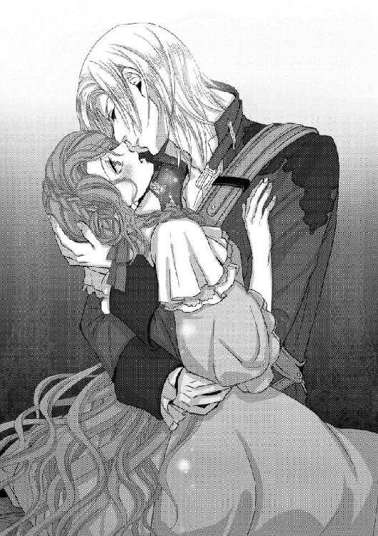
＊
嵐のあと、ラティアの指輪が光り指した東に向かって、シルディーン号は進む。
その途中には船にとって補給場所となる比較的大きな港があって、海ゆく船が立ち寄り、食料や水を手に入れる。それは海賊たちも一緒で、襲った商船から奪った荷物を換金するための、おおっぴらにはできない市場もあるのだという。
「宝石や絹は、食えないからな」
交差舵に座っているクルサイドが、大きな声で叫ぶ。ラティアは後檣につかまり、交差舵のクルサイドを見あげては見つめ、また少しずつ近くなっていく陸地を見つめていた。
「茶も、薬も、砂糖も――全部換金すれば、相当になる。今夜は陸地で無礼講だ！」
「ぶ、無礼講......」
特別なことのないときには八時消灯の彼らだけれど、以前のようにひと仕事終えたあとの騒ぎっぷりはラティアがたじろぐほどだった。あのような騒ぎが、また起こるのか。しかも無礼講などという言葉がつくということは、あれ以上の――まったく想像がつかなくて、ラティアは唖然と目を見開く。
「おまえも、久しぶりに揺れないところで眠りたいだろう？ 今日は、ふかふかのベッドで眠らせてやるぞ！」
船に乗っている間は硬い寝台で、どれほどに波が穏やかでも揺りかごの中にいるかのようだ。慣れないうちはよく眠れなかったけれど、船に乗ることそのものには馴染んでいたせいか揺れはそう気にならなくなった。しかし、寝台が硬いことには今でも閉口している。ふかふかのベッド、という言葉に、ラティアの胸は躍った。
「食いものも、食いたい放題だぞ！ 乾パンなんて囓らなくていい、噛む必要もないくらい柔らかいパンと、とろとろのシチューと、新鮮な野菜の煮込みに、こんがり焼いた肉だ！ 潰してそのままの肉、塩漬け肉なんかとは比べものにならないぞ！」
思わず、ラティアは生唾を呑んでしまう。ラティア自身は特に舌が肥えているつもりはなく、海賊たちの常食に食べにくさは感じても、味に不満を持つこともなく食べていた。
それでもやはり、生まれてから王宮で毎日食べていた食事とは比べものになるはずがない。クルサイドのあげる料理の数々の味を想像して、つい腹まで押さえてしまった。
「きっと、ラティアの口にもあう。金鶏亭の女将の料理は、王の食卓に載せても恥ずかしくない味だからな！」
朝の食事はしっかりと摂ったはずなのに、ラティアは新たな食欲を感じてぐっと腹を押さえる。そんなラティアを見下ろし、クルサイドはその心中を読んだように笑った。
「その港には、どのくらいで着くの？」
「明日......風次第では明後日か。まぁ、そう長くは待たせない。兄弟たちも楽しみにしてる」
忙しそうに甲板を走りまわる者たち、帆桁に登っては帆や縄を見る者たち、檣楼で遠眼鏡を使っている者、皆がどこか楽しげなのはそのせいなのか。彼らの仕事が手早いのはいつものことだけれど、久々にふかふかの寝台で寝られるということが、彼らに勢いをつけているのかもしれない。
港によっては海賊船を入れず、国の海軍が守っているところもある。クルサカート王国の港も、そこが海に囲まれた国だからこそ船の出入りに厳しく、どれほどに小さな港にも、厳重な警備体制が敷かれていた。
しかし逆に海賊たちが持ち込む戦利品を商売の糧とし、また彼らが飲み食い、歓楽に興じて落とす金で潤っている港もあるのだ。
「この方角にあるのは、バルムアント共和国のアディーリャ港だ。あそこのやつらは、人がいい。むやみに海賊を恐れたりしないから、海賊のほうもそれ相応の礼儀を取る。こっちだって、悪魔じゃないんだ。歓迎してくれるなら金も落とすし、何かがあったときやつらを守ってもやる。それが、義理ってやつじゃないか？」
バルムアント共和国のことは、ラティアも聞いたことがあった。海賊などという無法者を嫌っていた父王は海賊を受け入れるその国のことをよく思ってはいなかったし、ラティアもそんな父のもとで育ったのでバルムアント共和国は海賊同様のならず者たちの集まりのように考えていた。
しかしアディーリャ港には違う考えを持つ者たちがいるのだ。そこは海賊を歓待し、船に必要な木材や縄なども常に豊富に用意されているという。
おまけに船のうえでは味わえないさまざまな歓楽のための店がずらりと揃っているとなると、一時の利益のためにこの町を荒らそうという海賊はいないらしい。
そんな国に、行くことになるなんて――しかも、海賊船の一員として。このような日が来るとは思わなかったと改めて感じながら、ラティアは後檣に寄りかかったまま、青く広がる海原を見つめていた。
（エイドゥを薔薇の守護者にすること......あんなふうに、断わってしまったけれど）
風に吹かれながら、ラティアはそのことを考えていた。この間、彼に応えられなかったことは胸に重くのしかかっている。かといって、どうしても彼の望みは叶えられないと思う。
（わたし......クルサイドにこそ薔薇の守護者でいてほしい、なんて）
ラティアの守護者でなくなったクルサイドは、ラティアのことを構いもしないだろう。船から降ろされるかもしれない。それは父王の指輪を捜す手段を失うという以上に、ラティアにとって辛い想像だった。
（どうして......、なのかしら）
どうして、そのことが辛いのか。薔薇の守護者がクルサイドでなくてはいけない理由、そうであってほしい理由――それがわからなくて、ラティアは混乱している。エイドゥの申し出を断わってしまったからこそ、よけいにラティアの心は乱れ、どうすればいいのかわからなくなっている。
「おい、そんなに腹が減ったのか」
交差舵のうえから、クルサイドが大声で怒鳴った。ラティアは、はっと顔をあげる。自分が腹を押さえたままの恰好であることに気づき、慌てて手を解いた。
「違うわよ！ そういうのじゃない！」
「なんだ、じゃあ痛いのか？ でも、腹痛くらいでぴぃぴぃ言うやつはここにはいないからなぁ。薬なんて、あるかどうか」
「痛いのでもないわ！ どっちでもないって！」
見あげる高さにいるクルサイドに届くように大声をあげるラティアに、クルサイドはそれよりももっと大きな声をあげて笑う。
「それならいいんだけどな！ あんまりしけた顔、すんな」
交差舵のうえで両足をぶらぶらさせながら、クルサイドの目は遠くを見ている。ラティアの目にはただただ広がる海しか見えないけれど、そのうち陸地の影が見えてくるのだろう。
彼の脚の傷は、もう痛まないようだ。しかし再び同じような、もっとひどい怪我をすることにならないとは限らない――彼が、薔薇の守護者だから。
クルサイドを薔薇の守護者から解放しなければ――思えば思うほどにラティアは迷い気を乱し、いったんは柔らかい寝台や美味な料理の話で沸き立っていた心が沈んでしまう。
ラティアは今度は胸を押さえていて、交差舵のうえのクルサイドが呑気な表情でそんなラティアを見下ろしていることに気がついて、思わずそっぽを向いた。
シルディーン号は、港に近づいていく。慣れた調子で迷わず接岸しようとするところから、シルディーン号がこのアディーリャ港の常連であることがわかった。
ラティアの目にも港の賑わいがはっきりとわかるほどに近づいたところで、シルディーン号は海賊旗を降ろす。その代わりに青い旗を掲げ、寄港したい旨を告げるのだ。
ラティアの見たところ、停泊している船は数隻だった。しかもいずれも探検船や軽量帆船のような小さな船ばかりで場所は空いており、シルディーン号のような大型快速帆船でも優に受け入れられるだけの余裕があるようだ。
ゆっくりと、シルディーン号は港に近づいていく。港からは小さな短艇が出て、シルディーン号のものであるそれには幾人かの海賊が乗っている。彼らは顔の前で両手を大きく振り、シルディーン号を押しとどめるような仕草をしていた。
「どうしたのかしら......」
短艇の櫂は、驚くほどの速さで漕がれている。またたく間に短艇はシルディーン号に横づけし、待っていたように下ろされた縄梯子を伝って、船員があがってくる。
「だめだ、逃げろ！ ジグールド王国の海軍兵が待ち構えてる！」
「なんだと!?」
明らかに、海賊たちは焦燥している。海軍に追われ戦闘になることにも慣れているはずの海賊さえも顔を真っ青にして、あがってきた海賊たちに目を向けていた。
ラティアは、はっと港のほうを見た。先ほど見たときは気がつかなかった、目を凝らせば倉庫のあちこちに、黒い官服をまとった男たちが身を隠すように立っている。
彼らは手に手に、大きくて長い銃を構えていた。近衛兵のもつ銀色の地に金と宝石の装飾の施された飾り銃を見慣れたラティアの目には、まさに人を傷つけ殺すためだけの恐ろしい道具にしか見えなかった。
甲板にあがってきた男の胸倉を掴まんばかりの勢いで、クルサイドは叫んだ。
「寄港の使いは送ったはずだろう！ それに、バルムアント共和国は中立......ジグールド王国の軍の侵入なんか、認めないはずだ！」
「それが、ジグールド王国側が強行したらしくてな。なにがなんでも、シルディーン号を......クルサカート王国の王女を引き渡すように、と」
「......！」
彼らの怒号を前に、ラティアは思わず後ずさりした。彼らは、ラティアを捜しているのだ。アディーリャ港に、ラティアを攫ったシルディーン号が寄港することを事前に調べ、ああやってラティアをつかまえるために待ちかまえているのだ。
ラティアは、とっさに踵を返す。主檣の陰に隠れ、少しだけ目を出して港のほうを見る。ジグールド王国海軍の者と目が合ったような気がして、慌ててまた檣の後ろに隠れた。
「撤収だ！ 取舵、左回頭！ 下手回しだ！」
クルサイドは船尾楼甲板に駆けあがり、誰にも聞こえるような大声で叫ぶ。船員たちは弾かれたように動き出し、短艇もたちまちのうちに引きあげられる。シルディーン号は大きく波を立てると半円を描いて旋回し、アディーリャ港に船尾を向けた。大三角帆は風をいっぱいに受けながら、どんどんとアディーリャ港から遠ざかっていく。
シルディーン号は、大型快速帆船との名に恥じぬ素晴らしい速度で港をあとにした。港はあっという間に遠くなる。
「......あ！」
ふくろうほど目は利かずとも、ラティアの目にはっきりと映ったものがあった。大きな体の、上着も上衣も脚衣も、ばらばらの色あいのみすぼらしい衣を着た男だ。彼は港の倉庫の陰に立って、きょろきょろとまわりを見やっている。
「ティバル......！」
シルディーン号に乗ったばかりのころのラティアを襲おうとし、無人島に置き去りにされた男だ。いったいどうやって、あの島から脱出することができたのか。池に落とされただけだから、自力で這いあがったのかもしれない。そしてシルディーン号と同じように水や食料を求めて立ち寄った船に、救ってもらったのだろう。
ラティアは、はっとクルサイドを見た。彼も、ティバルの姿に気がついているのだろう。目を鋭く尖らせ、港のほうを見やっている。
「アディーリャ港に手がまわってるなんて......ラティアさえこっそり、姿を見せなければ、ばれないはずだったのに」
リウ・ミリアニス号を襲ったのは小型快速帆船で、このシルディーン号ではなかった。だからヴォルグローの追っ手も、ラティアがシルディーン号に乗り換えているとは知らなかったはずだ。しかし、すでにばれてしまっている。それはティバルの密告のせいにほかならない。
「ティバルの野郎......！」
懸命に舵をまわしている航海士の姿、シルディーン号が再び海に乗り出すさまを見つめながら、クルサイドはぎりっと奥歯を噛みしめた。
「しかし、あの人数......気づかれる前に逃げられてよかったが、ジグルード王国のやつらは港の掟を枉げさせてまで、ラティアを捜してやがる。もう、なりふり構わずって感じだな」
港が見えなくなるほど遠くに船は走り、勢いある海風にばたばたと薔薇色の髪を煽られながら、ラティアは主檣の陰に隠れたままだった。
「このまわりは、危ないかもしれん......どの港に、ジグールド王国の手がまわっているかしれない。シルディーン号にラティアが乗ってることも、ばれちまった。もう迂闊に、接岸はできない......」
「だが、船長！」
叫んだのは、ひょろりとした細身の「ナイフ」と綽名されている男だった。その体型がナイフのようだというのもあり、同時にナイフを使わせれば天下一品、小さな細短剣ひとつで襲いかかってくる敵船の船員を次々に薙ぎ倒すのだ。
「水がもうない！ アディーリャ港をあてにしていたから、みんな大盤振る舞いで飲んだり体を洗ったりしちまったぞ！ 食いもんも、残ってるのはいつ焼いたかわからん乾パンくらいだ。金や宝石はあっても、食えやしない。ほかに、どこで食いもんに換えるんだ？」
「西に向かうか？ もっと向こう......フェイルディーの港はどうだ？ アディーリャほどは大きくなくても、ほどほどにゃ補給もできるぞ？」
声をあげる船員たちに、遠のいていくアディーリャ港をじっと見つめながら、クルサイドは呻くように言った。
「......いや、アディーリャ港に手がまわってるってことは、ほかのどこにも、ジグールド王国の目が......ヴォルグロー王の触れがまわっていると見ていいだろう。言葉が通じる近隣で、シルディーン号を受け入れてくれる港はない......」
海賊たちの怒号が聞こえる。嵐の始まりかと思うような凄まじい声に船が揺れたような気がして、ラティアは主檣にしがみついた。
「こんなところにまで来ちまって、あそこを逃したらほかに港はないぞ？ 東にはずっと海が続くばっかりだ。海図には、小さい島があるばっかりで」
「宝石なんか、食えやしないのに！」
誰かが、がんっ、と檣を蹴った。その程度で揺れるような大型快速帆船ではないけれど、嵐の波に呑まれて揺れたかのような勢いに感じられて、ラティアは改めてぎゅっと主檣に抱きつく。
（ティバルがジグールド王国側に......密告したのね。クルサカート王国の王女がシルディーン号に乗ってることを。そしてわたしをつかまえるため......ああやって、兵士を配備して待ちかまえてるんだわ）
ラティアが檣にしがみつく手が、震え始める。ラティアが乗っているがゆえに、シルディーン号はアディーリャの港に入ることができない。それどころか、ほかのどの港にもヴォルグロー王の手がまわっているとなれば、いったいどうすればいいのか。
「......もっと、東に行くしかないな」
唸るような、しかしはっきりとあたりに響き渡る声で、クルサイドは言った。
ばさ、ばさっと帆が揺れる。縮帆するはずだった帆は再び風を孕み、着くはずだった港からどんどん遠ざかっている。ある者は怒声をあげ、ある者は不安そうに港を見やり、港にあがって得るはずのものだったものが手に入らなかった不安を嘆いている。
「東の、海図の先にはもっと、別の港があるかもしれない。海賊たちの誰もが行ったことのないような......もっと大きくて、もっと商品を高く捌ける港、大きな国が」
東――嵐の夜に現われた指輪の薔薇の光、虚空を飛ぶ鷹が示した方向。シルディーン号は確かにそちらを目指していたのだけれど、しかしバルムアント共和国よりも東を示した海図はないという。
「そんな、かもしれない、ってだけで動けるわけないだろう!?」
クルサイドの言葉に、大柄な海賊が声をあげた。
「どんな場所、何が待ちかまえているかわからんのだぞ!? シーサーペントの出るような場所だったらどうする!? 島も何もなくて、ずっとずっと海が続いてて、端っこまで行きついて、世界の向こうに流れ落ちたらどうするんだ!?」
そうだ、そうだ、とさまざまな声が唱和する。
「海の端っこから落ちたら、地獄に真っ逆さまだっていうじゃないか！ いくら海賊稼業をやってるからって、自分から地獄への道に突っ込むなんて、御免被る！」
「――兄弟！」
波の音、風の音を貫いて、クルサイドの鮮やかな声が鋭く響いた。
「知らない場所への、冒険。それが海賊やってる醍醐味だろうが！」
腕を組み、東の方向を睨みつけながらクルサイドが叫んだ。
「自分たちで海図を書き換えるんだ。新しい世界を見に行く！ これは、そのための好機と思えばいい！」
「好機、って......」
東のほうを睨みつけるクルサイドに、不安の声があがる。
「そりゃ、危険を恐れてちゃ海賊なんかできない。でも俺たちは、アディーリャ港をあてにしてたんだぞ!?」
「水も食いもんもないんだ。この先、どうやって航海するっていうんだ！」
「もし、なかったらどうするんだ！ 小島のひとつもなかったら!? 乾き死にを待つのなんかいやだぞ！」
クルサイドは目だけを動かして、声をあげる者たちを見やっている。彼の厳しい視線に海賊たちが黙ったことに、クルサイドの船長としての威圧を感じたけれど、それで水や食糧の問題が解決したわけではない。
「とにかく、東に向かう。場所を変えれば、新しい獲物もいる。ないなら、奪う。それが俺たちじゃないか？」
はっきりと、響き渡る声でクルサイドは言う。
ざわり、と船のうえがざわめいた。それが意外なことを聞いた、思いもしなかったと驚くような調子だったことに、ラティアは主檣の陰からそっと、少しだけ足を踏み出した。
「そ、そうだな......」
誰かが、戸惑うような声をあげた。
「ないなら奪えばいい......東にだって、獲物はいるだろうしな」
「水だけじゃない、珍しいものが手に入るかもしれない。今までにないお宝が見つかるかもしれん」
「食いもんだって、食べたことのないようなやつかもな。酒だって、聞いたことのない国の珍しいもんかもしれない」
海賊たちは、クルサイドの言葉に同調したようだった。しぶしぶ、という雰囲気ではあったが、彼らがほかにあてにできるものはない。
「ラティア！」
明るい声が飛ぶ。はっとそちらに顔を向けたラティアは、弾けるようなクルサイドの笑顔を見た。
アディーリャ港に上陸することができなかったのは、ラティアのせいだ。そのことにどうしても引け目を感じて出ていくことのできなかったラティアに向かって、クルサイドは陽気に言った。
「おまえは薔薇姫で、海の娘だろう？ 俺たちを、もっといいものがある場所に導いてくれるんだろう!?」
「え......、ぁ、ええ......」
実際、ラティアにそのような力があるのかなど知れない。ラティアはクルサイドの言葉に曖昧にうなずき、彼のかたわらの太い腕をした海賊は、疑うような目でラティアを見やっている。
「もっと帆を張れ！ ガフも、スプリットも、全部だ！」
叫んだのは副船長だ。クルサイドの言葉に今の状況を受け入れることにしたらしい皆も、いきなり弾け飛んだかのように持ち場に散った。船尾楼甲板のうえのクルサイドは腕を組んで、彼らの動きをふたつだけの目ですべて見届けているようだ。
たちまちあちこちで滑車のまわるぎりぎりという音があがり、新たな帆が張られる。接岸のために畳まれていた帆も改めて張られ、シルディーン号はますますの速度で走り始めた。風が強くて、髪を攫われ頬を叩かれるのが痛いほどだ。
目に入ったのは、忙しく働く海賊たちを見下ろし波音を破る大声で指示を飛ばすクルサイドだ。目に入った彼の姿に、思わず見とれた。何ひとつ見逃さずに声をあげる彼の姿は、太陽と月を食らう獰猛な狼の昔語りを思い出させる。
まるで魔法にでもかかったかのように、シルディーン号は海を駆けた。嵐の夜に薔薇の指輪の光が指し示し銀色の鷹が案内するように舞った東に向かって、風のごとく疾走し続ける。
航海士が管理している海図からは、東にはずれた。地図に乗ってない海を渡るにおいて帆はいくつか畳まれ、速度は落とされる。うっかりと浅瀬に乗り上げないとも限らない。群れをなす鮫の巣窟に突っ込んでしまわないとも限らない。
夜ともなるとますます見張りの目だけが頼りだけれど、すでにシルディーン号では、水も食糧も使い果たしている。真水の池のある島、獲物になる動物のいる島を探して見張り以外の者たちも目を光らせていた。
それが、もう三日。わずかに残っていた水も飲み干し、ときおり気まぐれに降る雨を帆布に受けるくらいしか水を手に入れる方法はない。食べものは樽の底に残っていた象虫の食いあとだらけの乾パンで、石のように硬いそれをどうにか囓った場所からは、いきなり六本足の黒い虫が這い出してくる。
その程度で海賊たちは悲鳴をあげたりはしないけれど、決して美味い食べものではないことは事実だ。ラティアといえば、彼らが割って虫がいないことを確認してくれた乾パンを少し囓るくらいが関の山。象虫など出てきては、きっと気絶してしまうだろう。
元気なのは乾いた風をいっぱいに孕んだ帆、船を揺らす大きな波だけだ。海賊たちは日に日に疲弊している。大海原はどこまでも続き、輝く青さが憎らしいほどに、見張りの遠眼鏡にさえも何も映らない。
「腹減った......」
そう唸り、甲板の隅に座り込む者がある。
「咽喉、渇いたよ。雨降らないかな......」
そうつぶやいては、青々とした雲ひとつない空を見あげている者もいる。ラティアの知っている、シルディーン号の生き生きとした姿はそこにはなく、皆力なく空を見あげ海を見つめ、船に揺られているばかりだ。
忙しいのは、船長のクルサイドに副船長、そして航海士。なにしろ、海図にはない海路を進んでいるのだ。常に羅針盤と天測機を手に、新たな航路を何も書いていない大きな羊皮紙に書き込んでいる。逆に彼らは虫食いだらけの乾パンを囓る暇もないようで、それはそれで彼らを消耗させているはずだ。
ラティアのできることは、甲板の隅に座り込んでいることだけだ。皆が東に向かうことになった理由を思うと、わずかな雨水をわけてもらうことも憚られ、ただおとなしくして体力の消耗を抑えるしかない。
ラティアさえいなければ、皆がこんな目に遭うことはなかった。道しるべもない大海原に、頼りない小舟のようにさまようことはなかったのだ。
「......あ」
ふと、頭をよぎったことにラティアは小さく声をあげる。船尾甲板の隅、立ちあがると大きく息を呑んで声をあげた。
神の吐息が花人を生み落とし、尊き命は地に満ちる
濁夜に輝く月灯の世界が、聖なる鷹を生み出さん
追え 北へ南、西、東へ
薔薇の一族に伝わる歌だ。以前にもこの歌をうたったとき銀色の鷹が現われて、ラティアたちを導くように東に向かって飛び去った。夜は月が明るく指輪は光らないけれど、歌をうたえば鷹が現われるかも――ラティアは天空を見あげながら、渇いた咽喉で懸命に歌を続けた。
「やかましい！」
ラティアの歌声を遮ったのは、荒々しい怒声だった。思わずびくりとして、その声の方向を見る。険しい顔をした、頬の傷の目立つ海賊がラティアを睨んでいる。
「下手な歌、聴かせんな。いらいらするだろうが！」
「ごめん、なさ......」
「呑気に歌なんてうたってる場合かよ。こちとら、食べもんどころか飲む水もなくて、座ってるのもやっとなのに」
「お姫さまは、体のできが違うのか？ それとも、できが違うのはこっちのほうか？」
罵声を浴びせてくるひとりが、自分の頭を指差す。自分の行動が場違いなことをしたラティアを批難しているのだということは、空腹と渇きに鈍っているラティアの頭でも理解することができた。
「そういうわけじゃないわ......。気に障ったら、ごめんなさい」
「ああ、多いに気に障ったよ」
別の海賊が、唾を吐く仕草でそう言った。しかし唾が甲板を汚すことはなかった。彼の口は、それほどに渇いているのだ。
「呑気に歌をうたってられるなんてな。あんた、こっそりなにか、食べてるんじゃないのか？」
「何しろ、大切な人質のお姫さまだからな」
「でも、こいつのせいでアディーリャ港には入れずに、こうやって海図もなくさまようことになったんだ......」
少年といっていいほどの年ごろのひとりが、立ちあがった。上衣や脚衣から出ている手足は細く、乾パンのかけらなど彼にはとても足りないのだということが見て取れる。
「こいつのせいだ！」
きん、と響く悲鳴。まわりの者が、皆ラティアと少年を見た。少年は拳を振りあげている。
「こいつがいなかったら......、クルサイドを守護者だかなんだかにして、くっついてなかったら、俺たちはこんな目に遭わずにすんだ。今ごろ美味い酒に食いものをたらふく食べて、柔らかいベッドで寝られてたんだ......！」
ラティアは低く息を吸う。彼に同調する声はないものの、たしなめる声もない。食べるものもないところに大声を出したことで、少年はまるで一気に甲板を駆け抜けたようにはぁはぁと肩で息をしている。
「こいつが、よけいなことをしたから......こいつのせいだ！」
誰も、少年をとめない。同じように声をあげないのは、皆も空腹と渇きでその元気がないからなのか、それともラティアの身の危険にはクルサイドを巻き込むことになるからなのか。それはわからない。しかし誰の目にも、できうることならラティアを一発でも殴ってやりたい、そんな鬼気を帯びていた。
「わからないことを言うのではありません」
聞き慣れた声が、穏やかにそう言った。ラティアは、はっと振り返る。そこに立っていたのはエイドゥで、彼の冷静な表情にラティアはほっとした。
「誰かのせいだ、などということはありません。いろいろな事情が絡みあって、私たちは今こういう状態にあるだけです」
甲板の皆を見まわしながら、エイドゥはゆっくりと続けた。
「大嵐に遭って船が沈没する、敵船と戦って命を落とす――どんなことだって起こりうる。皆、いつ死ぬかわからないと知ったうえで、海賊になったのでしょう」
エイドゥの言葉に、少年は力なく手を下ろした。とたん、立っていることも辛そうに座り込んでしまう。危機を孕んでいたまわりの者たちも、まったくの正論であるエイドゥの言葉を前に恥じらうように、そっぽを向いてしまう。
「仮にこのまま飢え死にしても、それが運命です。誰のせいでもない。誰かのせい――それが海神の心だったとしても、恨むなどお門違いでしょう」
甲板のうえは、しんと静まり返る。中にはひと言も言い返す余地のないエイドゥの言葉に腹を立ててか顔をしかめている者もあるが、先ほどの喧噪は消え、あたりは風と、波の音ばかりになった。
「薔薇姫。中に入っておきなさい。肌が灼けてしまうでしょう」
どこか冷たく、エイドゥは言った。言葉そのものはラティアを労っているのに、しかしもの言いは冷ややかなのだ。
「でも......」
ラティアはエイドゥの口調に戸惑い、同時に船室の状態を思い起こしてためらった。
船室の中は、耐えられないほど暑いのだ。甲板にもじりじりと陽が照りつけるけれど、陰で小さくなっていれば海風が涼ませてくれる。しかし船室は窓も小さく熱が籠もってしまい、じっとしていられないほどなのだ。
「あなたが姿を見せていると、同じようなことが起こりかねません」
エイドゥはそっと、ラティアの耳に声を注ぎ込んだ。
「みんな、気が立ってますから。あなたのせいではなくても、何かと理由をつけてはあなたに咎を押しつけたがる者がいる。それはあなたが薔薇姫で、クルサイドが守護者だから。どうしても仕方のないことなんです」
確かに、いくらあの鳥を呼びたいからといっていきなりうたいだすのはよくなかった。これまでのように皆が元気に働いているときになら癒しになったかもしれないけれど、身体的にも精神的にも疲弊しているところに突然歌など聴かせられては、苛立っても無理はない。
「あなたは、あなたにできることをしようと思ったのでしょう？ そのことを、批難しようとは思いませんよ」
しゅんとしたラティアにかけられた言葉は優しいけれど、どこか慇懃無礼だ。蒸し暑い船室に入ろうとしてその暑さに辟易したものの、これ以上エイドゥとともにいて彼の冷ややかなところを見れば、どうしても罪悪感にさいなまれてしまう。
「ただ、私たちは王宮の騎士ではないのでね。こういう状況では、あなたはおとなしくしているほうがいいでしょう。それにあなたも、あの鳥を呼び寄せるほどに力強くうたうことなんてできないでしょう？」
「......ええ」
エイドゥの言葉に答えるように、ラティアの腹が「ぐぅ」と鳴った。ラティアは慌てて腹を押さえ、そんな彼女を前にエイドゥはくちびるの端を持ちあげて笑う。しかしそれは、ばかにした笑みではない。冷ややかな中にも、どこか複雑な感情が入り交じっているような――。
「暑いのはわかりますが、船室にいてください。さっきのことで血気を煽られて、あなたを襲おうと思う者がいないとも限りませんから」
「......クルサイドに迷惑がかかっても、いけないものね」
クルサイドは、副船長や航海士とともにこの未知の海路の海図を作るために忙しい。仮にラティアが殴られかけでもしてクルサイドが仕事の手を離すことになってしまっては、シルディーン号の船員の誰にとってもよくないことになる。それこそラティアが避けたいことだ。
「わかってくださったんなら、船室にいてくださいね。暑いのは我慢して......」
「――だ！」
エイドゥの言葉をさえぎるように、船中に鋭く響いた声がある。この状態で、大声を出せる力がある者がいるのか。ラティアは今入ったばかりの船室の扉を振り返り、エイドゥは弾かれたようにそれを押し開くと飛び出していった。
「船だ！ 同業者だぞ！」
見張りの声が、檣楼から響き渡る。甲板で萎れた植物のようだった海賊たちは、今までの力のなさが嘘であったかのように勢いよく立ちあがった。
ラティアも甲板を走り、舷縁に手をかける。身を乗り出して見た先に、目に入ったのは船の影――ここからでは船だということしかわからないけれど、見張りの遠眼鏡には向こうの船の海賊旗が見えたに違いない。
海賊たちは、一気に力を得たようだった。あの船を襲い、水を、食料を――。戦いそのものには賛同できなくても、あれが彼らの渇きと飢えを満たす救いの手であるのならば、ラティアにとっても歓迎すべきことだ。
「取舵いっぱい！ あの船を追う！」
響いたのは、クルサイドの声だ。彼はいつの間にか船長室から出てきていて、船尾楼甲板に立っている。彼の手は、まっすぐに船影に向けられていた。
喚声が響く。船のうえは、一気に活気に満ちあふれた。ラティアは慌てて甲板の端に身を寄せて木箱の陰に隠れ、海賊たちが水を得た魚のように働き始めるのを見つめていた。
近づくにつれ、敵船はシルディーン号よりもひと回り小さい大型帆船であることがわかる。大きさも速度もシルディーン号のほうが上ではあるが、船は大きさや速度だけでその価値が決まるものではない。すべては、操る人間次第――敵船の船長がどのような人物であったとしても、クルサイドが引けを取るとは思えない。それでも油断は禁物であり、ラティアは固唾を呑んでなりゆきを見守っていた。
「来るぞ！」
クルサイドの声が響く。はっと顔をあげると、彼は船剣を手にしていた。いきなり白兵戦にはなるまい。あれは仲間を鼓舞するために、またその刃の輝きを合図砲のように使うつもりなのだろう。
「斉射、用意！」
はっきりと通るクルサイドの声とともに号笛が響き、木材の軋む音がする。大砲の蓋が開いたのだ。すでにラティアの目にも、黒地に白い頭蓋骨を描いた海賊旗が見える位置にまで近づいてきた。敵船も、大砲の蓋を開く。
目視したところ、六門――つまり、両舷十二門。対するシルディーン号は三十門。しかし大砲の数が多くても、当たらなければ意味はない。シルディーン号の砲舵手は腕利きであることをラティアは知っているけれど、敵船の砲舵手が腕の劣る者であることを期待するわけにはいかない。
固唾を呑んで、ラティアは戦闘を見守る。同時に大砲の発射や被弾の衝撃に耐えるために、手近な檣にしがみついた。
「撃て――っ！」
シルディーン号は、敵船の右舷船尾に追いすがる形で左舷の大砲を発射した。ひと息に十五発もの大砲が発される衝撃は凄まじく、ラティアは腕が痛くなるくらいに檣にすがった。
轟音が響く。シルディーン号の大砲は、敵船に当たったらしい。しかしあちらも黙ってはいない、同じように砲弾が飛び、そのうちの一発が甲板に激突し、爆発した。
「ぎゃあああっ！」
複数の者の声が響く。しかしもうもうたる硝煙のせいで、何が起こったのかはわからない。白い煙に巻かれてラティアはしきりに咳き込んだ。
一発を撃てば、もう一発弾を込めて再びの発射には手練れの砲撃手でも五分は必要だ。その間、シルディーン号はぼんやりと待ってはいなかった。クルサイドの大声でシルディーン号は素早く面舵を取り、右舷側を敵船に向ける。これほど大きな船なのにその動きは迅、すでに自分は戦闘の場面に慣れたと思っていたラティアを改めて驚かせた。
クルサイドの、再びの斉射の合図が響き渡ったとき、敵船は左に旋回し、逃亡の姿勢を取っていた。その前檣のもとには、三稜帽をかぶった人影がある。
（あ......！）
その姿に、ラティアは驚いて思わず見入った。身なりや、まわりに幾人もの海賊たちを置いている様子からして、金色の髪をなびかせた人影は船長――しかも女だったのだ。
（女海賊なんて......、しかも、船長。話には聞いたことがあるけど......）
しかし船に乗りたがる女が珍しいように、海賊船に乗っている女はまずいない。それが船長だなんて、彼女の人生にはいったいどういう事情があったのか。
（まぁ......、海賊船に乗っている女ってところは、わたしも人のことは言えないけど）
シルディーン号は、敵船を追った。右舷側からは再びの大砲の発射、それは敵船を穴だらけにし、そこで現われたのはあの鉤つきの縄だった。
すでに互いの乗組員の顔がわかるほどに近づいた敵船の舷縁に、縄をかける。敵船の者たちがそれをはずそうとする前にシルディーン号の船員たちは縄を伝って敵船に乗り込み、始まったのは白兵戦だ。ラティアは息を呑んで、その様子を見やっていた。
先頭で船剣を鮮やかに振るうのは、クルサイド。彼に従い湾曲剣に短剣、細短剣を振りまわし、喇叭銃、短銃の音を響かせる者たちの中にはエイドゥもいる。
漂う硝煙の中に、赤が飛び散った。焦げくさいにおいの中に、血のにおいが混ざる。見慣れたとはいえ残酷には違いないその光景にラティアは固唾を呑み、しかし目が離せないのは、クルサイドの舞いのような剣さばきだ。
それは人を殺すため、我欲を満たすための残虐な行為なのに、まるで彼は人の目を楽しませる舞踏を披露しているかのよう――銀刃が宙を舞い、鮮烈な赤が飛び散って空を飾る。
呻き声が響き、喚声があがり、硝煙が消えたころには敵船の甲板には、無数の倒れた者たちの姿があった。
「......！」
ほとんどが命を落としているのだろう。わかってはいたが、ラティアは思わず目を閉じる。この先、シルディーン号の者たちは敵船から水や食糧を奪い、戻ってくる。それまで彼らの鎮魂のために祈ることは許されるだろうと、ラティアは胸の前で手を組んだ。
「ラティア......！」
声がした。ラティアは、はっと目を開ける。瞳に映ったのは、縄を伝ってシルディーン号の舷縁に手をかけたクルサイド。そして金髪の女海賊がラティアのほうに向けている、輝く喇叭銃の銃口だった。
「きゃ......！」
ラティアは、とっさに身動きができなかった。凍りついた彼女のうえにクルサイドが覆い被さったのと、喇叭銃が火を吹いたのはほぼ同時だった。
「ぐ、っ......！」
体が、甲板にぶつかった。後頭部を打ちつける勢いでラティアを押し倒したクルサイドが、呻き声をあげる。喇叭銃の銃声は二度は響かず、代わりに低くはあるが女性の悲鳴が聞こえた。
「クル、サイド......！」
「怪我、ないか」
顔を引きつらせたクルサイドが尋ねた。甲板にぶつけた部分以外、痛いところはない。ラティアは震えながらうなずき、クルサイドは目をすがめると起きあがった。
「クルサイド、肩......！」
彼の右肩から、血が流れている。弾は掠っただけのようだけれど、上衣はどんどん赤く染まっていく。ラティアは手を伸ばしかけたが、その前にクルサイドはラティアから離れて立ちあがる。
「騒ぐな、たいしたことじゃない」
そう言ってクルサイドは、敵船を見た。金髪の女はシルディーン号の船員たちに取り押さえられている。自分たちの船長を狙ったのだ、彼女はただでは済むまい――ラティアは呼吸を忘れて目を見開き、そんなラティアの前を、クルサイドは傷を負ったことが嘘であるかのように足早に去った。
「怪我......、クルサイド、手当てしなきゃ！」
「だから、たいしたことないって言ってるだろう？」
うるさい虫を追い払うように、彼は言った。以前のラティアならそんな彼に腹を立てていたかもしれないけれど、今は違う。彼のそんな態度が虚勢であることを知っている。以前、やはりラティアが原因で負わせてしまった腿の傷を思い出し、ラティアは立ちあがってクルサイドを追いかけた。
「だめよ、そんなままじゃ荷物だって運べないでしょう？」
鉤つき縄を伝って、シルディーン号の船員たちは、木箱に樽を運んでいる。その表情から、敵船には彼らを満足させるだけのものが積んであったらしい。それには安堵したものの、しかし銃弾を受けたクルサイドが、その肩で荷物を運べるはずがない。ラティアは、クルサイドに取りすがった。
「やめて、お医者さまに診てもらって！ 荷物を運ぶのは、それからだっていいでしょう!?」
「みんなに働かせて、俺だけが診てもらえって？ そんなこと、できるか！」
クルサイドは本当に煩わしそうにそう言い、ラティアを睨む。しかしラティアは怯まず、彼の右腕を握った。
「......っ、てっ！」
「ほら、痛いんじゃない！ お願いだからお医者さまに診てもらってよ！ みんなだって、わかってくれるわ！」
「いいんだよ......、みんなに、心配させるな」
ラティアは、息を呑んだ。じっと、痛みを堪えるクルサイドの鋭い視線がラティアを見つめる。その目から視線が離せず、それでいてどうしようもなくいたたまれなくて、踏鞴を踏んだ。
「そう、......ね......」
ラティアは、一歩後ずさりをした。そんな彼女を見やり、視線を逸らしたクルサイドが向かったのは、船室への扉だ。ラティアの願うとおり、船医のもとに行く気になってくれたのかもしれない。
クルサイドの姿が消え、ラティアはその場に座り込んだ。シルディーン号の船員たちの働きは早く、すでに鉤つき縄ははずされている。
帆が風を孕んで、船は面舵を取る。満身創痍の敵船は逆に取舵を取り、勝利と敗北の明らかになった二隻の船は、どんどんと離れていった。
水だ、食べものだ、と喜ぶ声がする。三日も渇きと飢えに苦しめられていたのだ、戦利品はどんな金銀財宝よりも、彼らにとっての愉悦だろう。
咽喉が渇き、空腹なのはラティアも同じだ。しかしそれ以上に、ラティアを苦しめているものがあった。
（クルサイドに薔薇の守護者でいてもらうこと......、やっぱり......）
ラティアが、彼を傷つける。負わなくてもいい傷を負わせてしまう。見ているだけでラティアまで痛くなってしまうような傷を受け、それでも痛くないと強がっているクルサイドを前にしているのは、あまりにも辛い。
（わたし、とっても悪いことをしてる）
固唾を呑みながら、ラティアは低く呻いた。
（クルサイドに顔向けできないわ......。やっぱり、契約は解除すべきなのよ。解除して......わたしひとりで、どうにか......）
しかし、この大海原をひとりで薔薇王の指輪を捜すことができるわけはない。クルサイドの、シルディーン号の助力がなければ決して叶うことではない。
（でも、でも......このままじゃ、クルサイドにもっと辛い思いをさせてしまう......！）
ラティアは煩悶した。甲板にぺたりと座ったまま、身動きすることができない。ラティアは怪我ひとつ、負ったわけでもないのに。
（でも......、で、も......）
すでに、夕暮れが迫っていた。甲板では戦利品が広げられ、海賊たちが大はしゃぎをしている。いつの間にか、クルサイドもその中にいた。
右肩には白い布が巻かれていて、血が滲んではいるものの問題なく動かせているようだ。ちゃんと船医に診てもらったのだろう。傷自体もそれほどひどいものではなかったらしいことがラティアを少し安心させはしたものの、それでも彼に対する罪悪感が消えるわけではない。
（どうして......？ たったあれだけのことじゃない。契約の解除なんて、簡単なこと）
それでも、とラティアの体は動かない。クルサイドの無事を確認しても立ちあがることすらできないのは、女海賊に喇叭銃で狙われた恐怖からばかりではないことは、ラティア自身よくわかっていた。
（でも......、クルサイド......、クルサイド......！）
胸のうちで叫びながら、ラティアは座り込んでいた。胸が痛いほどに鳴り、指先が震える。こうなったのは、初めてではない。クルサイドを解放しなければ、守護者の契約を解除しなければ――。
そう思うたびに、ラティアの心と体はこういった反応を示す。ラティアにはその理由がわかっていて、そしてわかっていなかった。
（いや、なの......！）
甲板では、大騒ぎが続いている。今夜もまた、八時消灯の掟の例外の一夜になるのだろう。
シルディーン号は、東に向かう。
広大な海原で出くわした大型帆船は、シルディーン号がほしくてたまらなかったものを積んでいた。シルディーン号にある海図よりもさらに東を包括した、大きな地図だ。
今までシルディーン号が縄張りとしていた西域の海の向こうを含む、広大で範囲を網羅しているその海図には、ぽつんぽつんと小島があるばかりだった。あの大型帆船に出会わずにあのまま東の海をさまよっていれば、餓えや渇きで死人が出ていていたかもしれないと思うと、ぞっとする。
「見たところ、宝石なんかを売れるような港はなさそうだが、とりあえず食料や水の確保には困らなそうだな」
「それに、この先にももっと海は広がってる。これらの島々で補給をして、地図の続きを書きあげていこう。うまいこと行けば黄金でできているという国にたどり着けるかもしれないぞ」
船長室にて、船長、副船長、航海士が頭を突きあわせ、羊皮紙を広げて興奮気味に話しているのを、ラティアは扉の陰から見つめていた。
「黄金の国！ 屋敷の屋根も壁も、廊下も手すりも何もかも黄金でできてるってな！」
「屋敷を黄金で飾り立てるだけでは飽きたらず、歯にも黄金を嵌めているらしいぞ。そうすると、歯痛にならないんだってな」
船長室での賑わいは、甲板での大騒ぎと同様だ。奪った酒に食べものは餓えた船員たちを満たすのに充分だったらしく、誰も彼もが上機嫌だ。ラティアがうたったとき、歌なんて、と殺されてしまうかと思うほどに激しく責められたことが嘘のようだ。
彼らに交ざることはやぶさかではない。しかしラティアの目は、どうしてもクルサイドの右肩に向いてしまう。
敵船の女海賊の喇叭銃に狙われた傷。彼の右腕は問題なく動いているようなので本当にただのかすり傷だったのかもしれないけれど、ラティアはどうしても考え込んでしまう。
もっとひどい傷を負えば？ この船の海賊たちの中にも多いような、目や腕、足のない体になれば？ 負傷は海賊としての箔だと彼は言うかもしれないけれど、ラティアにはとてもそう思えない。彼は、薔薇の守護者だから怪我をするのだ。そうでなければ、あれほどの剣遣いを見せる彼がそうそう怪我を負うことなどないだろう。
怪我で済めばいい。――死ぬ、ということもあり得るのだ。そうなれば、薔薇姫であるラティアは新たな薔薇の守護者と契約をする必要に迫られる。
（クルサイドじゃない人を、薔薇の守護者に......なんて）
夜は、ラティアの心のようにどんどんと深くなる。甲板のあちこちに角灯が灯され、無礼講の宴が始まっていた。今までの鬱憤を晴らすかのように騒ぐ海賊の声は、船長室にまで聞こえてくる。
「ラティア」
声をかけられて、びくりとした。しかしラティアは、自分から船長室に向かったのだ。きゅっと口もとを引きしめて、ラティアは言う。
「......あの......、薔薇王の指輪を捜す、手がかりなのだけど」
ためらいながら、ラティアは言った。
「伝承の、歌。あの歌詞に、意味があるんじゃないかと思うのよ」
「歌詞の意味だと？」
クルサイドは、訝しげな顔をした。その表情に少し怯んでしまったものの、ラティアは懸命に顔をあげて続けた。
「歌詞の意味......一緒に考えてもらえないかしら。あなたの知恵も貸してくれれば、助かるのだけれど」
「そうだな。まぁ、中に入れ」
ラティアはクルサイドに招かれ、船長室の中に入った。あまり話したことはないけれど、顔は覚えている副船長と航海士の前に立つ。
「名前、紹介していたか？ こっちが副船長のカーリルメア。こっちは航海士の、ローディエルだ」
「あの......ティスラティア・ディスフォーン・ゾエ・クルランシーです」
顔はもちろん知っているけれど、名を知るのは初めてだ。ラティアは正式な自分の名を名乗り、ドレスをたくしあげて丁寧に挨拶した。
「ああ、そんな堅苦しいのはいらん。こいつがこの先、東の海の鍵を握っているかもしれないからな」
カーリルメアとローディエルはうなずいた。ふたりとも人見知りなのか、それとも女が船長室に入ることに戸惑ってか、固い表情を隠そうとはしない。
「あの、歌だ」
歌と言われれば、ひとつしかない。ラティアは息を吸い、最初の一節を紡ぎ出した。
＊
敵船から奪った海図は、羊皮紙を継ぎ足されてさらに東に広がっていく。
その敵船から奪った棹銅に子安貝、金細工に漆喰細工、真綿、紙、紅茶に緑茶、さらにはラティアを攫ってからこちら、幾隻もの船を狙いすでにごっそりと積み込んだ金貨に銀貨、宝石に陶磁器の数々は、シルディーン号の船倉に眠っている。
餓え、渇いていたときは食えもしないと罵られていたそれらを金に換えるための港はいまだ見つかっていないけれど、海図に載っていた小さな島々、また新たに見つかった島では水も食糧もシルディーン号の船員を満たすために充分な量が手に入り、今は誰もが腹くちく満たされていた。
ざわり、ざわりと風の吹く夜夜中。空にはきらめく満天の星。波は穏やかに船体を叩き、シルディーン号は未知の海域を、穏やかに東へ東へと進んでいる。
ラティアはひとり、舷縁に身をもたせかけて暗い海を見つめていた。天空には月が輝き星が宝石のようにちりばめられていて、暗夜にはほど遠い。それでもラティアは、左手の中指を見た。透明な石は月明かりを反射して輝いていたけれど、薔薇色になる気配はない。空を見あげても銀色の鷹の姿はなくて、ラティアはひとつ息をついた。
「どうしたんだ、ラティア」
後ろから声をかけられた。振り返るまでもなく、クルサイドだとわかる。ゆっくりと振り返ると、舷縁に手を置いて空を見あげるクルサイドの髪がなびくのが目に入った。
「なにか、悩みごとでも？」
「そりゃあ......」
伝承の歌、その意味、そして薔薇王の指輪のありか。悩みごとはたくさんあって、そのことがわかっているはずなのに、クルサイドはどこか楽しげにそう問うてきた。
「なぁ、うたってくれよ。あの、歌。伝承の歌」
クルサイドは金粒銀粒を散らしたような空を見あげながら、彼こそがうたうように言う。
「......さんざん歌ったじゃない。まだ足りないの？」
同時に歌の歌詞の分析については、先ほど繰り返し話した。結局は、なんの確証も得ることはできなかったのだけれど。
「だから、歌詞の意味を分析するとか、そういうのじゃなくて。ただ、歌を聴きたいんだ」
子供のようにねだるクルサイドの言葉が、妙に気恥ずかしかった。だからラティアの言葉は突っ慳貪になってしまい、しかしクルサイドはそれを気にした様子もない。舷縁に肘をついて、笑っている。
「わたしの、歌なんて......。下手じゃないの」
王宮では歌の訓練を受けていたとはいえ、ラティアは決していい歌い手ではない。唱歌の饗宴では歌を披露することもあるけれど、皆の拍手には世辞も多分に含まれていることに気づかないほど、ラティアも世慣れしていないわけではない。
「まぁ、吟遊詩人みたいだとは言わないが。おまえの声は、耳に心地いい」
クルサイドを見つめ、ラティアはどきりと鳴る胸をぎゅっと押さえた。
「それに、今さらだろう？ それこそ、昼間にさんざん聴かせてくれたんだからな。今さら恥ずかしがっても仕方ないだろうが」
「恥ずかしがっているわけじゃないけど......」
彼は星の夜空を見つめていて、ラティアのまなざしには気がついていないようだ。ラティアは胸に置いた手に力を込め、そしてすっと、息を吸い込んだ。
歌が始まる。伴奏を取ってくれるのは、船体を叩く波の音。耳を打つ海風。王宮での磨き抜かれた楽器と奏者の伴奏よりも波と風の音のほうが心地いいと感じると言えば、今は離れている一族の皆は嘆くだろうか。薔薇姫として国中の誰よりも麗しい貴婦人であることを願っていた父は、嘆かわしいと頭を抱えるかもしれない。
それでも波と風は、ラティアの歌声をよりなめらかにしてくれているように感じる。王宮の楽団に導かれてうたうよりも、今ここでたったひとりの聴衆を前にうたっているほうが心地よく、声も咽喉をすべり出るようだ。
麗しき吐息の大輪、こぼれ落ちた夜のかけら。荒々しき海神の咆哮、聖なる鷹。綾なる国を綴りし地図、禁色の輝き、金色の声を響かせる薔薇――。
「きゃ、......っ......!?」
ラティアの歌は、途中で途切れた。いきなり目の前を貫いた光があったのだ。
「こ、れ......」
クルサイドと、驚きの声が重なった。その光はラティアの髪のような薔薇色で、まるで昼間のようにふたりの目の前を照らす。その光は、舷縁にかけたラティアの左手――中指から発されているのだ。
「まぶ、し......」
目を開けていられない。ふたりの声を聞きつけて、シルディーン号の船員たちも駆けてくる。皆、まるで昼間のようなその光に驚きの声をあげていた。彼らが近づくこともできないくらい眩しいのに、しかし熱さはまったくない。涼やかな風と、薔薇色の光。それらがラティアの指輪から放たれている。
「あれ......、なんだ、あれ！」
誰かが、大声で叫ぶ。真昼のような光の中、皆の目を奪ったものを見つけるのは造作もないことだった。
「銀の、鷹......？」
ラティアが両手を広げたほどに大きな翼を翻し、見あげたすぐ上を飛んでいるのは、何度か目にした銀色の鷹。それはやはり銀色の目をしていて、じっとラティアを見つめているように見えた。
鷹は、ぐるりと空を舞った。そして船の進行方向に、大きく翼をはためかせたのだ。
「島だ！」
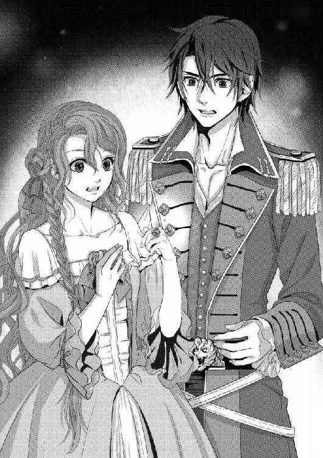
響いた声は、檣楼から聞こえた。見張りの声だ。皆はいっせいに檣楼を見あげ、遠眼鏡を片手に騒いでいる見張りの指す方向を見た。
見張りの指先に舞うのは、銀色の鷹。そしてラティアの指輪から放たれる光が照らし出すのは、夜の海に浮かび上がる、小島だった。
「フォア・トップスルを畳め！ 一時停船！」
クルサイドの声が響く。光に驚いて集まっていた船員たちは、高いところから落として割れ散らばった硝子の杯のかけらのように走り散る。この時間でも、薔薇の指輪が照らしていることで横静索を登り帆桁を伝い、縄を引いて帆を畳む船員たちの姿がはっきりと見えた。
シルディーン号は、今までの駆けるような速さをたちまちにゆるめる。船の速度が落ちるとともに風はやみ、風に踊っていたラティアの薔薇色の髪が、ふわりと肩に落ちた。
「島......」
それはシルディーン号の目の前、突然現われたかのように見えた。見張りも遠眼鏡で警戒していたはずなのに、今まで気づかなかったなどあり得ない。なかったものがいきなり現われたかのような、ラティアの指輪の光に導かれて海中から迫りあがってきたかのような。そんな印象を持った者は、少なからずいたに違いない。
夜間、島に近づくのは危険だ。まわりは浅瀬になっていることが多く、乗りあげでもすればこの大きな大型快速帆船は身動きが取れなくなってしまう。それもあって、夜の当直の見張りは特に気を遣っていたはずなのに。
「見ろ......」
誰かの声がする。それは船中を伝播した。指輪が自分の手にあるものだから眩しすぎて島の影を見るのがやっとだったラティアは、手で指輪を覆って光をゆるめ、島の方角を見る。そして、あっと声をあげた。
「光......、一緒だわ。あの、色......」
島の中央で、何かが光っている。それは天に向かって放たれた薔薇色の光。ラティアの指輪が放っているものと同じだった。
「ラティア。あの島がなんなのか、ご存じありませんか」
エイドゥだ。いつも落ち着いた声と態度を欠かすことのない彼が、動揺している。しかしそれは、ラティアも同じだった。島の中央から放たれる光から、目が離せない。それは声をあげて騒いでいる海賊たちと同様、純粋な驚きからでもあった。しかし同時に、まるでその光に向かって体が引きつけられるような、強い力に引き寄せられてしまうかのような力を感じたのだ。
「わから、ないわ......」
辛うじて、ラティアは声を綴った。そこに、ラティアを呼ぶ大声がする。
「クルサイド！」
「短艇を下ろす。早く来い、あの島がおまえと無関係であるはずがない」
どれほど想像力に乏しい者でも、同じことを考えただろう。ラティアはクルサイドに手を取られ、すると光る指輪を覆っていた手が離れる。たちまち目を開けていられないほどの光が放たれ、ラティアは驚きに転びそうになった。
「おっと」
クルサイドの強い腕が、ラティアを抱きとめる。引き寄せられて、その力に胸がどきりと鳴り、同時に指輪の光も強くなった。
「おまえ、手を伸ばしとけ。近くだと眩しくてかなわん」
「そ、そうね......」
片手だけをかたわらに伸ばし、もうひとつの手はクルサイドに取られるという妙な恰好で、ラティアは舷縁に向かう。すでに何艘もの短艇が縄で縛られ、下ろす準備がされていた。
クルサイドの手を借りずとも、乗り込む方法はラティアもすでに身につけている。その短艇にはクルサイドが、エイドゥが、そしてもうひとりが乗り、帆桁にかけられた縄の端を握る者たちが力をゆるめ、するすると降りていく。
そこからは、島まで短艇で進む。以前は櫂を漕ぎたいと駄々を捏ねたラティアだけれど、今ではその力のない者が手出しをするべきではないということがわかっているし、同時にそれどころではない。
進む短艇の中、ラティアは手をかざした。すると島の中央から放たれる光が、ゆらりと揺れる。それはまるで探していたものを見つけたかのようにラティアの指輪の光と重なり、短艇と島をつなぐ掛け橋のようになった。
「なんなんだ、これ......」
戸惑うクルサイドの声が聞こえる。驚いているのはラティアも同じだけれど、しかし同時に、胸に広がる温かいものを感じている。しばらく味わうことのなかった、この感覚――。
（お父さまに、抱きしめていただいたときのような......）
ラティアは、くっと息を呑む。体中を包むのは、力強い父の腕の記憶。そしてそれが二度と戻ってくるものではないという実感。
（お父さま......、ヴォルグロー王に、あれほど残忍に殺されてしまったお父さま......）
「どうしたんだ、顔色が悪い」
隣に座っているクルサイドが、声をかけてくる。ラティアは彼を見やり、首を横に振った。
「大丈夫よ。ただ......」
ひくり、と咽喉を鳴らしてラティアは言った。
「どうしてかしら。お父さまのことを思い出してしまうの。何だか、お父さまに抱きしめられているような感じがして......」
「あそこにあるのは、薔薇王の指輪だ」
輝くラティアの指輪の光のもと、彼ははっきりとそう言った。
「おまえの父親の、化身があそこにある......そう言っても、いいんじゃないか？」
「そうでしょう。この島が、薔薇の城に違いありません」
そう応えたのは、エイドゥだった。彼は力強く櫂を動かしながら、指輪の光が照らす島を見やっている。
次々に短艇が海岸に着き、シルディーン号の船員たちが皆集まってくる。ラティアの指輪の光は、海岸を照らした。それはまっすぐに、海岸のすぐ向こうに茂った木々を貫いている。シルディーン号から見えた島の中央の光とつながっていることは、疑いがなかった。
光を伝って、上陸したシルディーン号の一同は歩く。近くにあると眩しいほどの光は、木々の間のわずかな盛りあがり、落ちている枝、石さえも照らしてくれる。まったく知らない場所なのにつまずくこともなく、森を抜けた、その先。
「あ......、......っ！」
ラティアは、大きく目を見開いた。その場の者は、皆同じ反応を示す。
目映い光。あまりの眩しさの中、恐る恐るラティアは目を開けた。
「......宮殿？」
薔薇色の、低い大理石の建物だった。いくつもの尖塔に囲まれた中に平たい屋根という造りは、クルサカート王国の王宮の中央にある建物と似ている。
しかし色は薔薇色で、薔薇色の大理石などあるのだろうか。もっともその色はラティアの指輪とその建物の中からあふれ出す光で、真っ白な建物が染まっているからなのかもしれない。
その証に建物の外壁は単なる薔薇色一色ではなく、同じ色でもところどころ色が薄かったり、濃かったり、さまざまな模様を作り出している。人の技であるとは、とうてい思えなかった。
皆が、薔薇色の建物を見つめている。
建物の中からは、短艇に乗ったときから感じていた父の温かさが伝わってくる。ラティアは一歩を踏み出した。
「おい、勝手に行くな......危ない」
クルサイドの声が追ってきたけれど、ラティアの足は父の体温を求め、引きずられるように動いていく。ぎゅっと腕を掴まれた。
顔をあげるまでもなく、クルサイドの手だということがわかる。しかし彼はラティアを引きとめることはせず、ラティアの後ろをついて歩いた。
建物に、扉はなかった。人が五人ほど、横並びで入ることのできるくらいの広さの入り口から、薔薇色の光が満ちている。それはラティアの指輪を呼び寄せているようで、ラティアは足をとめずに歩き続ける。
中はさらに広く、シルディーン号をまるごと入れてしまうことができるのではないかというほどだ。しかし何もなく、がらんどうだった。等間隔に刳り貫かれた窓があるが、硝子は嵌っていない。そして光は、一番奥から放たれている。
ラティアにふくろうほどの視力があれば、光の根源を見ることができたかもしれない。光は変わらず眩しく、目を細めてラティアは歩き続けた。
クルサイドに手を握られながら、ラティアは足を進める。父の気配を感じ、クルサカート王国の王宮に似ている場所だとはいえ、見知らぬ場所、何が起こるかわからない状況だ。それでもラティアが休むことなく足を動かし続けることができたのは、ぎゅっと握ってくれているクルサイドの手――いつだってラティアを守ってくれる頼れる力が、触れたところから流れ込んできているような気がするからだ。
「あ、......っ......」
どこまで歩いても端がないのではないかと思えるほどの広間、しかしラティアの目には、まわりの壁と薔薇色の光以外の何かが、見えた。
「こ、れ......」
「椅子？」
クルサイドが、不思議そうにそう言った。薔薇色に染まった、大理石の椅子。座る部分はラティアとクルサイドが並んでもまだ余裕があるほど大きく、腕置きは身を横たえられるほど。背もたれはラティアの身長を遥かに越して、見あげるばかりだ。
「......あ、っ......あ！」
思わず、ラティアは目を覆った。強い、激しい光が弾けたのだ。しかし眩しさに対して熱がないのは変わらず、それどころか心地よい温かさに取り巻かれたように感じた。
「お父さま......？」
ラティアをここまで突き動かした、父の気配。父に抱きしめられているような思い。本当に父が目の前に立っているのかと思ってしまうような、強い衝動。ラティアはクルサイドを引っ張るように一歩進み、するとあれほど眩しかった光が、ふわりと消えた。
「おい、あれ......」
目の前の、巨大な椅子。その中央に置かれているのは、指輪だった。銀の地に薔薇の蔓のような飾りが巻きつき、その間にはきらめく石が填っている。それらは透明なのだけれど、薔薇色に光って見える――のは、中央にある、ラティアの拳半分ほどの大きさの薔薇色の石がゆるやかな光を放って透明な石を染めているからだ。
「薔薇王の、指輪、よ......」
かつて父の指に嵌められていた指輪。ヴォルグロー王との戦いで自ら剣を取り戦ったが、ヴォルグローの策略により海に落ち、引きあげられたときにはもう消えていた、豪奢たる薔薇王の指輪。
「これ、が......」
ラティアの手を握ったままのクルサイドも、息を呑んでいる。ラティアは震える足で椅子に歩み寄り、そっと握られていないほうの手を伸ばす。
きらっ、とふたつの指輪が呼応するように薔薇色に強く光った。それに一瞬目を閉じたものの、次の瞬間ラティアは、船での生活に荒れた自分の小さな手のひらには大きすぎる指輪を握っていることに気がついた。
「これ......、これが、あれば......」
海図は、航海士のローディエルが作っている。シルディーン号の船足で、クルサカート王国に戻ることはそれほど時間のかかることではないだろう。これを持って、ジグールド・クルサカート連合王国などと人を食った名称で侵略したクルサカート王国をも手中に収めているであろう、ヴォルグロー王のもとに向かい、嵌めさせる。
その瞬間、彼は砂になって消え去るのだ。偽りの薔薇王は、死ぬのだ。
「殺せるんだわ......、ヴォルグロー王を。これで......、やっと」
「ラティア」
豪奢な指輪を握りしめ、ひとりつぶやくラティアに声がかかった。はっと、ラティアは振り返る。
「それ、渡せ」
クルサイドだ。彼は目をすがめてラティアを睨むようにしていて、そのまなざしに怯むと同時に、かっと熱いものが身のうちからこみあげた。
「いや！」
指輪を握りしめ、ラティアは叫ぶ。
「いやよ！ これで、わたしはヴォルグロー王を殺すんだから......！」
ふたりについてきた、海賊たちが大きく目を見開いている。しかし彼らの驚愕にも絶句にも構わずに、ラティアはなおも声をあげた。
「お父さまを、クルサカート王国の民を、殺したヴォルグロー王を！ わたしは、殺すの！」
「殺す、なんて言うな。おまえの口には似合わない」
その言葉に、びくりとした。しかし指輪を握る手の力はゆるまない。
「でも、いや！ いやよ......わからないんだわ、あなたには。お父さまを殺されて、国を、民を蹂躙されて、わたし自身も無理やりヴォルグロー王の妃にされかけて......。その辛さが、屈辱が、あなたにはわからないのよ！」
「もう言うな、わかったから」
ラティアの肩に、手が置かれる。クルサイドは右手はラティアの手を握り、左手でラティアの肩を撫でた。
「落ち着け。今、ここにヴォルグロー王がいるわけじゃないだろう？ その指輪は取りあげないから、とにかく、殺すとか言うな」
彼は、辛そうな顔をしていた。なぜ、クルサイドがそのような表情をするのか――ラティアはそのことに気を取られ、ゆえに薔薇王の指輪を手にしたときの高揚感、これでヴォルグロー王を殺せるのだと沸き立った気持ちが、少し冷めた。
「とにかく、目的のものは手に入れた」
そう言って、クルサイドは後ろを振り返る。改めて見ると、建物は確かに大理石の白亜だった。先ほどまで薔薇色に見えていたのは、指輪の光のせいだったのだ。そして殺風景とはいえどしりと迫力ある豪奢な大理石の建物の中にあって、薄汚れ擦り切れた胴衣に上衣、脚衣姿の海賊たちは、なんとも不釣り合いだった。
おまけに彼らは、突然王宮の舞踏会に招かれたかのように唖然とした顔をしている。エイドゥでさえぽかんとした表情をしてまわりを見まわしていて、彼のそんな顔を見られることになるとは思わなかったラティアは、思わず笑ってしまう。するとラティアの肩に置かれたクルサイドの手に、力がこもった。
「行こう。船に残してきたやつらがそのままだ。錨を降ろして、停泊しよう。今夜はここを寝床にする。海賊どもが一晩くらい宿にしたからって、神は怒りゃしないだろう？」
「え、ええ......」
笑いながら、ラティアはうなずく。クルサイドは仲間たちに向かって声をあげ、シルディーン号の一行は、思わぬ場所で一夜を過ごすことになった。
薔薇王の指輪を握りしめたまま、ラティアは帆布の寝床から起きあがった。
本来大理石は冷たく硬いものだけれど、この城は違った。温かい、まではいかないものの、横になった者を受けとめてくれる柔らかさがあって、眠るのにいい心地だった。
しかし、ラティアがすやすやと眠れるはずがなかった。薔薇王の指輪を手に包み込んだまま横にはなったものの、目はどうしても冴えてしまう。まわりの皆が寝息を立てる中、ラティアはそっと立ちあがると、大理石の城を出た。
指輪は、薔薇色に光っている。この島――エイドゥの出身地、アマーリア公国で『薔薇の城』と呼ばれているのがこの島のことなのだろう――に入ったときほどの輝きはないものの、それでも足もとを照らすには充分だ。
城は、鬱蒼とした樹木に覆われていた。誰も手入れをする者がいないのだろうから当然だ。伸びたい放題、生えたい放題に枝や葉を伸ばしている中を、ラティアは歩く。
「......あら？」
両手で指輪を握ったまま、ラティアは振り返った。そこにはクルサイドがいて、じっとラティアを見つめている。
「不用心だな」
ラティアが城を出たときから、一緒だったのだろう。彼は少し不機嫌な顔で言った。
「ここは薔薇の城なのかもしれないけれど、ひとりで出歩くな。どこに何があるか、どんな動物が潜んでいるかしれない」
「そ、うね......」
この荒れた森の中で、ラティアは警戒心というものを忘れていた。それはやはり、ここが薔薇の城だからだろうか。隣国のアマーリア公国には知られていて、当のクルサカート王国の、しかも薔薇の一族が知らないというのもおかしな話だけれど。
「眠れないのか？」
「眠れるわけ、ないわ」
クルサイドは、無言で歩いてきた。ラティアの手を取り、じっと見つめてくる。
その、黒の瞳。ラティアはどきりとし、慌てて彼の手を振り払った。
「少し、歩きたいの」
「じゃあ、ついていく」
言って、彼はラティアの手を離さないまま歩き出した。これでは、ラティアが引きずられているような体勢だ。
「あ、歩けるから、離して」
「だめだ。いきなり、狼でも出てきたらどうするんだ。ここがどういう場所か、わからないんだぞ？」
「......そう、ね」
そうだ、とラティアは思い返す。彼は、薔薇の守護者だったのだ。薔薇の守護者は、薔薇姫を守るのが役目。薔薇姫が、未知の場所でふらふらと歩きまわることを止めるのはあたりまえだし、彼の言うとおり狼でも出てきて、ラティアに危険が迫ったときに怪我をするのはクルサイドなのだ。
「あなたは、薔薇の守護者だものね」
クルサイドは、返事をしなかった。
ラティアは彼に引っ張られていたので、その表情を窺い見ることはできない。ただ、手首を掴む手が少し強くなったように感じたのは、なぜだろうか。
「......おい」
突然、クルサイドが立ちどまった。ラティアは思わず彼の背にぶつかりそうになり、慌てて足をとめる。クルサイドの後ろからひょいと顔を出して彼の視線の先を見ると、夜の海が目に入った。
ここは、海を見下ろす崖なのだ。錨を降ろし、停泊しているシルディーン号も見える。夜の中、帆船が微かに揺らめいているさまは、まるで一幅の絵画のよう。
しかし、それ以外にラティアの目を奪うものがあった。そこにあったのは石の柱――無数に何本も、ラティアの背丈ほどの白い柱が立っているのだ。すべてには薔薇の蔓が絡まり、赤、白、薄赤、橙、黄色、緑、さまざまの色の大輪の薔薇が咲き乱れている。
「なに、これ......」
クルサイドがラティアの手を離したので、ラティアは柱のひとつに駆け寄った。すると、蔓の間から文字が見えている。クルサイドもラティアの後ろから覗き込み、小声を綴る。
「名前、じゃないか？」
「......ユナライアス・ディスフォーン・ゾル・クルランシー」
刻まれた文字を読み上げ、ラティアは大きく目を見開いた。指先で文字のあとを辿りながら、呻くようにつぶやく。
「わたしのお祖父さまの、お祖父さま......昔、クルサカート王国の国王、薔薇王だったかたの名前だわ」
ラティアは早足に、隣の柱に駆け寄る。もう一本、もう一本。すべてに名が刻んであり、どれもこれも皆、歴史書に記してある薔薇王であった者の名ばかりだ。
「......お父さま」
その中でも一番新しい、真っ白な柱にラティアは手をすべらせた。城の床同様、大理石なのに手には温かさが伝わってくる。
「お父さまの......、お墓は、クルサカート王国にあるわ。ヴォルグロー王は、墓を作って葬ることは許したのよ。敗戦の将とはいえ、遺体を打ち捨てるようなことをして民の反感を買うことは避けたかったのでしょうね」
「じゃあここは、本当に『薔薇の城』なんだな......」
低く、小さな声でクルサイドは言った。
「体は国に眠り、魂はここに眠る」
ラティアは、はっとクルサイドを見た。彼がそのような、まるで詩のようなことを言うとは思わなかったのだ。そんなラティアの視線を受け、目をすがめてクルサイドは続けた。
「この柱は、神が建てたんだと思う。宝を守らせる代わりに、その任を負った薔薇王の魂を、永遠に慰める。おまえも知らなかったくらいだ、神が役目を終えた者の眠りをひっそりと見守っている、薔薇の城なんだろうよ、ここは」
「神が建てたなんて、そんなこと、あなたが信じるの......？」
自ら『薔薇姫』という不思議な力を持った存在でありながら、神が薔薇王たちの墓を建てたなんて。信じられない、と薔薇色の髪を揺らすラティアに、クルサイドは小さく笑った。
「その、指輪」
ラティアの指に嵌っている、そしてラティアが握りしめている薔薇王の指輪を指差して、クルサイドは言った。
「それに、おまえの薔薇姫の力。そういうのをさんざん実感させられて、今さら信じられないことがあるはずないだろう。何があったって、もう驚くなんてことはないな」
それもそうね、とラティアは小さく苦笑する。そこにクルサイドを引き込んだのが自分自身となれば、苦い笑いはますます濃くなった。
「おまえ......」
クルサイドは、ささやいた。まわりには誰もいないのに、聞かれることを恐れているような声音だった。
「......、おまえ」
クルサイドは唸るように、つぶやくように言った。
「ほかのものを、ほしがってるんじゃないか？」
「......え？」
彼の言葉の意味がわからない。ラティアはクルサイドを見つめたまま、目をしばたたかせた。
「薔薇姫としての、義務？ 役割？ そんなもんじゃない......ほかに、おまえの求めるものがあるんじゃないのか」
「なんのこと......？」
不可解なことを言うクルサイドに、ラティアは首をかしげる。そんな彼女を見やり、小さく自嘲するように笑うと、クルサイドは顎先でラティアの指輪を指した。
「薔薇姫をやめるってことは、できないのか？」
彼の言葉に、ラティアは瞠目した。なにを言うのか、とたしなめようとして。
ただ目を見開くラティアに、クルサイドは同じことを繰り返す。
「薔薇姫として、薔薇王の指輪を次代に受け継ぐ......そんな義務にがんじがらめになってるのは、本来のおまえの姿じゃないんじゃないか？」
「なに、言うのよ......」
ためらいながら、ぎゅっと指輪を握りしめて。ラティアは声を震わせた。声が、どうしても震えてしまう。とめられない。
「そんなこと、できるわけがないでしょう？ わたしは、薔薇姫として生まれついたの」
言葉に力を込めて、ラティアは言った。
「あなたは、みんなに推されて船長になったんでしょうけれど。ってことは、何かがあって下ろされるってこともあるわけよね？ 船長でなくなるってこともあるわけよね？」
そこまで一気に言って、ラティアは大きく息をついた。しかしすぐに、口を開く。クルサイドが口を挟んでくるのが恐ろしかったのだ。薔薇姫をやめる、という言葉が、あまりに胸の奥に大きく響いたから。体中を揺り動かされるような衝撃だったから。
「でも、わたしが薔薇姫であることは、そういうことじゃないの。生まれついたの。わたしという存在が、薔薇姫なの。きちんと次代の薔薇王に指輪を渡さないうちに薔薇姫でなくなるなんて、あり得ないわ」
「そう、か......」
クルサイドは、ラティアの答えをわかっていたようだ。くちびるを噛みしめ、前髪をかきあげる。彼はまっすぐにラティアを見ず、居心地が悪そうにかたわらを見やっている。
「どうして、そんなこと言うの......？」
尋ねずにはいられなかった。それほどにクルサイドはいつもの彼ではなく、まるで幼い少年が、自分の言いたいことをうまく言葉にできずにもどかしがっているというようだった。
彼はもどかしげに、濃い褐色の髪をがりがりとかき混ぜた。
「その......なんだ。見てられないんだよ。おまえが、そんなかわいい女の子なのに、殺すの何のって言ってるのを」
「......な、にを......」
かっ、と頬が熱くなるのがわかった。それはわかったけれど、なぜなのかはわからない。クルサイドの言葉のどこが、何が、自分の体温をあげたのかがわからなかった。
「何を、言ってるの......、あな、た......？」
どきどきと、胸が高鳴る。痛いほどに打ち始める。ラティアの紫の瞳はただクルサイドを見つめ、そんなラティアの視線を、クルサイドは居心地悪そうに受けとめていた。
「わけが、わからないわ......」
そう言って、クルサイドのおかしな言葉を否定しようとした。しかし口から出る言葉とは裏腹にラティアの胸は大きく打ち、頬は赤くなる。クルサイドがやたらと髪をかきあげ、ラティアをまともに見られないとでもいうような、まるで少年のような態度を取るからなおさらだ。
「どうして、そんな、こと......」
がさり、と音がした。
ラティアは、はっと振り返る。クルサイドも、ぴんと神経を尖らせたのが伝わってきた。
「あ、なた......」
夜風になびく、濃い金色の髪。夜の暗さを欺いて、昼間の太陽の光を宿したような色。すがめた目は、海の青。見あげるばかりの長身、逞しい体躯。
まなざしは彼の口の端同様鋭くつりあがり、嘲るようにラティアを見ている。
その姿を、見忘れたはずがない。ラティアは、これ以上はできないほどに大きく、目を見開いた。
「ヴォルグロー王......っ！」
ヴォルグロー・オルラント・レイ・クラウデゥートリト。ジグールド王国の王であり、ラティアの祖国、クルサカート王国を蹂躙した男。クルサカート王国を併合し、両国の王となろうとしている男――ラティアの、仇。
「やっと見つけてくれましたか、ティスラティア姫」
彼は、にやりと笑った。
「我が、妃」
「......誰が！」
彼との望まない婚礼パレードのとき、手渡されたワインの杯の中身を彼にぶちまけてやりたい衝動に駆られたことを思い出す。今ワインの杯を持っていれば、間違いなくそうしただろう。しかし今ラティアが持っているのは、大切な薔薇王の指輪。救いを求めるように、ラティアはぎゅっとそれを握りしめた。
ヴォルグローの後ろには、無数の鎧姿の男たちが立っている。護衛の兵たちだろう。彼らは月明かりに、手にした剣をぎらつかせていた。
「どうして......、あなたが、ここに」
「おや、まったく気づいていなかったのですか？」
どこか侮るような新たな声に、ラティアは瞠目する。聞き慣れた声――ヴォルグローの背後から現われた姿に、ラティアは思わず悲鳴をあげた。
「エイドゥ......！」
（どうして、エイドゥがここに......？）
ラティアは、指輪を持っていないほうの手で口もとを押さえる。そんなラティアを、エイドゥはどこか怒ったような目で見やっていた。
「あなたは、ご存じだったではありませんか。アマーリア公国には、遠くにあっても心を通じあわせることができる民がいる、と」
サリラータナの民のことだ。しかしそのことと、エイドゥがヴォルグローとともに現われたことと、どう関係があるのだろうか。
口もとには、笑みが刻まれている。笑いとは裏腹の感情を秘めたようなエイドゥの横で、ヴォルグローは彼を促すようにその濃い青の瞳を向けた。
すっとひとつ息を呑み、そしてエイドゥは言葉を紡いだ。
「私の名前は、エイドゥ・サリラータナ。サリラータナの民のひとり、アマーリア公国の一員ですよ。サリラータナの民はその長を頭に、ヴォルグロー王に従っています」
「アマーリア公国の民が、どうしてジグールド王国の王と通じあっているの......？」
ジグールド王国の王、ヴォルグロー王が野心家であることは明らかだ。隣国のクルサカート王国を襲い、次はアマーリア公国、と爪を研いでいることは想像に難くない。それなのに、自ら故国を売るような真似をするなど、ラティアには考えられなかった。しかしサリラータナの民はアマーリア公国において、その王とは違う考えを持っているのかもしれない。
「それにあなたは、......薔薇の守護者になりたがっていたわ。守護者になって、わたしに危険が及べばあなたは死ぬかもしれなかったのよ？ それじゃ、ヴォルグロー王の役に立てない。おかしいわ。道理にあわない」
エイドゥは、少しだけ眉根を寄せた。ヴォルグローは責めさいなむようにエイドゥを睨みつけ、そんな彼と目があうと、エイドゥは困ったように苦笑した。
見慣れた、エイドゥの笑み。彼は少し手を差し伸べ、その先はラティアに向いていた。まるで、ラティアの手を取ろうとでもいうように。
しかしその手がラティアの手を取ることはなく。エイドゥはただ、ラティアを見つめていた。
「......、っ！」
ラティアに向けて差し出した手を、エイドゥは強く握りしめた。うつむき小さく声を立て、ラティアの手を取ろうとした自分の手を引き寄せたエイドゥの、真意は――。
（なんなの......。エイドゥは、なんて言おうとして......？）
それは彼の冷静な声音の中に、いつも隠れていた色だ。気づいていながら、ラティアにはずっとその意味がわからなかった。
低く息を呑んだラティアの前、エイドゥは顔をあげて微笑んだ。それは満ちて輝く月を黒雲が隠していくように、たちまちに変化する。どこかひねくれたような、憤りを孕んだ、苛立たしげなものになったのだ。
彼は、ラティアが彼の申し出を断わったあとでも、そのような見るだけで恐ろしくなるような顔など見せたことはなかった。ラティアは、ぎゅっと胸の前で拳を握った。
目の前の微笑みは、彼の右目の傷も相まって見る者の心をぞっとさせる皮肉を感じさせる。エイドゥがそのような表情をすることなど、考えたこともなかったのに。
彼はゆっくりと、クルサイドに目を向けた。
「あなたの仲間にしていただいたことは、感謝していますよ。私たちの知らなかった東に足を向け、海図を書き加えてくれた......これは、我が主にとっても大変な収穫です」
どこか偽悪的な、投げやりな調子でエイドゥは言った。クルサイドが、大きく顔を歪める。
「我が主、だと......？」
どういういきさつで、エイドゥがシルディーン号に乗ったのかラティアは知らない。しかしクルサイドの反応からしてエイドゥとヴォルグローがつながっていることは彼も知らなかったようであるし、彼が〝我が主〟と言うのは、ヴォルグローのことだろう。クルサイドとしては彼の乗っていた船の船長として、大変な屈辱であるに違いない。
「......え？」
エイドゥの前に、ヴォルグローが進み出る。彼は腰から、きらめく剣を引き抜いた。剣のあまりの鋭さに思わず脅え、ラティアは一歩後じさった。
（なに、を......？）
ラティアは驚いた。ヴォルグローが剣を向けたのは、エイドゥにだったからだ。彼は、クルサイドを斬ろうとするものだと思っていたのに。しかしヴォルグローは彼と通じ、クルサイドを裏切ったエイドゥに刃先を突きつけるのだ。
「エイドゥ......！」
「薔薇姫に......、とな？」
え、とラティアは小さく声をあげた。――なにを？ 薔薇姫が、どうだと言ったの？
エイドゥは、陰を帯びた笑みを濃くする。自分の胸の先に光る刃に、脅える様子も見せていなかった。
混乱するラティアに、応えてくれるものはない。ヴォルグローは強い調子で続ける。
「そのうえ連絡を絶ち、呼びかけにも応えず、私に薔薇姫を捜す手間をかけさせた。アディーリャ港でおまえたちを見つけなければ、どこまで逃げ延びたことか」
忌々しげな顔をして、ヴォルグローは剣を握る手に力を込めた。
「どれだけ切り刻んで殺しても、飽き足らない......」
彼の言葉に、ラティアははっとする。以前、船の回廊の奥でエイドゥが話しているのを見た。あの場所は狭くて、ほかに人がいるようではなかったのに。
あのときが、その〝連絡〟だったのだろう。そしてエイドゥは、ヴォルグローがラティアをとらえられるようには仕向けなかった。
エイドゥは、ただ静かに立っている。ヴォルグローの怒りは、彼の予想の範囲内であったらしい。むしろそれを待っていたような――そんなエイドゥを、ヴォルグローは炎のように厳しく見やる。
「しかしこうやって薔薇の城を見つけ、海図の拡大に力を貸した。その功績により、屈辱だけは免れるようにしてやろう」
鋭い切っ先を目の前に、エイドゥはそうなることがわかっていたというように、目を閉じた。逃げようとはしないのか。まるでこのまま殺されることを受け入れているかのようだ。
（どうしてなの......、ヴォルグロー王を欺いていたこと、知られればただでは済まないはずなのに。どうして、今になってヴォルグロー王と通じるの？）
ラティアがエイドゥの望みに応えないことに、捨て鉢になったのか。それともシルディーン号にラティアが乗っていると知ったヴォルグローが手を尽くしてラティアを捜しだし、そしてエイドゥと再会したのが、偶然この薔薇の城。否、必然――。
すべてが、薔薇の城、そして目の前に墓標の並ぶ歴代の薔薇王たちの導きなのかもしれない、とラティアは考えた。
「エイドゥ！」
ラティアは、大きな声で呼びかける。しかしそんなラティアを抱きとめ、今にも一歩前に出んとしていた足を止めさせたのはクルサイドだった。
彼はラティアを引き止めると、エイドゥに剣を突きつけるヴォルグローに向かった。彼の手を止めさせようというのか、自らも短剣を引き抜く。
「クルサイド......、だめ、危ない！」
目をすがめてあふれだす怒りを露わにしたヴォルグローは、しゅんっ、と空を切ってそのまま剣を振り下ろした。エイドゥの首から胸にかけて、ざくりと深く斬り裂く。
「あ、......っ......、......」
真っ赤な血が、散る。
エイドゥは、声もあげなかった。彼は開いたほうの左目でラティアを見、目をすがめた。そのときは確かに、今ままで船のうえで見せてくれていた笑みを見たと思ったのに。
彼は壊れた人形のように、その場に崩れ、倒れ伏す。そんな彼の背に、血濡れた剣が投げ捨てられた。
「せいぜい王の手によって葬られるという、名誉を与えてやる」
「エイドゥ......！」
ラティアは、駆け寄ろうとした。しかし、クルサイドに止められる。ヴォルグローは自分が斬ったエイドゥを見下ろし、煩わしいものを片づけたとでも言わんばかりに顔を歪めた。
「まったく、愚かな男だ。クルサカート王国とともにやっていきたいと願った私の計画を、潰しかねん真似をしおって......」
「な、っ......！」
ラティアは目を見開いた。「ともにやってきたい」なんて。一方的に侵略し、王を殺して併合した――ラティアの脳裏には改めての焼けつくような怒りが浮かび、それを読んだように行動に移したのは、クルサイドだった。
うぉ――ぉ、お......っ......！
獣のような咆哮とともに、クルサイドは短剣を振るう。
自分がエイドゥを通して何者かの監視下にあったという、自由を愛する海賊としては我慢ならないことも原因だろう。同時に、仲間だったエイドゥのあまりにも悲惨な最期――彼をまるで塵芥のように扱ったヴォルグローの非情さ。すべてが、クルサイドを憤らせたに違いない。
「殺しはしない」
突きつけられたクルサイドの短剣を身軽にかわしたヴォルグローは、すらりと腰の両用剣を抜いた。突き技にも斬ることにも優れた太く大きな剣の刃が、月明かりを反射して光る。短剣の何倍もある剣に怯むことなく、クルサイドは突きかかった。
クルサイドの攻めに、ヴォルグローの背後の鎧の兵士たちが勇み立つ。しかしヴォルグローは彼らを手で制し、両用剣を構えた。クルサイドとの一騎打ちを望むのか。それは男としての誇りか、もしくはクルサイドの腕を侮ってのことか。
そんな彼を狙い、クルサイドの短剣が鋭く研がれた両用剣の刀身を打つ。きぃん、と耳を貫く音が上がった。
短剣と両用剣が、続けざまにぶつかりあった。一見しただけでそれぞれが、流儀は違えど一流の剣技を身につけていることがわかる。
ふたりの交わす剣が、目映い月明かりを受けた。それは昼の陽に比べればずっとずっと穏やかな光のはずなのに、ラティアの目には弾きあう火花、翻る刃に映る輝きが直接太陽を見るよりも眩しく見える。
きん、きんっと響く刃の音の中、まるで剣のかわしあいを楽しんでいるかのようなヴォルグローは、やはり楽しげな声音で言った。
「おまえは、エイドゥの伝達どおり優秀な船乗りだからな。殺しはしない。しかし、私に刃を向けたこと......」
ヴォルグローは腕を回し、両用剣を振るう。下からすくい上げるように攻撃してくるクルサイドをかわし、彼の剣は空を裂いた。クルサイドは軽く体を引き、しかし彼の頬に赤い花が散る。
クルサイドが斬られたのだ。しかし頬へのかすり傷など、クルサイドには傷というにも及ばないだろう。彼は短剣を横に一閃する。それはヴォルグローの上着の端を切り、彼は顔を歪めた。
「......後悔させてやる！」
「はっ！」
絵筆でも動かすように鮮やかに夜を斬るヴォルグローの両用剣を、半分の大きさもない短剣で受けとめ、弾き返す。同時にクルサイドは、立て続けにいくつもの突きを繰り返した。ヴォルグローはすべてをかわし、嘲笑を浮かべたまま剣を操る。
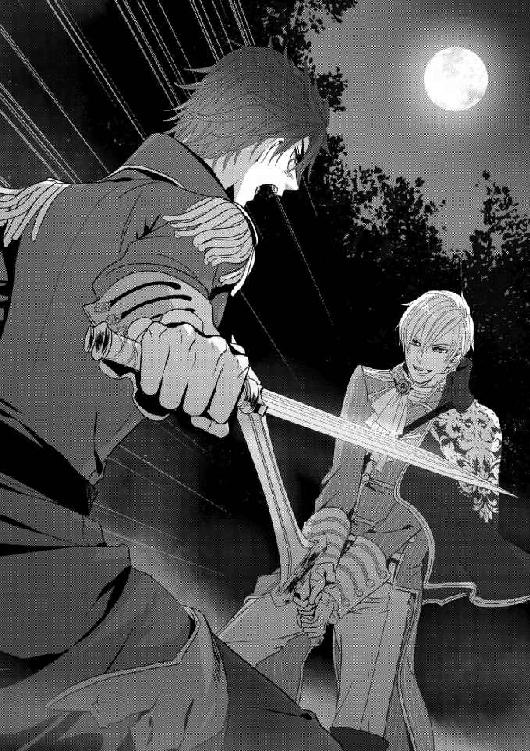
かん、かん、きんっ――！
ふたりの剣がぶつかり合い、凄まじい声が響き渡る。夜の空気は戦う男たちのあげる声を吸い込み、同時に耳を貫く剣のぶつかりあいの音を凄まじく響かせた。
「いつまでも、その玩具のような短剣で対峙していられると思うな！」
剣を交え、視線で互いを貫きあい、ラティアには目にもとまらないほどの凄まじい剣技が目の前にあった。いつヴォルグローの両用剣がクルサイドをとらえるか、はらはらしながら見やるラティアには、何もできることがない。ただ手を組みあわせ、ふたりの男の舞いのような剣の応酬を見つめていることしかできない。
両用剣と短剣、大きさも長さも違うふたつの武器は、どう考えてもクルサイドに不利だ。しかし押しているのはクルサイドだった。短剣を器用に舞わせて、彼には何本腕がついているのだろうか、などと思ってしまうほどで。
「あ、あっ！」
ラティアは、思わず声をあげた。ヴォルグローの両用剣がクルサイドの腕を掠めたのだ。血が散るのが見えたけれど、しかしクルサイドは身軽に剣を避け、再び短剣を振るう。
頭上から振り下ろしたそれが、ヴォルグローの金色の髪を削いだ。しかしヴォルグローも、クルサイドに負けず劣らずの瞬発力を見せる。裂けた上着の裾を翻して距離を取り、ふたりの刃は再び組みあった。
きんっ、と金属の音がますます鋭く耳を射る。思わず両手で耳を押さえても、それを凌ぐ勢いでふたりは剣を交え、目の前の鍔迫りあいがどうなるのかと見つめるラティアを、どうしようもなく揺るがせた。
剣はぶつかり、凄まじい勢いで光と火花と音を散らばらせ、月夜に剣舞の鮮やかな軌跡を残す。男たちの命がけの戦いは胸を抉る悲愴を孕みながらもどこか最上級の楽劇のように、夜を背景に繰り広げられる。
「......あ！」
ラティアがそう感じたのは、一瞬だった。また、赤いものが散った。ヴォルグローの腕が斬られたのだ。短剣はまともにヴォルグローの二の腕あたりに食い込んでいて、しかもそれは、彼の利き手である右手だ――ヴォルグローは、呻いた。
「ち、っ......！」
王らしくもない、下卑た舌打ちをヴォルグローはした。クルサイドから数歩後ずさって避け、同時に左腕をすっと挙げる。
「きゃ......あっ！」
ヴォルグローの背後に控えていた兵士たちが、五人走り寄ってきた。あ、という間もなくラティアは、そのうちのひとりに羽交いじめにされた。
「やめて、離して！」
同時に動いたのは、クルサイドだった。彼はすばやく、ラティアを押さえる兵士に短剣を突き立て、ざくりといういやな音とともに、兵士はずるずるとその場に倒れ伏してしまう。
「ひ......、っ......」
真横で、肉を斬る音を聞いた。ラティアは恐ろしさに震える。これは薔薇姫の危機において、薔薇の守護者として当然の行為だ――それでも、倒れた兵士のあとにはまた別の兵士に押さえ込まれ、ラティアは拘束されたまま動けない。
「きさま、らっ......」
クルサイドが、焦燥の声をあげる。しかし剣を構えた兵士たちはラティアを離さず、攻撃的なクルサイドの剣を受けとめては払い、クルサイドには打つ手がない。
「クルサイド......っ！」
思わず声をあげた。鎧の兵士と戦っているクルサイドの後ろ、近づいた影があったのだ。
ラティアの声は間にあわなかった。後ろから両用剣が振りあげられ、そのままクルサイドを頭の上から叩き斬ろうと――。
（あ、ああっ！）
しかし、クルサイドはすばやく逃げた。ヴォルグローの両用剣は空を斬り、逃れたクルサイドは再びヴォルグローに戦いを挑む。
「薔薇の、守護者！」
剣を交じりあわせながら、ヴォルグローは大きな声で笑った。
「薔薇姫を守るために、たったひとり選ばれた男。......しかし、見ろ！ おまえの大切な薔薇姫は、我が手中。おまえが我が兵となるなら、その腕を見込んで使ってやらんでもないが」
皮肉にそう言うヴォルグローの両用剣、兵士たちのさまざまな剣。それらがクルサイドを襲い、彼がかわして逃げられるのが不思議なくらいだ。
しかしうまくかわしてはいるものの、クルサイドは防戦一方。同時にあちこちから降る刃の雨にときおり斬られ、致命傷は受けないまでも、体力を奪われていっているはずだ。
「あ、ああっ！」
ラティアは叫んだ。兵士の剣が掠ったのは、クルサイドの肩――金髪の女海賊に喇叭銃で撃たれたところなのだ。まだ傷が治っていないことは、クルサイドらしくもなく踏鞴を踏んだことでわかった。
（だ、め......）
いくらクルサイドが一流の剣士であるとはいえ、相手は複数なのだ。結果は、時間の問題かもしれない。クルサイドの剣技が結末を引き伸ばしているだけで、万が一のことが起こってもまったく不思議ではない。
クルサイドを傷つけたくはない。同時に、シルディーン号の者たちから船長を奪うことはできない。このままクルサイドを、ヴォルグローと戦わせていてはいけない――。
「ヴォルグローさま！」
ラティアは、ふたりの男の間を裂く声を張りあげた。きぃん、と余韻を残して、戦う男たちは剣をとめラティアを見やる。
「もう、おやめください......」
声は、震えていた。ラティアは大きく息を吸い、全身に力を込めて、呻く。
「ついていきます......、ヴォルグロー王。あなたと一緒に行きますから、もう、クルサイドには手を出さないで」
「ほぅ」
にやり、とヴォルグローは笑った。その獰猛な肉食獣のような笑顔にラティアはぞっとしたものの、負けてはならないと歯を食い縛った。
「賢命なことだ」
ラティアは身を震い、自分を羽交いじめにしている兵士の腕をほどかせた。そして、歩く。
一歩、また一歩。ラティアは、ヴォルグローに歩み寄った。そして彼の目の前で、ぐいと手を突き出す。
その手の中にあるのは、きらめく薔薇色を放つ、薔薇王の指輪だ。
クルサイドに怪我を負わせず、自分自身もまた望みを叶える――ラティアは、その可能性に賭けた。
「これを、あなたに」
ラティアの手は、震えた。薔薇の一族ではない者が嵌めれば砂になってしまうという話をしたとき、エイドゥはいただろうか。彼はその話を彼の主に、そしてヴォルグローに伝えただろうか――そうではないことを、祈るしかない。
「クルサカート王国の王の証です。わたしは、あなたを薔薇王と認めます」
ラティアの殊勝な演技は、ヴォルグローの目を欺くことができただろうか。彼は笑みを濃くした。
「姫。いや......我が、妃」
ヴォルグローは手を伸ばす。父の形見でもある薔薇王の指輪に、触れる。――父の思い出が穢されるような思いに、ラティアは耐えた。
がっしりとしたヴォルグローの手は、薔薇王の指輪を取りあげた。ラティアは懸命に表情に出さず、彼がそれを指に嵌めることを祈る。
（嵌めて......、お願い！）
ラティアはすべてに、祈りを捧げた。神に、父に。この光景を見守っているのであろう、かつての薔薇王たちに。
ヴォルグローは、指輪を見つめている。彼の右手は剣を握ったままだ。その手から剣を離し、指を広げ、指輪を嵌めることを――。
「......はっ！」
嘲笑とともに、ヴォルグローは大きく左手を振りかぶった。その手から薔薇色の光がこぼれ、軌跡を描いてラティアの頭上を、並ぶ薔薇王たちの墓標を越え、崖の向こうに消えていく。
――ぱちゃん。
その、小さな小さな音が耳に届いたのは、ラティアの五感があまりにも研ぎ澄まされていたからだろうか。
「愚かな姫君」
笑い声が響く。ラティアは目を見開き、くちびるを噛みしめてヴォルグローを見つめていた。
「本当に、あなたは愚かだ。エイドゥのことも知らず、海賊船などに乗って。海賊船の船長などを守護者にして。私を騙しおおせるとでも？ 海賊の小僧でも、もっと賢いでしょうにね」
――ええ、そのとおりよ。
楽しげなヴォルグローの嘲笑を見つめながら、瞠目するラティアは呻いた。
（無理だったんだわ。この男を欺くなんて。殺すなんて。わたしにできることは、何もない。だってわたしは、己の盾にすべき薔薇の守護者を......）
傷つけたくないと。怪我をさせたくないと。
――してしまうような娘なんですもの。愚かだわ。まったくそうよ、そのとおりよ。
（わたしは、クルサイドに――してる。そんな自分の気持ちを許して、国を、民を、犠牲にする。あまりにも、愚かな娘だったんだわ......！）
握りしめた両手に、爪が刺さる。そんなラティアを前に、ヴォルグローは剣を鞘に収めた。進み出て、ラティアの手を取る。右手の指輪が、薔薇色にきらめいた。
「わかったのなら、行きましょう？ 婚礼のやり直しですよ。海風に荒れた肌と髪を整え直して、もっともっと華やかな衣装をまとって。ジグールド・クルサカート連合王国の初代王妃になるための準備をしましょう」
「......離して」
そう、精いっぱいの声で言うことが、ラティアにできるすべてだった。
「ひとりで、歩けるわ」
ヴォルグローは笑った。ラティアは足を踏み出す。そして、クルサイドのほうを振り返った。
彼はくちびるを噛んで、握りしめた手をわななかせていた。薔薇王の指輪を投げ捨てられてしまった悔しさを、彼もわけあってくれているのだ――そのことは少しだけラティアを慰めた。
「クルサイド」
低く、静かな声でラティアはつぶやいた。
「ありがとう。そして......さようなら」
言いざま、ラティアは地面を蹴った。両腕を広げて、クルサイドに抱きつく。彼の首の後ろで腕を絡ませ、引き寄せる。
「な......、ラティア、っ......？」
ラティアは驚く彼に顔を寄せて、そして――くちづけを、した。
ふたりのくちびるが、重なる。湿って柔らかいラティアのくちびるが、クルサイドの海風に荒れたくちびるに押しつけられた。
（汝との契約を、ここに滅する......！）
抱きつかれたクルサイドは踏鞴を踏んだが、さすがに転ぶことはしなかった。ラティアの全身を、寒気のような痺れが走る。ラティアを受けとめたクルサイドも、同じものを感じたに違いない。
くちびるが、離れる。
ここに、ふたりの契約は解除された。クルサイドはすでに薔薇の守護者ではなく、ラティアは守護者を持たない薔薇姫だ。
ラティアは、素早くクルサイドから腕を解く。彼と視線をあわせると、クルサイドは大きく目を見開いていた。
真っ黒な、宵闇のような瞳――彼は、ラティアの行動の意味を知って、意図を読み取っているのか否か。ラティアは薄く微笑み、彼から離れた。ヴォルグローのもとに、歩みを寄せる。
（これで......もう、最後）
振り返りはしなかった。薔薇の守護者ではなくなったことが実感できれば、彼はせいせいしたと言うかもしれない。望みもしない役割から解放されて、喜びに笑うかもしれない。
（ごめんなさい、巻き込んで。怪我をさせたり、苦しい思いをさせたり......辛い目に遭わせて、ごめんなさい）
ヴォルグローが手を伸ばす。その手がラティアの腰に伸び、抱き寄せられる――クルサイドに背を向けていたラティアは、ヴォルグローの手によって彼のほうを向いた。同時に見えたものに、はっと目を見開く。
（クルサイド......！）
その紫の瞳に映ったのは、炎のような黒い瞳――鋭く、燃えあがるようなまなざしはラティアを見つめ、彼と視線が合ったことにラティアは胸を貫くものがあることに気がついたのだ。
クルサイドは、そのことを体で感じ取ったのだろう。そのうえで彼の考えていることが、ラティアの脳裏にひらめきのように走った。
ごくり、と息を呑む。そんなラティアの視線の先で、クルサイドの短剣が月明かりに光った。それはまるで、クルサイドがラティアの背を押す合図砲のようだった。
「......っ！」
ラティアは髪を翻して、顔をあげる。そして腕を伸ばし、自らヴォルグローに抱きついた。ラティアよりずっと背の高い彼は、驚いたように目を丸くする。
（お願い......、わたしの、願いを......！）
胸の中で祈りの言葉を唱えながら、ラティアは力を込めてヴォルグローを引き寄せる。彼に、抗う暇など与えない。
ラティアは彼のくちびるに、自分のそれを押しつけた。いきなりのことに驚愕しているヴォルグローの首の後ろに手を絡め、そして以前クルサイドにキスされたとき声には出さずに唱えた文言を、やはり声にはせずにつぶやいた。
（汝、我と約したり......！）
全身に走った感覚は、間違いなく悪寒だ。憎い男にくちづけなくてはいけない痛恨。しかしラティアの持っている武器は、これしかない。そしてそれを使うことをクルサイドが促しているのだ。ラティアが唯一できることが最大の攻撃となるのならば――クルサイドに、策があるのなら。
「な、にを......っ!?」
唸るヴォルグローを省みず、ラティアは素早く振り返った。両腕を、大きく広げる。
クルサイドは目をすがめる。短剣を構え、飛ぶ鳥よりも早く走り寄ってきた。それはヴォルグローの従者たちの反応には間にあわない速度で、そのきらめく刃先はラティアを狙っている。
（クルサイド......！）
ラティアはそれを、全身で受けとめようとする。鋭い凶器にも、恐れはない。先ほどほんの一瞬、交わしたまなざしの中に確かにあったクルサイドの意図は、すべてを彼に預ける安堵をラティアに与えていた。
ざぁぁ、と崖下で波音がする。海もまた、ラティアの決意を後押ししてくれているかのようだ。ラティアは唇を噛みしめ、体に力を込めてクルサイドを迎え入れる。
「なに......っ......」
ラティアに向かって短剣を突き立てようとするクルサイド、それを両手を広げて受けとめようとするラティア。
ふたりを前に、ヴォルグローは自分の体がとっさに取った行動をどう理解しただろうか。そしてそんなラティアの前にまわりこみ、彼女をかばうヴォルグローは驚愕に染まった表情をしている。
先ほどのキスが〝薔薇姫との契約〟であることは、ヴォルグローにはわかっていないのだろう。そして自分の身に、何が起こったのかも。
しかし、今や〝薔薇の守護者〟となったヴォルグローはラティアの前に立ちはだかり、クルサイドの短剣をその左胸に受ける。
ざくっ、と衣服を突き通って肉を斬る音に、ラティアはぎゅっと目をつぶった。
「きさ、まぁ......っ......」
エイドゥを死に至らしめたとき以上の、真っ赤な薔薇が散り急ぐような血飛沫が散る。
「う、ぐ......っ......」
どぉ――ん――っ......！
同時に響く、轟音があった。ラティアはとっさに、音のほうに目をやる。向かってくるクルサイドの背後だけれど、音の正体を知る前に、飛びかかってきた重みに押し倒された。
「きゃ......、っ......！」
ラティアのうえに覆い被さってきたのは、クルサイドだ。そのかたわらに、胸を刺されたヴォルグローがどぅと倒れ込む。皆の頭上、飛び交ったのは大きく黒い、丸いものだった。
（砲弾......？ 大砲の、弾......？）
もうもうと、煙が立ちこめる。静まり返っていた薔薇王の墓所は一転、阿鼻叫喚の坩堝と化した。砲弾は次々と飛ぶ。男たちの悲鳴が谺する。あたりは真っ白に煙り、焦げくさいにおいでいっぱいになった。
「ラティア、避けろよ！」
ラティアの体を押さえつけるクルサイドが、叫んだ。その間にも、ふたりの頭上にはいくつも砲弾が飛んでは爆発しているのだ。それが、ヴォルグローの兵たちを襲っている。
クルサイドは素早く、短剣を振り上げた。ラティアの首の横、ぎりぎりに突き立てる。
「きゃっ！」
避けろ、とは言われたものの、そのような機敏さはラティアにはなかった。クルサイドの腕が確かだったからラティアは傷を負わずにすんだけれど、指一本の太さぶんでも違っていたら、ラティアは首の血の管を斬られるところだった。
そして、そんなラティアの危機に、割り込んできた姿は。
「貴様......、き、さま、ぁ......！」
ヴォルグローだ。彼はいったんは胸に傷を受けて倒れ伏せたもののよろよろと起きあがり、エイドゥの遺体のかたわらに落ちた剣を拾ってクルサイドに斬りかかってくる。
それは、ヴォルグローにも抑えられない衝動――現在の薔薇の守護者であるヴォルグローは、ラティアの危機に動く体を抑えられないのだ。
しかし負傷しているヴォルグローは、ただでさえ重い剣をうまく振るうことはできない。クルサイドは易々と身をかわし、起きあがると再びラティアに斬りかかる。ラティアの前に、影が走った。
ざくり。
肉の裂ける、生々しい音がした。ラティアの目の前には血飛沫が舞う。さらにひと突き、もうひと突き。
ラティアの前に立ったヴォルグローは糸の切れた人形のように、自分が殺したエイドゥと並んでくずおれた。ラティアの前には、顔に点々と赤い痕をつけたクルサイドが立っている。
「行くぞ！」
クルサイドは短剣を投げ捨て、倒れたヴォルグローの体をまたぎ越した。腕を伸ばし、ラティアを抱きあげる。そう、初めて彼と会ったとき、リウ・ミリアニス号から落ちそうになっていたラティアを抱えあげたように。
ラティアは、とっさに振り返った。立ちこめる煙の中、倒れたヴォルグロー、その向こうにも無数に倒れ伏した鎧姿の男たちが目に入った。
「い、ったい......、な、にが......？」
「シルディーン号の大砲の射程距離が、何十ヤーベルトあると思ってるんだ！」
「射程距離、ですって!?」
ラティアの体重などないかのように、クルサイドは薔薇王の名を刻んだ柱の間を駆け抜ける。そして崖の縁を蹴ると、ひらりと飛んだ。
「きゃぁ――っ!!」
響いたのは、ラティアの悲鳴だ。ドレスの裾が、大きく広がる。ふたりはそのまま落下して、衝撃を受けた、と思った瞬間、冷たい水の中に沈んでいた。
突然のことに、息をためておく暇もない。ラティアは呼吸を奪われて暴れ、その体をクルサイドがしっかりと抱きしめる。
（あのとき、みたい......）
クルサイドと契約を交わし、自ら海に落ちてみせたときのこと。あのときのクルサイドは、薔薇の守護者だったからラティアを助けてくれた。しかし今の彼は違う。すでに彼は、守護者ではない。
（それなのに、クルサイドは、わたしを助けてくれた......？）
契約は解除されたはずなのに。クルサイドにはもう、ラティアを助ける理由はないのに。
――契約が、解除されなかった？ 否、ラティアは全身に走る感覚を覚えている。確かに、今のクルサイドは薔薇の守護者ではない。それなのに。
ふたりは海面にあがり、激しく何度も息をした。体はまだ冷えきった水の中にありながら、しかしラティアは冷たさを感じなかった。
（守護者じゃないのに、助けて、くれた......）
どうして？ そう問いたくても、息が荒くて声が出せない。その間、クルサイドはラティアを抱えたまま器用に泳ぐ。目の前にどんどん近づいてくるのは大きな船――シルディーン号だ。目の前には縄梯子が垂らされて、クルサイドはやはりラティアを抱えたまま、片手で縄梯子を登った。
「おお、水もしたたるいい男だな、船長！」
「しかも、美女を抱えてか！ 羨ましいねぇ！」
船員たちが、揃って囃し立てる。クルサイドは軽々と舷縁を乗り越え、甲板に降りた。びしょ濡れのラティアは目を丸くしたまま甲板に座り込み、するとふわりと肩に乾いた布をかけてくれた者がある。クルサイドだ。
（あのときみたい......、だけど、違う）
クルサイドは、守護者ではないのに助けてくれた。布をかけてくれたのは、エイドゥではない。いろいろなことがあのときのようで、いろいろなことがあのときと同じではない。
「いったい......、なにが、どう、なったの......？」
あまりにもたくさんのことが、ひと息に起こりすぎた。暑い季節だとはいえ冷たい海水に濡れて冷えていく体を、クルサイドが背中から擦ってくれる。
「ジグールド王国の軍隊に向かって、ありったけの大砲を撃った」
何でもないことのように、クルサイドは言った。振り返り、ラティアはまじまじと彼を見る。にやりと微笑みながら彼は体を拭い、ラティアは唖然と、彼の手に自分の身を任せるばかりだ。
「で、も、......ヴォルグロー王も、兵たちも......海のほうを向いていたじゃないの。訓練された、王を守る兵たちよ？ シルディーン号の動きに、気がつかないわけがない......」
「俺たちは、海賊だぞ？」
ラティアに顔を寄せ、クルサイドが笑みを濃くする。
「おまえも、十日以上も俺たちと一緒にいたんだ。俺たちのやり口くらい、もうわかってるんだろうが？」
でも、でも、と、なおも驚きを拭えないラティアは続ける。
「火薬を詰めて、火をつけて、砲門の蓋を開けて......、ヴォルグロー王の兵、誰にも気づかれないで、あんなことを？」
商船に同胞だと信じさせ、偽って乗り込む。凄まじい速度で右に左にとまわりこみ、大砲を次々と放って船を沈没させる。そのような乱暴なやり口なら見てきたけれど、手練れの兵たちにさえ気づかれないように密かに大砲を向け、いきなり砲弾を発射するなどという隠密の作戦をとるなんて。
「どうやって......？ 信じられないわ」
「俺たちは、海賊だ」
クルサイドは、繰り返した。
「十日程度じゃ、足りないか？ 俺たちの持ってる技を全部ご披露するには、もっともっと、ここにいてもらわなきゃならないか？」
戯けた口調で、彼は言う。手を差し出してきたのは、航海士のローディエルだ。その隣にいるのは砲撃手たち、火薬猿と呼ばれる、火薬運びの少年たち。ラティアの前には、シルディーン号の船員たちが皆いるようだ。
「おまえには、お姫さまよりも海賊のほうが似合う。お姫さまは自分の命を盾に、無謀な賭けに出たりはしないもんだ」
「そうそう、無謀な賭けっていうのは、海賊の専売特許だ！」
船上に、笑いが満ちる。しかしラティアは戸惑うばかり、まわりを見まわし、戦果を喜び互いを讃え、声をあげる海賊たちをまばたきをしながら見ることしかできなかった。
クルサイドと、目が合った。彼の、黒い瞳――それに胸を射抜かれたように感じてラティアは慌てて、目を逸らせる。
（どうして、助けてくれたの？）
声にして、問いたい――しかしそれは、恐ろしいような気もした。そう尋ねて、どのような返答があるのか――自分は、何を恐れているのか。
「どうせなら、このままこの船に乗ってるか？ 一緒に、海賊業ってのも悪くないぞ！」
「そうだ、あんな度胸があるなんてな。城の中でただじっと座らせておくのは、惜しい」
皆が口々に、魅惑的な言葉を投げかけてくる。海賊船での、十日間――髪やドレスが潮に濡れるのにも慣れ、海賊たちの無茶や途方のなさにも馴染み、それどころかそれらをわくわくしながら見ていられるようになった――嵐に、疾風に、何もかもが怒濤のような毎日に慣れてしまった今では、王宮での生活の単調さなんて！
「......無理よ」
小さな声で、ラティアはつぶやいた。
「薔薇王の指輪は、見つかった......ヴォルグロー王は、死んだ。わたしは正統なる薔薇王に、その指輪を渡さなくちゃ。薔薇姫としての役目を果たさなくちゃ、いけない」
ラティアの口は、からくり仕掛けのようにひとりでに動いた。そう、それこそがラティアの使命。無理やりに攫われ、いやいやながらも海賊船に乗っているのも、すべてはその務めのため――薔薇姫としての、大切な義務をなすため。
船のうえは、しんと静まり返った。ラティアは膝のうえで、ドレスを掴んでぎゅっと手を握りしめた。それが震えていることに気がついた者は、いるだろうか。クルサイドは――どんな思いで、ラティアを見ているのだろうか。
「わたしを、クルサカート王国の港に送ってくれたら......報酬は、約束します。港も......あなたたちが自由に使えるように、交渉します」
それ以上、ラティアは何も言えなかった。まるで知らない場所に迷い込んだ子猫のように震え、船体を打つ波音だけを耳に、くちびるを噛みしめる。
賑やかなことが好きな海賊たちを、これほどにまで静まり返らせる自分を嫌悪した。しかしそう言う以外に、ラティアに何が言えただろう。
ラティアは薔薇姫なのだ。自分がどうしたい、ではない。何をすべきか、なのだ。口をつぐんでしまったシルディーン号の皆に、どう答えていいのかなどわからない。わかるはずがない。
ただわかっているのは、ここはラティアの居場所ではない、ということだけだった。
咽喉もとまでが詰まった、細かくレースの縫いつけられた白いドレス。
胴着には薔薇の模様が縫い取られていて、しかし糸も布地も白であることから目を凝らさねばわからないだろう。それでいてすべての薔薇模様の花びらには指でつまむことも難しいほどの透明な石が縫い込まれていることに、目を奪われない者はいない。
布地に最高級の細工が施されているという以外、胴着には飾りはない。目を奪うのは肩からふわりと広がった袖だ。幾重にも段が重ねてあり、それは手首までを覆って、裾は嵌められた腕輪に収められている。しなやかな手に嵌められた手袋には、胴着と同じ布地が使われていた。
細い腰を強調するように、下肢を覆うのは薄い薄い綾絹だ。一枚一枚は向こうが透けて見えるほどに薄いが、それにも繊細な刺繍が施されていて、どれほどの腕利きが手がけたものか、ともすれば神からの贈りものかと錯覚するほどだ。
綾絹は、数えることを諦めてしまうくらいに幾重にも重なっている。一枚一枚には違う模様が刺繍されていて、重ねると大輪の薔薇になる。やはり数え切れないほどの小さな石が縫い込まれてあり、少し海風が吹くだけできらきらときらめき、やはり見る者の視線を奪わずにはいない。
真っ白な装いの中、添えられたもう一色は、薔薇色だ。ひとつは、レースを重ねたヴェールから流れ落ちる波打つ髪。それ自体が飾りであるかのように、乱れた一筋さえも計算されて巻いてある髪は、陽の当たる角度によって淡く輝き濃く沈み、目映くきらめく宝石のようだ。
薔薇色のものはもうひとつある。白い手袋を嵌めた指を飾る、指輪だ。銀色の枠は細い蔓を絡ませたよう、中央に少女の爪の大きさほどの宝石が嵌められている。それはまるで自ら光を放っているように輝き、身を飾る白の中で鮮やかに光ることで双方の美しさを際だたせていた。
あらゆる職人が粋を凝らした芸術品に包まれている少女は、身じろぎすることもなく座っていた。絹張りのその椅子も白で飾られ、伝い咲き開く無数の薔薇でさえも白。そして少女は、まるで彼女自身も作りものであるかのように身動きひとつしなかった。
その肩には、銀色の大きな鷹が乗っている。翼を畳み、鳴くこともなく、ただときおりきょときょととまわりを見まわし、その銀色の瞳をラティアに向ける。
「ラティア」
ヴェールに隠れて、少女の瞳を見ることのできる者はいない。そしてこののち、そのまなざしを独占することを許された男が、声をかけた。
「どうしたの？ 緊張してる？」
ふわり、と薔薇色の髪が揺れる。彼女が顔をあげたのだ。その拍子にレースのヴェールも揺れて、その紫色の瞳が少しだけ見えた。
「いいえ、ヴィルダーお兄さま。わたしは、大丈夫です」
「お兄さま、は、もうなしだろう？」
ヴィルダーと呼ばれた男は、目を惹く黒い髪に琥珀色の瞳をしている。彼は笑った。その装いも、白に統一されている。そしてその右手の中指には、ラティアの拳の半分ほどもある大きさの薔薇色の石の填った指輪が嵌められていた。
「今日からは、私は君の夫だ。お兄さまなんて呼ばれると、その実感が湧かなくて困るよ」
「申し訳ありません......、ヴィルダー、さま」
お兄さまと呼んでしまうのは、ラティアとヴィルダーが従兄同士であった十六年間の名残だ。しかしふたりは今日、夫婦として結ばれ、神殿にて神の前、誓いを立てる。
今は神殿の建つクルサカート王国本島への、飾り立てた大型帆船での航行のさなか。同時にクルサカート王国の新王、新しき薔薇王の即位とその妃となる薔薇姫をひと目見ようと海岸に集まった民たちへの、顔見せだ。
「わたし、立派な王妃になるように努めます」
ヴィルダーを見あげ、ラティアははっきりとした口調で言った。
「薔薇王の妃として、薔薇姫として。お父さま......父に、母に恥じない存在になるように、精いっぱい尽くします」
「ほら、その顔」
大きな指輪の嵌ったヴィルダーの手が、ラティアの頬を撫でる。ラティアは、はっと小さく息を呑んだ。
「どうして、そんな顔をするようになってしまったのかな。帰ってきてからだよね。ヴォルグロー王との婚姻式のときに、海賊に攫われて......それまでは、おてんばが過ぎるくらいに明るい子だったのに」
「......れ、は......」
ラティアは、言葉に詰まった。しかし何を言うこともできない――どのような返事もこの優しい従兄、否、夫を困らせ戸惑わせ、苦しませることになるだろうから。
「わたしにも、わかりません。自分では、わからないのです」
その言葉は、嘘ではない。ヴィルダーの発した〝海賊〟という言葉に、白いドレスに包まれた胸が大きく跳ねた理由も、ラティアにはわからない。
「でも、わたしは立派に努めます。それは、お約束します。誓います。ヴィルダーさまに誇っていただけるような妻になります」
精いっぱいのラティアの言葉に、ヴィルダーはため息をついた。どうして彼は、そのような顔をするのだろう。ラティアは、行方知れずだった薔薇王の指輪を手にし、薔薇王を継ぐ者に渡した。義務を果たし、そのうえでヴィルダーに求婚され、それを断わる理由はなかった。
「......シルディーン号の、クルサカート王国の港への寄港を許す旨、お聞き届けいただけました？」
「もちろんだよ。彼らは薔薇姫を守り、薔薇王の指輪を捜す助力をした貢献者だ。クルサカート王国としても、彼らを歓迎する」
「そうなのですね......」
ヴィルダーに聞かされた話に、安堵する。これで心おきなく、結婚できると思った。
ラティアは薔薇王の妃で、薔薇姫で、『神の宝の眠る国』クルサカート王国を導く者として立派であらんと、日々あらゆる学びを重ねてきたのだから。
それが、ラティアの務めだから。義務だから。
（......あ、っ......）
どきり、と胸がまた鳴った。それはたいそうな痛みを伴い、ラティアは奥歯を噛みしめた。
「わかってるよ。君は立派な王妃で、立派な薔薇姫になる......いや、すでにもうなっている」
それは褒め言葉であるはずなのに、なぜかラティアの胸に鋭く突き刺さった。
「君は、私の誇りだよ。私だけじゃない、クルサカート王国すべての者にとっての、宝だ」
――違う。
今まで何度も、ラティアの胸の奥では鼓動が響いた。激しく叩き鳴らされる太鼓のように反響する音に、思わず耳を塞ぎそうになった。
――違う、違う、違う！
何かが、ラティアの胸の中で鳴っている。叫んでいる。それはラティアが薔薇王の指輪を持って帰ってきてから、ずっとずっと、響いている声だった。
――違うの、違う......、そうじゃないの......！
何が違うのか、何がそうでないのか。わからないままにラティアはその声にさいなまれ続け、しかしそれに耳を貸してはいけないのだとラティアの中の何かに制されて、結果ヴィルダーを心配させるほどに無表情になってしまったのだ。
――わたしは、わたしは......。
どぉ――ぉ――ん！
凄まじい音がした。船上の者、すべてが音の方向を振り返った。ただラティアだけが座ったまま身を強ばらせ、ヴェールの下で大きく大きく目を見開いた。
どぉーん、どぉーん！
それは、この幸運の女神の恵み号の大きな船体を大きく揺らす衝撃だった。そして何よりも、この続けざまの発射と爆発、抵抗の余裕も逃げの隙をも与えられない連射。体中に響く、臓腑までもが揺り動かされるような凄まじい震動。
（――、......、――！）
ラティアは、髪が乱れるほどの勢いで立ちあがった。肩にとまっていた鷹が大きく翼を広げ、飛び立った。まるでラティアを導くように、ある方向をめがけて羽ばたいていく。
細かい細工と縫い込まれた宝石のせいで重いドレスをものともせず、ラティアは鷹を追って走る。侍女たちが追いかけてくるけれど、踵の高い白い絹の靴を脱ぎ捨て、靴下一枚で甲板を駆けた。
とめる者を、すべて振り切る。舷縁に両手をかけると身を乗り出し、危ない、と叫ぶ声をすべて無視して、落ちそうになるぎりぎりまで、体を反らせた。
「......、――！」
紅の塗られた口を精いっぱいに開き、声を出そうとした。しかしそれは、ささやきにすらならなかった。なぜならそれが、それこそが、ラティアの胸の奥の奥に深くしまい込まれていた名前。決して思い出すことのないように、最奥に閉じこめ鍵をかけ、その鍵は海に投げ込んでしまったのだから。
しかし、ヴォルグローが投げ捨てた薔薇王の指輪を、海に潜って探してくれたときのように。まさか、と思った薔薇王の指輪ともに、彼が海面に浮きあがってきたときのように。
「危ない、どけ！」
響く聞き慣れた声に、ラティアは頭よりも体で反応する。ラティアが身を乗り出す舷縁からとっさに身を避けると、目の前に銀色の鋭い鉤が引っかかり、がっしりと固定された。再びラティアは、舷縁に駆け寄る。
眼下には、鉤からつながった太い縄をよじ登っている男がいた。その下には、軽量帆船――大型快速帆船であるシルディーン号よりもふた回りほど小さいけれど、それでも十五門の大砲を積んでいる帆船がある。檣頭には、黒地に赤で、ふたつの骸骨の染め抜かれた海賊旗。そして、その船から縄を伝って登ってくる男は――。
「......クルサイド！」
ラティアの胸の奥の鍵は、音を立てて壊れた。押し込めていた感情は堰を切ったように次から次へとあふれでて、ラティアはそれを押しとどめる術を持たなかった。
「クルサイド......クルサイド、......！」
彼が登ってくるのを、ラティアは大きく目を見開いて見ていた。口は自然に、彼の名を綴る。
「クルサイド......っ!!」
とん、と靴音を立てて、クルサイドが甲板に降り立った。目の前に、裾の破れた赤い燕尾服をまとった彼がいる。大きく目を見開き、くちびるを震わせるラティアのコルセットで引きしめた腰に、彼の大きな手が伸びる。
「おまえは、義務を果たしたんだろう？」
にやり、と笑ってクルサイドは言った。
「次代の薔薇王に、指輪を渡す。それが薔薇姫の義務だと言ったな？ それは、無事に終わったんだろう？」
ラティアは、うなずくこともできない。しかし結婚パレードを襲うという真似をしたのだ。クルサイドは、薔薇王の指輪が新しい薔薇王であるヴィルダーに渡ったことを知っているのだろう。
「攫いに来た。もう一度」
彼は、ラティアを抱き寄せる。キスができるくらいに近く顔を寄せられて、はっとする。
――クルサイドが、目の前にいる。
「待っててやったんだ。おまえが義務を果たすまで、な。けど、もう待たない」
「きゃ、っ......！」
彼はまわした腕に力を込め、ラティアを抱きあげた。きゃあ、というラティアの悲鳴など笑い飛ばし、彼は舷縁に食い込ませた鉤つきの縄を握る。
片手で縄一本を伝うという器用な真似をする彼の腕の中、二艘の船の間の下は波打つ海。しかしラティアには、恐怖はなかった。ただ、突然現われた男――その名を、存在を胸の奥に封じ込めた彼が目の前にいること、その体温をこれほどに近く感じていることが信じられないだけだ。
「クルサ......」
悲鳴、叫び声、歓声の中、大きく海風が吹く。ふわり、と職人渾身のきらめくドレスが宙に舞う。
打ち寄せる波よりも、白く幾重にも重なるきらめき――舞い踊る薔薇色の髪。レースのヴェールは海風で飛んでしまい、ラティアの顔を隠すものは何もなくなった。
クルサイドは危なげな様子はいっさい見せずに、ラティアを抱えたまま縄一本を伝って軽量帆船に乗り移る。ラティアはなおも目を見開いたまま甲板に降り立ち、片腕で自分を抱きしめる男の顔を、じっと見た。
「クルサイド......？」
「ああ」
頼もしい声で、クルサイドは応えた。
「もう、逃げられないぞ。おまえは、俺のものだ」
「......クルサイド！」
絞り出すような声だった。彼が婚礼衣装に身を包んだラティアの前に現われてから、その名しか口にしていないような気がする。
ラティアは、手を伸ばした。クルサイドの首もとに、齧りつくように抱きしめる。そして、力の限り彼に身を預けた。
「うわぁ、あ、あ、あっ!?」
懐かしい、クルサイドの声――ラティアを抱きとめてくれる、力強い腕。抱きしめられる、包み込まれる。その腕の中にあれば安全だと心の底から安堵させてくれる彼の温もり――。
「わ、ぁ、ああ、あっ！」
そのままふたり、甲板に転がった。激しく硬い木の甲板にぶつかる衝撃に、ラティアはそれほど痛みを感じなかったけれど、受けとめたクルサイドには相当の痛手だっただろう。
「おまえ......、無茶しやがる」
ラティアの下敷きになった恰好で、クルサイドは呻いた。
「男を押し倒すなんて、大胆だな。みんなが見てるのに」
「だって、あなたが言ったんじゃないの！ わたしは、海賊向きだって！」
これほどに大きな声をあげたのは、いつぶりだろう。ラティアの叫びに、クルサイドは、きょとんとした表情をした。
ラティアは仰向けになっている彼のうえに乗りあげ、彼の両手首を押さえつける。
「あなたが言ったんだわ！ わたしは、別のものをほしがってるって！」
別のもの――薔薇姫としての義務が押さえつけていた、ラティアの本心。顔を覗き込むラティアに、クルサイドはその黒い瞳を見開いたまま釘づけにした。
「わたしを、連れていって！」
黒い、磨かれたような輝きを持つクルサイドの目が見開かれる。彼に向かって、ラティアはなおも大きな声をあげた。
「わたしを、奪っていって！ ずっとずっと、遠くへ！」
クルサイドはもう守護者ではないのに、ラティアのもとに来てくれた。しかもまた、婚礼パレードの船を大砲で撃つという荒っぽい方法で、ラティアを迎えに来てくれた。
以前にも、同じことがあった。しかしこのたびのラティアは、自らクルサイドを求めてその腕に自らを委ねた。クルサイドに連れていかれたい、奪われたい。クルサイドこそに、攫ってほしい。そんなラティアの心を知っているかのような銀色の鷹に導かれるままに、クルサイドに身を預けた。
「あなたと、一緒に！」
いろいろなことがあのときのようで、いろいろなことがあのときと同じではない。何よりも違うのは、ラティアが望んでいることだ。ラティアの胸にあるのは、復讐と無念にさいなまれていた黒々とした心ではない。頭上の空のように晴れ渡り、吹き抜ける風よりも爽やかな、快哉を叫びたいような思いなのだ。
「連れていって......！」
いきなり婚礼の列に割り込んだ海賊船に、誰もが驚き、悲鳴をあげ、仰天している。もちろん、前回のことから婚礼のパレードにはより厳しい警備がつけられていたはずだ。だからこそクルサイドたちは以前の小型快速帆船より迅速に走り、小回りの利く軽量帆船を使ったのだ。
「あたりまえだ」
ラティアに押し倒される恰好になったまま、クルサイドはにやりと笑った。いきなり起きあがり、素早くラティアを抱きあげる。背と両膝の下に腕をまわされて、ラティアは大きく叫んでしまう。
「攫いに来たぞ、海賊の姫君！」
彼は素早く、ラティアのくちびるを奪う。その間も軽量帆船は、すべるように海を駆けた。沿海を縫って走り抜け、クルサカート王国の領海を出て大海原に乗り出したのがわかった。
「......わかって、たわ」
心の奥にしまい込んで、鍵をかけて。押し込めて気づかないふりをして。義務と責務に自分を追い込んで、それでもラティアは心のどこかで、今の自分の運命を知っていたような気がする。贅を凝らした真っ白な、波飛沫で形作ったようなドレスに包まれていながら、潮の匂いのする帆布の衣と木炭油くさい革の胴衣を身につけた荒々しい海賊の腕に奪われるこの日を。
「こうなるって。あなたが、わたしを攫ってくれるって」
「口の減らない」
クルサイドは、声を立てて笑った。そしてもう一度ラティアにくちづけると、そっと甘くささやいてきた。
「俺の、薔薇姫。......俺の、宝」
ラティアは返事の代わりに、クルサイドにぎゅっと抱きついた。
――わたしを抱きしめてくれる、わたしを攫ってくれる腕。その腕はあなた以外のものではないと信じ、待ち続けた時間。
――あなたこそが、わたしのすべてを奪って連れ去ってくれる人。このうえもなく目映い、光そのもの――。
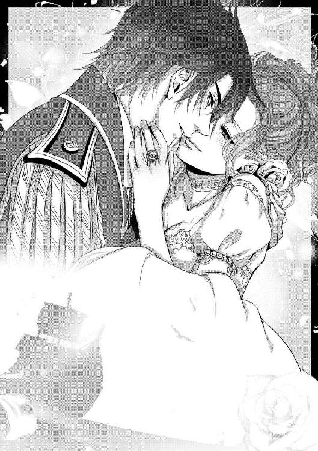
蓮いさらと申します。ご縁あって一迅社文庫アイリスでお話を発表させていただくことになりました。関係者の皆さまに厚く御礼申し上げますとともに、なによりも読んでくださったあなたに、このうえない感謝の念を捧げます。ありがとうございます！
このお話は、ぜひとも「ゾクバラ」と略してください。薔薇が好きなんです！ 漢字も響きも、花そのものも大好きです。原初の一重の薔薇も、改良された豪華な薔薇も、ついでにやたらに漢字が難しいところも好きです。憂鬱も醤油も書けないけど、薔薇は書けます。好きだから。そんな〝薔薇〟に、海賊だの姫だの守護者だの王だの城だのついたら、もう！ というわけで、こういうお話になりました。
イラストは、鈴ノ助先生にお願いすることができました。個人的にボカロが大好きで、いつも素敵な画を拝見していたので、お名前を伺ったときは飛びあがりました。ラティアはかわいらしいし、きれいな薔薇色の髪だし、クルサイドは凛々しくてかっこいいし。素敵なイラストを、皆さまにもご堪能いただければと思います。
今回は、本当にありがとうございました。またお目にかかれますことを夢見つつ。
海賊は薔薇にキスをする
２０１３年６月１日 初版発行
著 者 蓮 いさら
発行者 杉野庸介
発行所 株式会社一迅社
〒１６０―００２２
東京都新宿区新宿２―５―10 成信ビル８Ｆ
制 作 大日本印刷株式会社
©蓮いさら／一迅社
本書はフィクションです。実際の人物・団体・事件などには関係ありません。
本書の内容を無断で複製、複写、放送、データ配信等することは、堅くお断りいたします。